오늘의 arXiv Top 15
2026-10-19 (월) ·
cs.CV / cs.LG / cs.RO / cs.CL / cs.AI New submissions 전수 평가
cross-list · replacement 제외, 중복 병합 · Top 15은 원문까지 읽고 정리
489
신규 논문
106
cs.CV
126
cs.LG
61
cs.RO
104
cs.CL
92
cs.AI
15
정밀 리뷰
1차 스크리닝 489편 (Claude (scheduled agent)) → Top 15 PDF 정밀 리뷰 (Claude (scheduled agent))
분야별 필터
전체 15개 논문 표시 중
1
80점
Scaling Online Exploration for Robot Agents
Embodied AI
relevance 10/10
Robotics (cs.RO)
범용 coding agent가 teleoperation demonstration 없이 로봇과 직접 상호작용하며 online exploration만으로 perception-planning-control 전체를 담은 Python 프로그램을 스스로 작성하게 함. 시뮬레이션 5개 벤치마크에서 기존 최강 baseline 대비 평균 성공률을 37.4퍼센트포인트 올림.
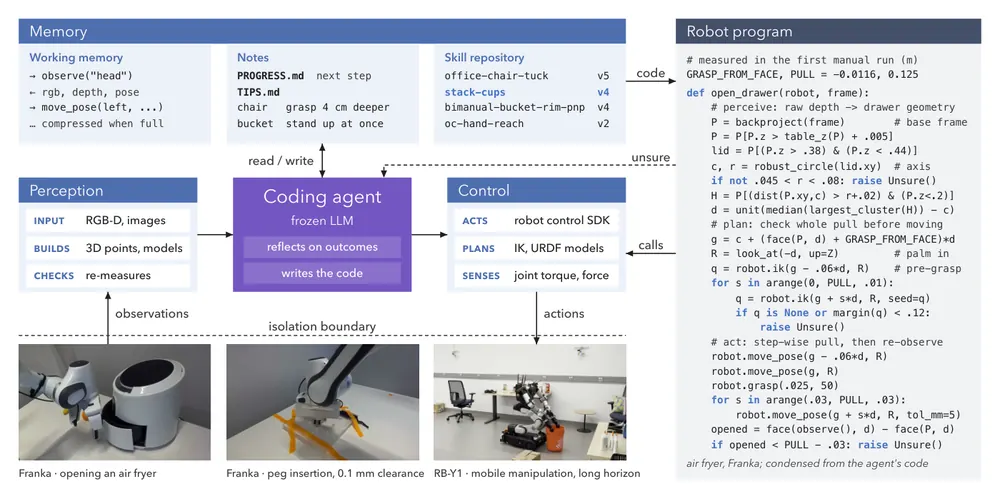
무슨 문제인가
VLA(vision-language-action) 모델과 world-action model은 대규모 teleoperation corpus로 사전학습된 VLM이나 video generation model을 fine-tuning하는 방식으로 발전해 왔음. 그런데 새 로봇이나 새 과제를 배치하려면 그때마다 전용 teleoperation corpus를 또 모아야 함. 그리고 학습된 policy의 역량은 모방한 demonstration의 범위 안에 묶여 있어서 처음 보는 장면이나 과제 구성에 일반화하거나 스스로 더 잘하도록 개선되지 못함. 저자들은 사람이 과제를 시도하고 결과를 관찰하고 실패를 진단하며 숙달하는 과정처럼, 로봇이 online 경험과 능동적 exploration만으로 새 skill을 발견하고 자가개선할 수 있는지를 핵심 질문으로 둠.
어떻게 푸나
RAX(Robot Agent eXploration)는 frozen 상태의 범용 coding agent에게 자연어 지시와 goal image 몇 장(선택), exploration episode budget을 줌. 그리고 policy 학습이나 hand-designed action primitive 없이 로봇의 perception·control interface를 MCP tool로 직접 호출하게 함. agent는 RGB-D와 force 신호로 3D point cloud를 만들어 대상의 기하 모델(예: 서랍이면 축과 손잡이 방향을 가진 articulated 모델)을 직접 구성함. 그리고 이 모델 위에서 IK·motion planning tool로 grasp·insertion 같은 동작을 탐색함. 성공한 결정 순서는 perception-planning-control 전체 loop를 담은 독립 실행형 Python program으로 컴파일되어 이후 agent의 LLM 추론 없이 고주파 closed-loop로 직접 실행됨. 새로운 환경 변화로 perception이나 planning이 실패하면 program이 raise Unsure() 예외를 던져 agent에게 제어권을 돌려줌. memory는 세션 내 작업 메모(working memory, notes)와 세션·과제를 넘나드는 버전 관리된 skill repository 두 timescale로 유지됨. skill은 성공 실행 증거와 함께 저장되어 다음 세션이 처음부터 다시 찾지 않고 재사용·조합할 수 있음. agent의 workspace(frontend)와 로봇 driver·simulator·안전장치(backend)를 tool interface로만 연결하는 구조를 둠. 그래서 같은 agent 구조로 단일 팔, bimanual, dexterous hand, mobile manipulator, humanoid를 teleoperation data 수집이나 policy 학습 없이 interface 연동만으로 추가함.
결과
- 시뮬레이션 5개 벤치마크(RoboDojo, BEHAVIOR-1K, DexJoCo, LIBERO-Pro, LIBERO)에서 미공개 장면(unseen scene)을 평가함. demonstration 없이 RAX의 평균 성공률이 기존 최강 baseline보다 37.4퍼센트포인트 높음. 그중 RoboDojo +53.4퍼센트포인트, BEHAVIOR-1K +38.3퍼센트포인트, DexJoCo +31.4퍼센트포인트, LIBERO-Pro +21.2퍼센트포인트로 새 state of the art를 세움. 다섯 번째 benchmark인 LIBERO의 개별 수치는 본문에서 확인 불가임.
- HumanoidArena에서는 RAX가 과제당 teleoperated demonstration 3개만 쓰고, 모든 baseline이 과제당 100개를 쓰는 조건에서도 RAX가 최강 baseline보다 7.9퍼센트포인트 높은 성공률을 보임.
- 실로봇에서 exploration으로 얻은 program을 컴파일한 뒤에는 한 번 성공하는 데 걸리는 추론 시간이 크게 줄어듦. air fryer 과제는 agent 추론 72분에서 컴파일된 program 18초로 241배 빨라지고, Bandu tower 과제는 17분에서 10초로 103배 빨라짐.
- 실로봇 정밀·장기과제도 demonstration 없이 수행함. ManipulationNet peg-in-hole 과제의 0.1mm 간격 구멍(L3)에 세 개 peg(hexagon, triangle, rectangle)를 모두 안착시킴(깊이 각 20.8mm, 19.7mm, 21.0mm, 전체 깊이 21.8mm 중). Bandu tower는 7개 조각을 완전 자동으로 재조립하며 knob을 urn 위 0.19mm 오차로 정렬함. RB-Y1에서는 이전 5개 세션에서 쌓은 skill을 재사용해 6단계로 구성된 장기 정리 과제를 3회 시도 모두 완료함.
한계
실로봇 사례 다수(peg insertion, Bandu tower, wiping, 장기 정리 등)에서 operator가 보드를 테이블에 고정하거나, 로봇을 재암(re-arm)하거나, 끼인 조각을 재배치하는 등 세션 중간 개입이 들어감. 성공 판정도 대부분 agent 자신의 측정·vision 비교나 사람의 육안 확인에 의존하고 독립된 외부 채점 기준은 쓰이지 않음. 과제 하나를 배우는 exploration 세션이 수십 분에서 수 시간(Bandu tower 세션은 약 6시간)까지 걸리고, 전체 실험에 든 API 비용이 10만 달러를 넘어 비용·시간 부담이 큼. Discussion 절 원문은 분량 제한으로 본문에서 확인 불가.
누리랩 연구와의 연결
- policy 학습 없이 coding agent가 직접 로봇을 제어하고, perception·planning 실패 시 raise Unsure() 예외로 agent에게 제어를 돌려주는 구조임. 이 구조는 failure detection·recovery와 robot memory(세션을 넘는 skill repository) 연구의 비교 대상으로 쓸 수 있음.
- RGB-D point cloud로 object-centric 3D 모델을 직접 구성하고 그 위에서 action을 계획하는 방식임. 이 방식은 object-centric 3D representation과 active perception(접촉 probing으로 위치 보정) 연구에 참고할 수 있음.
2
80점
Sample-Efficient Reinforcement Learning for Policy Improvement via Flow-Reversed Action Anchors
RL
relevance 9/10
Robotics (cs.RO)
frozen VLA policy를 조정하는 online RL에서 탐색 공간을 노이즈 전체가 아니라 flow reversal로 만든 state-conditioned action anchor 주변으로 구조화함. 같은 interaction budget에서 시뮬레이션 처리량이 DSRL 대비 97% 높고(294 대 149 completions/hr), 실로봇 3개 과제 평균 성공률이 37% 오름.
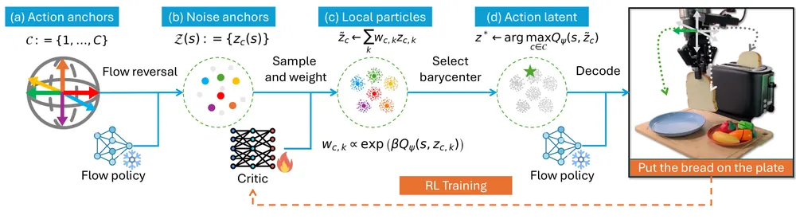
무슨 문제인가
π0 같은 generalist VLA(vision-language-action) policy는 배치 환경의 기하·clutter·물체 배치·과제 변형에 완벽히 대응하지 못하고, 이를 보완할 demonstration을 densely 모으는 비용이 큼. RL로 VLA를 post-training하는 한 방법은 policy는 고정하고 flow-matching policy가 action을 생성할 때 쓰는 noise latent 자체를 RL action으로 다뤄 노이즈 공간에서 steering을 배우는 것임(DSRL 등). 그런데 노이즈 공간은 behaviorally unstructured한 연속 공간이라 탐색이 비효율적이고, 저자들은 이 방식이 어려운 과제에서는 interaction budget 안에서 의미 있는 학습 신호를 거의 못 뽑는다고 보임. 핵심 질문은 frozen VLA를 조정하는 online RL에 어떤 action representation을 써야 하는가임.
어떻게 푸나
AnchorQ는 frozen flow-matching VLA를 그대로 두고 노이즈 latent 선택만 학습함. 먼저 카디널 방향 이동 같은 소수의 reference action(예: 좌우·상하 이동)을 매 decision마다 state 기준으로 flow reversal로 역변환해 state-conditioned noise anchor를 만듦. 각 anchor 주변에 Gaussian particle을 여러 개 뽑고, 학습 중인 critic Q 값으로 exponential value tilting을 적용해 값이 높은 particle에 더 큰 weight를 줌. weight로 가중평균한 barycenter를 anchor별 refined latent로 삼고, 이 중 critic 값이 가장 높은 anchor를 epsilon-greedy로 골라 frozen flow policy에 넣어 action을 생성·실행함. critic은 실행된 transition(state, latent, reward, next state)으로 TD(temporal difference) learning을 통해 online으로 갱신됨. tilting 강도 베타는 critic ensemble의 불일치로 추정한 epistemic uncertainty에 반비례하게 적응적으로 조절함.
결과
- LIBERO-90(시뮬레이션 조작 과제 90개 모음) 중 base policy가 학습하지 않은 15-task split에서, 500k environment step 기준 성공률이 AnchorQ 95.5%로 DSRL 48.3%, Residual RL 26.7%보다 높음.
- 더 어려운 LIBERO-90 hard-10 split과 RoboTwin(양팔 조작 과제 6개 모음)에서도 AnchorQ가 각각 62.1%, 70.5%로 DSRL(25.2%, 47.2%)과 Residual RL(14.6%, 0.0%)을 앞섬.
- 같은 interaction budget에서 시뮬레이션 전체 평균 처리량이 294 completions/hr로 DSRL의 149 completions/hr보다 97% 높음.
- 실로봇 Franka DROID 설정의 가정용 조작 과제 3개(컵 쌓기, 빵 토스트, 수건 걸기)에서 online episode 100회의 같은 budget으로 학습한 결과, AnchorQ가 frozen base policy와 DSRL을 세 과제 모두에서 능가함. abstract는 실로봇 평균 성공률이 37% 올랐다고 적었으나 과제별 정확한 수치는 Figure 5 그림에만 있고 본문 텍스트에서 확인 불가.
한계
실로봇 실험은 가정용 조작 과제 3개뿐이고 과제당 평가 configuration도 20개로 많지 않음. anchor로 쓰는 reference action(카디널 방향 등)은 과제별로 사람이 정의해야 함. 매 decision마다 anchor마다 여러 particle을 critic으로 평가해야 해서 추론 시 메모리·연산 비용이 늘어나며 저자도 이를 future work로 남김(behavior distillation 필요성 언급). 이론 결과는 anchor 집합에 near-optimal action이 포함되어 있다는 가정, critic 오차가 작다는 가정 등 이상화된 조건에서 성립함.
누리랩 연구와의 연결
- test-time optimization/inference-time planning에 정확히 들어맞음. VLA policy weight는 그대로 두고 latent noise를 online RL로 조정하는 구조라, 누리랩의 test-time training/optimization 연구와 직접 비교·확장 가능함.
- critic ensemble의 disagreement로 epistemic uncertainty를 추정해 탐색 강도(베타)를 조절하는 부분은 failure detection/recovery에서 실패 신호로 쓸 수 있는 불확실성 추정 기법으로 참고할 수 있음.
3
78점
Has GPT-6-Astra Achieved Embodied Intelligence?
Embodied AI
relevance 10/10
Robotics (cs.RO)
SenseNova 연구팀이 범용 멀티모달 모델 GPT-6-Astra를 in-context learning과 10배 실행 budget을 허용하는 통일 프로토콜로 12개 embodied benchmark에 평가함. LIBERO-Ultra-Long에서 98.9%, DexJoCo에서 87.3%를 기록해 기존 최고 성능을 크게 넘지만 실로봇 정밀 접촉 과제인 plug insertion에서는 11회 중 0회 성공함.
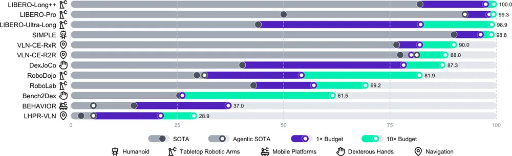
무슨 문제인가
기존 로봇 학습은 과제와 embodiment마다 VLA나 world action model(WAM) 같은 특화 모델을 따로 학습시키는 방식이 주류였음. GPT-6-Astra 같은 범용 모델이 zero-shot generalization과 in-context learning, failure recovery까지 보인다는 보고가 나오면서 특화 모델 패러다임 자체를 재검토할 필요가 생김. 다만 기존 benchmark는 고정된 step 수와 demonstration 접근 조건으로 설계돼 있어 이런 범용 모델의 실제 상한과 한계를 가려 왔음. 이 리포트는 GPT-6-Astra의 능력치를 끝까지 밀어붙인 뒤, 그 결과가 실제 현장 배치에서도 유지되는지를 따짐.
어떻게 푸나
평가는 네 단계로 이뤄짐. 먼저 tabletop manipulation, humanoid, mobile platform, dexterous hand, navigation을 아우르는 12개 benchmark에서 GPT-6-Astra 가중치를 고정함. 그 상태에서 학습 데이터로부터 task guidance·motion reference·visual reference·executable helper·checks and recovery·metadata 여섯 요소로 구성된 knowledge package를 만들게 함. 그리고 테스트 때 이를 읽어 쓰게 함(in-context learning). 각 benchmark는 공식 step 수(1x)와 그 10배(10x) budget 두 조건으로 돌려 추가 상호작용이 성능에 미치는 영향을 봄. 다음으로 RoboDojo(정밀 조작을 반복 보정해야 하는 tabletop manipulation 과제 benchmark)에서 GPT-6-Astra를 System 2 reasoner로, π0.5를 System 1 controller로 둠. 그리고 standalone VLA, open-loop, closed-loop 협업을 비교함. 또한 action representation(절대 EEF 좌표, directional command, joint angle), action chunking 방식을 바꿔 가며 token 비용과 성공률을 비교함. 세 번째로 Franka, dual-arm Piper, Tianji M6S dexterous hand, Galaxea R1 Pro, AgileX Tracer, Unitree G1 humanoid 등 8개 실로봇 플랫폼을 씀. 여기에 GPT-6-Astra를 zero-shot으로 배치함. 그리고 step 수 대신 wall-clock 시간으로 budget을 줌. 마지막으로 in-domain demonstration 없이 사람이 자연어로 표현한 과제를 주고 agent가 생각하는 동안에도 세계가 계속 바뀌는 차세대 benchmark 프로토타입을 제안함.
결과
- 12개 benchmark 중 LIBERO-Ultra-Long(LIBERO 계열의 초장기 horizon tabletop manipulation 과제 benchmark)은 98.9%를 기록함. DexJoCo(접촉이 많은 dexterous manipulation 과제 benchmark)는 87.3%를 기록함. 둘 다 standard(1x) budget에서 이미 기존 published SOTA의 거의 두 배에 해당하는 성공률임.
- RoboDojo는 budget을 1x에서 10x로 늘리자 성공률이 대략 세 배로 올라 81.9%에 도달했고, Bench2Dex(양손 dexterous manipulation 과제 benchmark)도 두 배 넘게 올라 61.5%에 도달함. 반면 LHPR-VLN(장기 vision-language navigation 과제 benchmark)은 10x에서도 28.9%에 그쳐 모든 benchmark 중 가장 낮음.
- RoboDojo harness ablation에서 standalone π0.5(VLA)의 성공률은 6.91%였고, closed-loop System 2 검토에 ICL까지 더한 조건은 54.17%로 오름. token 소비는 baseline 256만 개에서 1,934만 개로 늘어남.
- 실로봇 8개 플랫폼 zero-shot 평가에서 rigid pick-and-place는 18회 중 17회로 안정적이었음. 반면 plug insertion 같은 정밀 접촉 과제는 세 플랫폼 합쳐 11회 중 0회, AgileX Tracer의 navigation and search 과제는 23회 중 9회에 그침.
한계
ICL knowledge package는 해당 benchmark 학습 데이터에 묶여 있어 과제가 학습 분포에서 멀어지면 효과가 빠르게 약해짐. LIBERO-Ultra-Long과는 별도 benchmark인 LIBERO-Long++는 97% 넘게 성공하는 과제조차 episode 하나에 약 100만 token, 거의 한 시간이 듦. LIBERO-Ultra-Long 자체는 약 900만 token, 두 시간 가까이 걸려 실시간 배치에는 부담이 큼. 실로봇에서는 안전·하드웨어 제약 때문에 step을 늘려 성공률과 맞바꾸기 어렵고, GPT-6-Astra는 시각적으로 그럴듯한 상태를 실제 완료 조건과 혼동하거나 엎질러진 액체·떨어뜨린 부품처럼 되돌릴 수 없는 실수에서 회복하지 못하는 경우가 반복적으로 관찰됨. 또한 이 리포트는 GPT-6-Astra를 만든 쪽이 아니라 SenseNova 연구팀이 수행한 제품 평가이며, 저자의 주장(예: 차세대 benchmark 프로토타입)과 실제로 수치로 보인 결과는 구분해서 읽어야 함.
누리랩 연구와의 연결
- physical success 확인 실패, 비가역적 실수에서 회복 못 함, 긴 horizon에서 이전 진행 상태를 못 지키는 세 가지 실패 양상은 누리랩의 failure detection·recovery 연구와 바로 이어짐.
- ICL로 얻는 knowledge package(task guidance, motion reference, checks and recovery)는 weight 갱신 없이 test-time에 과거 경험을 재사용하는 구조임. 이 구조는 robot memory, test-time optimization 연구의 비교 대상으로 쓸 수 있음.
4
78점
LAW: Unifying Language, Action, and World Modeling for Agentic Physical Intelligence
VLA
relevance 9/10
Robotics (cs.RO)
로봇이 긴 조작 과제를 수행할 때 언어 계획, 행동 생성, world model을 semantic subtask 진행 상황 하나로 묶어 연결함. RoboTwin 50개 과제 평균 성공률을 Fast-WAM의 91.83%에서 94.21%로 올림.
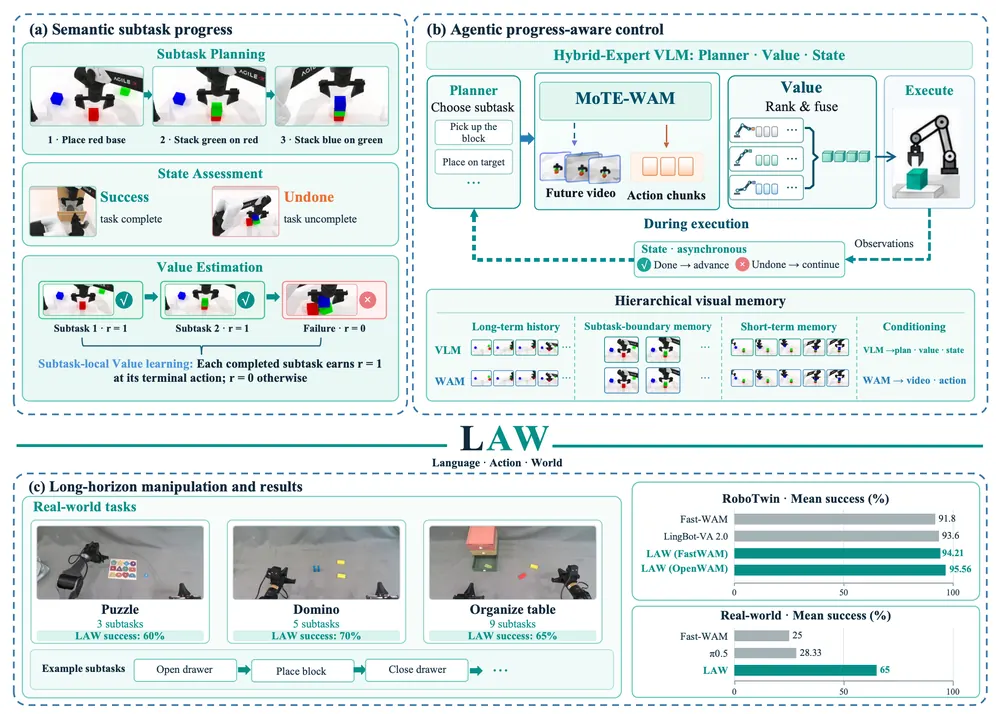
무슨 문제인가
긴 horizon의 조작 과제는 여러 semantic subtask의 연속이라서, 로봇은 매 순간 잡기가 실제로 성공했는지, 지금 단계가 끝나고 다음 단계로 넘어가야 하는지, 지금 목표에 맞는 행동이 무엇인지를 함께 판단해야 함. vision-language-action(VLA) policy는 semantic 표현을 제어에 연결하지만 실행이 진행되는 동안 계획을 갱신하지 못함. world-action model(WAM)은 행동 조건부 장면 변화를 예측해 행동 생성을 돕지만 그 행동이 지금 목표에 맞는지는 판단하지 못함. planner를 policy 앞에 단순히 붙이는 구조는 처음에 세운 계획이 중간 단계가 끝났는지 알 수 없음. 현재 관측만 보는 action generator는 어떤 시각 변화가 전체 목표에 중요한지 모름. 두 구조 모두 세 가지 인터페이스 문제(진행 상황이 계획을 어떻게 갱신하는지, 후보 행동을 지금 목표에 맞춰 어떻게 평가하는지, 관련 history를 어떻게 유지하는지)를 그대로 남김.
어떻게 푸나
LAW는 하나의 frozen VLM 백본 위에 LoRA adapter로 planner, state, value 세 expert를 얹은 hybrid-expert VLM을 가짐. 그리고 MoTE(Mixture-of-Transformer Experts)로 강화한 world-action model(MoTE-WAM)과 이 VLM을 닫힌 루프로 묶음. planner는 전체 지시문과 현재 관측을 보고 남은 subtask 순서를 예측하고, 그중 첫 번째가 현재 subtask가 됨. MoTE-WAM은 현재 subtask와 관측을 조건으로 서로 다른 noise에서 출발한 N개의 후보 action chunk를 생성함. value expert는 각 후보를 지금 subtask 기준으로 점수 매기고 상위 K개를 쿼터니언 가중 평균 등으로 융합해 실행할 action chunk를 만듦. state expert는 action 실행과 동시에 비동기로 현재 subtask 완료 여부를 추정하고, 완료가 확인되면 planner가 다음 subtask를 다시 예측해 전환함. MoTE는 video와 action 토큰이 mixed attention으로 정보를 교환한 뒤, 모달리티별 전용 expert와 두 모달리티가 공유하는 expert로 다시 한번 비선형 변환을 가해 video-action 공동 모델링을 강화함. VLM과 WAM은 각각 최근 관측·subtask 경계 관측·압축된 과거 관측으로 이루어진 별도의 계층형 메모리를 유지함. value expert 학습에는 subtask-local value learning을 써서, 실패한 episode라도 그 안에서 완료된 subtask의 마지막 행동에는 보상 1을 주고 나머지는 0으로 둬서 실패 궤적의 성공한 앞부분도 지도신호로 씀.
결과
- RoboTwin(양팔 조작 시뮬레이션 과제 50개)에서 clean/randomized 평균 성공률이 LAW+Fast-WAM 94.21%로, robot-data pretraining 없이 Fast-WAM 91.83%보다 2.38퍼센트포인트 높음. 그리고 pretrained 베이스라인 중 가장 강한 LingBot-VA 2.0(93.6%)도 넘음.
- WAM 백본을 OpenWAM-α로 바꾼 LAW+OpenWAM-α는 평균 95.56%(OpenWAM-α 단독 93.60%)로 RoboTwin에서 새 open-source state of the art를 세움.
- 실제 로봇 장기 과제 3개(Puzzle 3단계, Domino 5단계, Organize 9단계)를 각 20회씩 평가한 결과 평균 성공률이 LAW 65%, π0.5 28.33%, Fast-WAM 25%임. 0~100으로 정규화한 task score는 LAW 84.06, π0.5 55.50, Fast-WAM 51.87임.
- value-guided action fusion을 끄고 VLM만 바꾼 비교에서 LAW의 2B 파라미터 hybrid-expert VLM이 93.80%로, Embodied-R1.5(88.8%)와 GPT-5.5 High(88.7%)보다 5.0퍼센트포인트 이상 높음.
한계
value expert 학습에 쓰는 실패 궤적은 시뮬레이션에서 성공 시연을 재생하며 과제별로 정해진 실패 유형(놓침, 조기 release 등)을 인위적으로 주입해 만든 것이고, 실제 환경의 다양한 실패 양상을 다 담았다고 보장할 수 없음. 실로봇 평가는 과제 3개, 과제당 학습 궤적 300개로 범위가 제한적임. RoboTwin과는 별도 benchmark인 RoboDojo 비교에서 LAW는 추가 robot-domain pretraining이 없는 반면 비교 대상인 X-WAM, GigaWorld-Policy 등 일부는 그런 pretraining을 거쳤음. subtask 완료 판정은 0.5 threshold로 이진화되므로 완료 여부가 애매한 전환 구간에서는 오탐·누락 위험이 남음.
누리랩 연구와의 연결
- semantic subtask 진행 상황을 language reasoning·action generation·world model을 잇는 공통 인터페이스로 쓴 설계임. 이 설계는 누리랩의 VLA·world model 통합, failure detection·recovery(비동기 state expert가 완료·실패를 판정) 연구와 직접 연결됨.
- WAM이 생성한 복수 후보를 value expert로 inference 시점에 평가·융합하는 구조와, 실패 궤적의 성공한 앞부분만 골라 쓰는 subtask-local value learning이 있음. 이 둘은 test-time optimization과 robot memory 연구에 비교 대상으로 쓸 수 있음.
5
76점
BeJEPA: A Goal-Conditioned Humanoid Behavior World Model via Unsupervised RL
World Model
relevance 8/10
Robotics (cs.RO)
휴머노이드 전신제어에서 몸 자세와 world 좌표상 위치·방향을 하나의 policy로 함께 맞추는 goal-conditioned world model을 unsupervised RL로 학습함. 20초 동작추적 실험에서 global body-position 오차가 AMASS 기준 world-pose 입력을 쓴 BFM-Zero 대비 61.7%, SONIC 대비 58.7% 낮아짐.
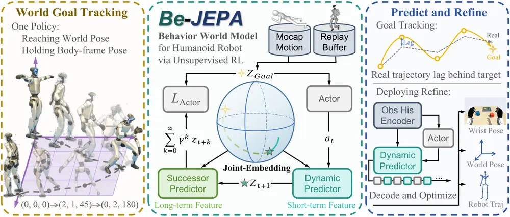
무슨 문제인가
사람 동작을 모사하는 기존 휴머노이드 controller는 root frame 기준으로 자세는 잘 재현하지만, 자세를 유지한 채로는 원래 목표 지점(world position·heading)에서 벗어난 상태를 되돌리지 못함. 위치를 바로잡으려면 로봇이 걸음을 옮겨야 하는데 이 과정에서 일시적으로 자세 일치도가 나빠지므로, 좋은 행동인지 판단하려면 그 행동이 자세뿐 아니라 world 목표 달성에 기여하는지까지 봐야 함. Meta Motivo·BFM-Zero 같은 unsupervised RL 기반 behavioral foundation model은 reward 없이 재사용 가능한 행동을 학습함. 하지만 BFM-Zero는 body-relative feature만 쓰므로 world 상의 절대 위치·heading이 학습된 목표에서 빠져 있음. 따라서 자세와 world 위치를 하나의 policy로 함께 맞추는 방법이 필요함.
어떻게 푸나
BeJEPA는 JEPA(joint-embedding predictive architecture: 관측을 latent 공간으로 사상해 그 공간에서 미래를 예측하는 구조) 기반 goal-conditioned Behavior World Model임. 사람 동작 prior와 robot interaction으로 학습함. 상태 st를 인코더 Eϕ로 latent zt로 사상하고 목표 상태도 같은 인코더로 zg로 사상한 뒤, 둘 사이 내적을 goal reward로 씀. Dynamic Predictor Dν(zt, at)는 행동에 따른 다음 latent를 예측하는 목표 독립적 one-step 물리 예측기임. Successor Predictor Sξ(zt, zg)는 특정 목표를 향한 policy를 따랐을 때 할인된 미래 latent feature의 합을 한 벡터로 예측하는 목표조건부 예측기임. 두 예측기는 온라인으로 모은 robot transition replay buffer와 사람 동작 reference dataset(목표 샘플링과 motion prior 역할)으로 encoder와 함께 학습됨. 별도의 downstream task reward는 쓰지 않음. actor는 현재 행동을 Dynamic으로 다음 latent로 옮기고 그 latent를 Successor로 평가해 목표와의 내적을 키우는 방향으로 학습되어, 긴 상상 rollout 없이 한 번의 물리 예측과 한 번의 행동 요약만으로 policy gradient를 얻음. 동작추적처럼 시간·공간 정밀도가 필요한 배포 상황에서는 Dynamic Predictor를 고정한 채 gradient 기반 latent MPC로 짧은 예측 rollout을 만듦. 이 rollout을 time-indexed reference와 맞춰 행동에 제한된 residual을 더하는 online action refinement를 추가로 적용함. 입력은 proprioception, 추정된 root pose, 최근 관측·행동 history이고 출력은 Unitree G1 29개 관절의 PD 목표값임.
결과
- 20초 장거리 동작추적 과제에서 global MPJPE(world 좌표 기준 전신 keypoint 오차)를 측정함. AMASS(대규모 사람 동작 캡처 데이터셋)에서 world-pose 입력으로 재학습한 BFM-Zero의 573.4mm에서 BeJEPA-MPC(Balanced)의 219.5mm로 낮아짐(61.7% 감소). SONIC의 531.5mm에서도 219.5mm로 낮아짐(58.7% 감소). 같은 조건에서 Humanoid-GPT의 832.4mm 대비로는 73.7% 낮아짐.
- Dynamic Predictor와 Successor Predictor를 하나로 합친 merged predictor와 비교함. 고정 목표 지점 도달 과제에서 root xy 평균 오차가 merged predictor의 1.348m에서 BeJEPA의 0.642m로 낮아짐. root yaw 평균 오차도 35.81도에서 24.02도로 낮아짐.
- 같은 pretrain 가중치에 online action refinement(BeJEPA-MPC Balanced)를 추가하면 6개 오차 지표 평균이 AMASS에서 31.2%, LAFAN(동작 전환 평가에 쓰이는 사람 동작 캡처 데이터셋)에서 13.4% 낮아짐. 기준 동작 대비 지연도 AMASS에서 94.8ms에서 21.2ms로, LAFAN에서 97.2ms에서 51.0ms로 줄어듦.
- 실제 Unitree G1에서 외부 발길질 이후 원위치 복귀, 바닥에서 일어서기, 연속된 목표 전환 후 같은 바닥 표시로 복귀하는 시연을 보임. 정량적 성공률은 본문에서 확인 불가함.
한계
실로봇 결과는 정성적 시연 3가지뿐이고 반복 시행에 따른 성공률·통계는 제시하지 않음. 비교 대상은 SONIC, Humanoid-GPT, world-pose로 재학습한 BFM-Zero로 한정됨. 저자도 Dynamic 기반 MPC가 먼 목표에서는 정확도가 낮아진다고 밝힘. Dynamic의 신뢰 가능한 예측 범위를 벗어나기 때문임.
누리랩 연구와의 연결
- JEPA 기반 world model에 goal-conditioned successor feature를 결합해 긴 imagined rollout 없이 policy improvement하는 설계임. world model·test-time optimization 연구에서 비교 대상으로 쓸 수 있음.
- 배포 시 frozen world model로 짧은 rollout을 예측해 action residual을 최적화하는 online MPC refinement는 VLA의 inference-time planning에 참고할 수 있음. manipulation이 아닌 whole-body locomotion 대상이라 직접 연결은 약함.
6
74점
ORD-WM: Learning Object-Centric Rigid Dynamics for 3D World Modeling in Robotic Manipulation
World Model
relevance 9/10
CoRL 양식 (추정)
Robotics (cs.RO)
로봇 조작 장면의 각 물체를 SE(3) 강체운동으로만 움직여 world model의 multi-step rollout에서 모양이 뒤틀리는 문제를 줄임. LIBERO 기반 평가에서 전체 궤적(평균 약 170 step) 동안 이동 물체의 점별 위치 오차가 PointWorld의 321.11mm에서 ORD-WM의 37.60mm로 줄어듦.
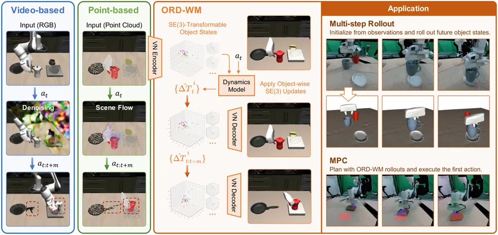
무슨 문제인가
World model은 로봇이 action을 하기 전에 물체 상태가 어떻게 바뀔지 미리 예측하게 해주는 수단임. 영상 기반 world model은 다음 프레임 이미지나 visual latent를 예측하는데, 이미지 공간에는 명시적인 metric 3D 상태가 없어서 시각적으로 그럴듯해 보여도 물체 geometry나 identity가 시간에 따라 일관되게 유지된다는 보장이 없음. point cloud나 particle, 3D Gaussian 같은 dense 3D 표현을 쓰는 world model은 물리적 공간에 더 가까움. 하지만 물체를 이루는 점이나 입자를 개별적으로 움직이기 때문에 한 물체에 속한 요소들이 하나의 rigid transformation으로 일치하는지는 학습에 맡겨짐. 그 결과 multi-step rollout을 거듭할수록 모양이 뒤틀리거나(shape drift) 물체 단위로 움직임이 어긋나는 문제가 쌓임. rigid-body simulator처럼 물체 geometry는 그대로 두고 pose만 body 단위로 갱신하는 구조가 이 문제에 대한 자연스러운 inductive bias가 됨.
어떻게 푸나
ORD-WM은 멀티뷰 RGB-D 입력에서 SAM 3로 물체 mask를 뽑고 depth를 역투영해 물체별 point cloud를 만듦. 각 물체의 중심을 뺀 point cloud는 VN(vector neuron)-PointNet encoder를 거쳐 3D vector feature로 이루어진 latent로 변환됨. 이 encoder는 SO(3)-equivariant해서 입력을 회전시키면 latent도 같은 만큼 회전함. 이 latent는 SDF(signed distance field)를 예측하는 decoder로 학습되고, decoder는 latent와 query point를 같이 회전시켜도 같은 거리값을 내도록 rotation-invariant하게 설계됨(SDF-VNVAE). 학습 후에는 posterior mean을 물체 geometry latent로 쓰고 물체 중심을 더해 object state로 삼음. dynamics model은 현재 scene의 물체 state들과 robot proprioception(forward kinematics로 구한 gripper part token), action을 transformer에 넣음. 그래서 물체별 interaction feature를 뽑음. 그리고 각 floating object마다 translation 증가분과 6D rotation으로 표현된 SE(3) motion increment를 예측함. 이 증가분은 다음 latent를 통째로 새로 생성하는 대신, 예측된 rotation을 geometry latent의 모든 3D vector feature에 analytically 적용함. 그리고 translation을 물체 중심에 더하는 방식으로 object state에 직접 반영됨. 이 구조 덕분에 multi-step rollout에서 매 step마다 point cloud를 다시 만들거나 재인코딩할 필요가 없음. 학습된 dynamics model은 MPC에도 쓰임. CEM(cross-entropy method)으로 후보 action sequence를 latent 공간에서 rollout해 비용을 평가함. 그리고 가장 낮은 비용의 sequence 중 첫 action만 실행한 뒤 다시 관측해 replanning하는 receding-horizon 방식으로 동작함.
결과
- LIBERO 기반 held-out 궤적에서 ground-truth action으로 rollout했을 때, 전체 궤적(평균 약 170 step) 동안 이동하는 물체의 점별 ℓ2 오차가 ORD-WM 37.60mm임. 같은 조건에서 공개된 PointWorld 체크포인트는 321.11mm, LIBERO로 fine-tuning한 PointWorld(ft)는 225.68mm임. fine-tuning으로도 모양 drift는 남음.
- VN latent에 SE(3) update를 적용하는 구조를 떼고 다음 latent를 직접 예측하게 바꾼 w/o SE(3) update variant는 전체 궤적 Surface Chamfer Distance가 131.600mm임. 이는 ORD-WM의 4.729mm보다 크게 나쁨. 같은 VN 기반 latent를 쓰는데도 analytic rigid update가 있고 없고에서 큰 차이가 남.
- 실로봇 pushing task의 MPC에서 CEM 후보 수를 64개에서 1024개로 늘리면 성공률(최종 위치 오차 2cm 이하 기준)이 10%에서 90%로 오르고 평균 위치 오차는 3.72cm에서 0.972cm로 줄어듦. 이때도 1024개 후보 기준 replanning 1회당 계획 시간은 269.9ms로 0.3초 이내임(RTX 3090 기준).
한계
물체를 floating 아니면 fixed rigid body로만 모델링해서 관절이 있거나 변형되는 물체는 다루지 못함. mass·friction·contact는 관측된 transition에서 암묵적으로만 학습되고 non-penetration 같은 접촉 제약은 명시적으로 걸지 않아서, 같은 관측과 action이라도 물리 파라미터가 다르면 구분하지 못함. 저자도 아직 더 크고 다양한 데이터셋·task로는 평가하지 못했다고 밝힘. 평가는 LIBERO 기반 시뮬레이션과 Franka 로봇 pushing·pick-and-place로 한정되어 있고, pick-and-place에 대한 정량적 성공률 수치는 본문에서 확인 불가.
누리랩 연구와의 연결
- object-centric 3D representation과 SE(3) rigid dynamics를 결합해 world model을 구성한 사례임. 누리랩의 world model, object-centric 3D/4D representation 연구와 바로 비교 대상이 됨.
- MPC로 후보 action을 world model rollout으로 평가하고 실행하는 구조는 test-time optimization/inference-time planning 연구에서 baseline으로 참고 가능함.
7
72점
AWAM: Active Trajectory-Conditioned View Imagination for Robust Robot Manipulation
Manipulation
relevance 9/10
ICLR 양식 (추정)
Robotics (cs.RO)
초기 관측에서 가려진 영역을 실제로 카메라를 움직이지 않고, 예측한 가상 카메라 궤적을 따라 world model로 미리 상상해 고정 메모리로 압축해 두고 조작 시 재사용하는 방법임. occlusion이 심한 LIBERO-Occ에서 평균 성공률 75.9%로 가장 강한 baseline보다 높았고, 실로봇 3개 과제에서도 평균 94.4%를 기록함.
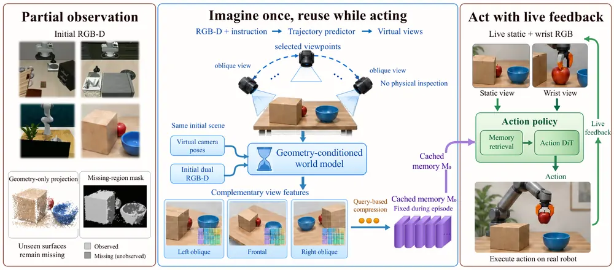
무슨 문제인가
기존 VLA policy는 구조화된 환경에서는 잘 동작하지만, 실제 배치 환경에서는 clutter, occlusion, 카메라 시점 변화로 조작에 필요한 공간 정보가 가려지는 경우가 많음. 더 표현력 있는 action model을 쓰더라도 입력에 아예 없는 장면 증거를 되살릴 수는 없어서, 잘 관측된 장면에서 얻은 성능 향상이 부분적으로만 관측되는 환경으로 그대로 옮겨가지 않음. 물리적으로 카메라를 움직여 추가 증거를 얻는 active perception은 실행 단계를 늘리고 로봇·장면 상태를 바꾸는 비용이 있음. 기존 가상 시점 방법도 미리 정해진 후보 시점 중에서 고르거나 재구성된 geometry를 재렌더링하는 수준이라, 애초에 한 번도 관측되지 않은 표면은 복원하지 못함.
어떻게 푸나
AWAM(Active World-Action Model)은 에피소드 초기의 정적·손목 카메라 RGB-D와 언어 지시를 입력받아, 과제에 맞는 가상 카메라 궤적을 autoregressive transformer로 예측함. 이 궤적은 로봇이 실제로 실행하지 않고, 어디를 더 잘 봐야 하는지를 묻는 가상의 질의로만 쓰임. 예측된 궤적을 따라 initial RGB-D를 역투영해 만든 3D point cloud를 렌더링하면 관측되지 않은 영역은 구멍으로 남음. 이를 WorldStereo(카메라 궤적을 조건으로 장면의 새 시점을 생성하는 사전학습 geometry-conditioned world model)가 채워 넣어 multi-view latent feature를 생성함. 이 feature들은 query 기반 encoder로 view 내부 attention과 view 간 attention을 거쳐 고정 크기의 world memory M0로 압축되고, 에피소드당 한 번만 만들어져 이후 고정됨. 매 control step마다 현재 static·wrist RGB를 encoding한 live visual token이 M0를 key/value로 하는 residual cross-attention으로 예측 맥락을 꺼내 옴. 이 fused feature와 proprioception, 언어 지시를 받아 diffusion transformer(Action DiT)가 짧은 action chunk를 생성함.
결과
- LIBERO-Occ(occlusion 상황에서 조작 로봇을 평가하는 시뮬레이션 벤치마크, Spatial/Object/Goal/Long 4개 suite 총 2,000 rollout)에서 평균 성공률을 측정함. AWAM이 75.9%로 π0 70.0%, Fast-WAM 73.0%, VIM 74.0%보다 높음.
- 카메라 시점·로봇 초기 상태·조명 등 7가지 조건으로 분포 변화를 주는 LIBERO-Plus(10,030개 instance)에서 instance-weighted 성공률이 AWAM 62.4%로 π0 53.6%, Fast-WAM 48.2%를 앞섬. 특히 camera 조건에서는 53.4%로 π0의 13.8%보다 크게 높음.
- 실제 ARCHER-Y6 로봇으로 가려진 사과 꺼내기, 클러터 속 병 옮기기, 가려진 블록 집어넣기 3개 과제를 각 30회씩 총 90회 시행함. AWAM이 85/90(94.4%) 성공해 π0 66/90(73.3%), Motus 73/90(81.1%), Fast-WAM 72/90(80.0%)보다 높음.
- LIBERO-Occ에서의 component ablation 결과, predictive memory branch 전체를 빼고 live observation만 쓰면 성공률이 75.9%에서 64.4%로 11.5퍼센트포인트 낮아짐. 학습된 궤적 대신 구 형태로 고르게 샘플링한 시점을 쓰면 70.2%로 5.7퍼센트포인트 낮아짐.
한계
world memory M0는 에피소드 초반 한 번만 만들어져 고정되므로, 조작 중 물체 상태가 크게 바뀌는 LIBERO-Occ Long suite에서는 Fast-WAM(44.2%)보다 낮은 41.0%에 그침. calibrated camera와 metric depth가 있어야 동작해서 순수 이미지 기반 policy보다 센싱 조건을 더 요구함. RLBench-OG(occlusion 상황의 조작 로봇 평가용 시뮬레이션 벤치마크)의 block pyramid(12.0%), solve puzzle(1.3%)처럼 정밀한 다단계 상호작용이 필요한 과제는 가시성 확보만으로는 풀리지 않아 성능이 낮게 남음. 저자도 상태 변화에 맞춰 memory를 다시 만드는 것을 향후 과제로 남김.
누리랩 연구와의 연결
- world model을 미래 행동 예측이 아니라 현재 장면에서 가려진 부분을 능동적으로 질의하는 active perception 용도로 쓴 사례임. active perception/NBV, object-centric 3D representation 연구에서 비교 대상으로 쓸 수 있음.
- 가상 궤적을 실제로 실행하지 않고 질의로만 쓰는 설계는 실행 비용 없이 탐색하는 test-time optimization/inference-time planning 아이디어에 참고가 됨.
8
72점
Look Before You Act: Bridging Active Perception and Vision-Language-Action Models via Observation-Aligned Data Adaptation
VLA
relevance 9/10
ICRA·IROS·RA-L 계열 양식 (추정)
Robotics (cs.RO)
active perception으로 로봇이 가려진 물체를 보려고 wrist camera를 움직이면 그 결과로 생긴 관측이 VLA 정책의 학습 분포를 벗어나 오히려 실패가 늘어남. 이 문제를 active perception이 멈춘 지점에서 시작하는 demonstration을 새로 만들어 VLA를 fine-tuning하는 방식으로 해결함. LIBERO 40개 과제에서 π0 성공률을 30.7%에서 70.7%로, π0.5를 46.3%에서 72.7%로 올림.
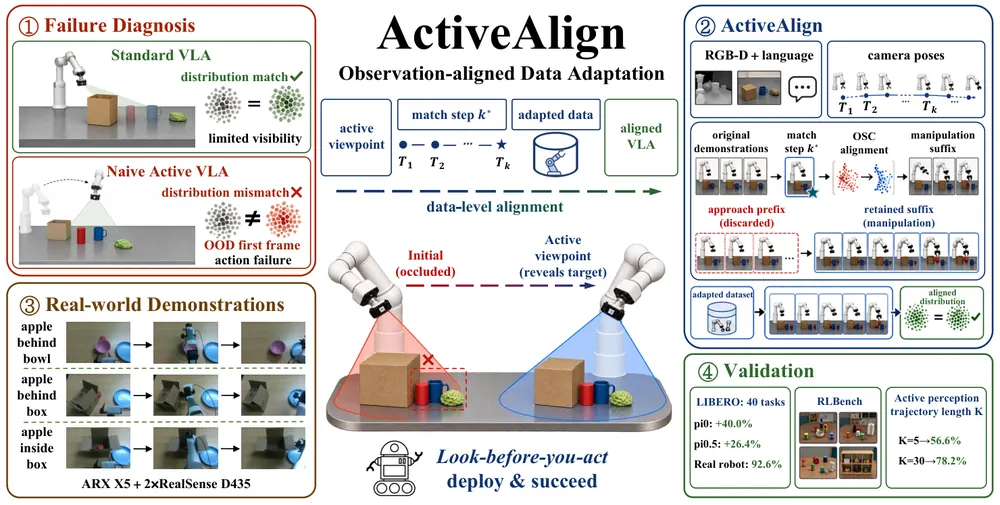
무슨 문제인가
VLA 정책은 학습에 쓰인 demonstration의 관측-상태 분포에서만 잘 동작하는데, 로봇이 가려진 물체를 보려고 wrist camera를 능동적으로 움직이면(active perception) 이 분포를 벗어난 첫 프레임이 만들어짐. 저자들은 이를 first-frame distribution sensitivity라고 부름. LIBERO perturbed-start 환경에서 active perception module을 돌린 뒤 결과를 그대로 π0.5에 넘기면 평균 성공률이 46.3%에서 11.5%로, π0는 30.7%에서 7.0%로 낮아짐. 이는 더 좋은 시점을 고르는 것과 그 시점에서 행동을 잇는 것이 서로 다른 요구사항임을 보여줌. 기존 demonstration augmentation(MimicGen, DemoGen)은 시각적 다양성만 넓힐 뿐 active perception이 만든 상태에서 이어질 행동 자체는 제공하지 않음.
어떻게 푸나
ActiveAlign은 active perception이 멈춘 지점에서 시작하는 demonstration을 오프라인으로 새로 만들어 VLA를 fine-tuning함. 먼저 scene RGBD와 언어 instruction을 입력받는 viewpoint module이 CLIP으로 뽑은 RGB·depth 특징과 언어 특징을 합쳐 autoregressive transformer로 카메라 pose 토큰 시퀀스(기본 K=30)를 생성함. 환경을 각 demonstration의 시작 상태로 복원한 뒤 이 카메라 궤적을 실행하고, 끝점의 end-effector 상태와 가장 가까운 원본 demonstration 상태를 prefix window [0.05T, 0.30T] 안에서 찾음. operational space control(OSC, 기본 20 step)로 끝점과 매칭된 상태 사이의 잔차를 메우는 closed-loop alignment를 수행함. 이후 원본 demonstration의 나머지 조작 구간(suffix)을 그대로 재생하고, 끝까지 성공한 episode만 학습 데이터로 남김. 이렇게 active perception으로 접근한 구간과 원본 suffix를 이어 붙인 데이터로 VLA를 fine-tuning함. 배포 때는 같은 viewpoint module을 물체 접촉 전 한 번 돌리고 이후는 fine-tuning된 VLA가 새 관측으로 조작을 이어감. 정책 구조는 바뀌지 않고 fine-tuning 데이터와 가중치만 바뀜.
결과
- LIBERO 40개 과제(perturbed-start 조건)에서 평균 성공률이 π0는 Standard 30.7%에서 ActiveAlign 70.7%로, π0.5는 46.3%에서 72.7%로 오름. active perception만 붙이고 fine-tuning은 안 한 Naive Active는 π0 7.0%, π0.5 11.5%로 Standard보다 더 낮음.
- LIBERO Spatial에서 matched-state control(카메라 시점만 기본값으로 고정하고 나머지 조건은 ActiveAlign과 동일)은 54.6%에 그쳐 ActiveAlign 78.2%와 23.6퍼센트포인트 차이남. random-view adaptation 58.0%, broad viewpoint jitter 61.4%도 ActiveAlign보다 낮아, 단순 데이터량이나 시점 다양성이 아니라 배포 시점과 맞춘 informative view 자체가 이득의 원인임을 보여줌.
- LIBERO-Occ(초기 시점에서 target이 가려진 과제)에서 π0.5 기준 ActiveAlign이 Standard 대비 Spatial·Object·Goal·Long에서 각각 28.6, 24.6, 22.4, 34.6퍼센트포인트 높음.
- 실제 로봇 occlusion 평가(π0.5, apple 3과제 x 3단계 가림 x 10회)에서 성공률이 Standard 35/90(38.9%)에서 ActiveAlign 83/90(92.2%)으로 오름. 과제 다양성 평가(컵 집기, 퍼즐 꺼내기, observe-open-grasp-place)에서도 ActiveAlign이 세 과제 모두에서 Standard·Naive Active를 앞섬(각 17/20, 15/20, 13/20).
한계
ActiveAlign은 오프라인 데이터 구축 단계에서 환경을 원래 상태로 복원할 수 있어야 하고, active 시점의 끝점에서 원본 demonstration suffix가 재생 가능해야만 학습 데이터로 남길 수 있음(시뮬레이션 86.8%, 실로봇 86.0% 유지율). 그래서 adapted dataset은 재생에 성공한 끝점 쪽으로 치우친 부분집합이고, 배포 때 나올 수 있는 더 어려운 끝점은 데이터에 덜 반영됨. viewpoint 선택은 물체 접촉 전 한 번만 이루어져 조작 도중 움직이는 가림막에는 대응하지 못하고, RLBench 실험은 perception 궤적 전이만 확인한 것이고 end-to-end 조작 성공은 측정하지 않음.
누리랩 연구와의 연결
- active perception과 VLA policy 사이의 observation-state distribution 불일치를 직접 다룬 사례로, active perception/NBV를 VLA와 함께 쓰는 연구에서 baseline이나 비교 대상으로 쓸 수 있음.
- demonstration의 접근 구간만 교체하고 나머지는 재생해서 fine-tuning 데이터를 만드는 방식임. test-time에 추가로 선택한 시점이나 행동을 기존 학습 분포와 정합시키는 문제 일반(test-time optimization, failure recovery 중 재관측)에 참고할 수 있음.
9
72점
Beyond Action Prediction: Learning Search-Free Planning in Latent Space
World Model
relevance 8/10
ICLR 양식 (추정)
Robotics (cs.RO)
latent world model로 visual planning을 할 때 CEM 같은 test-time search를 쓰지 않음. 대신 goal-conditioned inverse dynamics model과 latent predictor를 번갈아 적용해 바로 action을 만드는 방법임. 4개 visual control task 16개 조건 평균 성공률 86.8%로 가장 강한 baseline보다 4.9퍼센트포인트 높고, 같은 replanning 횟수 기준 LeWM 대비 1.9~16.5배 빠름.
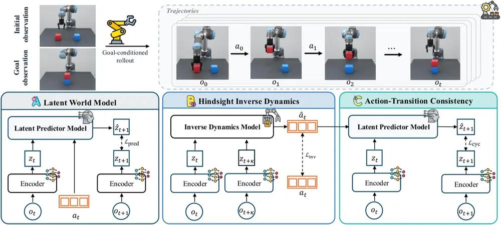
무슨 문제인가
latent world model은 offline trajectory에서 action-conditioned latent predictor를 배워 visual planning에 씀. 하지만 실제 planning 단계에서는 CEM이나 MPPI 같은 optimizer로 매 replanning마다 수많은 후보 action sequence를 만들고 평가해야 해서 test-time 계산 비용이 큼. 이를 피하려고 goal-conditioned inverse model로 현재와 목표 관측에서 바로 action을 예측하는 접근이 나왔음. 하지만 이 경우 action prediction만으로는 goal representation이 action에 관련된 정보를 담는다는 보장도, 예측된 action이 학습된 latent predictor의 transition과 일치한다는 보장도 없음. 기존 SMWM·Delta-JEPA·GC-IDM·INTACT 등은 action supervision의 가치는 보였지만 이 두 문제를 동시에 다루지 않았음.
어떻게 푸나
HIJP(Hindsight Inverse JEPA Planning)는 visual encoder, latent predictor model, goal-conditioned inverse dynamics model 세 가지를 end-to-end로 같이 학습함. 먼저 offline trajectory에서 window를 뽑아 anchor 시점과 그보다 뒤에 있는 미래 offset을 무작위로 정함. 그 미래 관측을 hindsight goal로 relabeling해서 inverse model이 anchor 시점의 실제 action을 맞히도록 학습시킴(L_inv). 이때 gradient를 goal representation 쪽으로도 흘려보내 action supervision이 goal 쪽 시각 표현까지 바꾸게 함. 다음으로 inverse model이 예측한 action을 latent predictor에 넣어 한 스텝 뒤 latent state를 만듦. 이를 실제 다음 관측의 encoding과 맞추는 action-transition consistency loss(L_cyc)를 추가해 inverse model과 predictor가 같이 쓰이는 조합 자체를 학습 단계에서 맞춰줌. 전체 loss는 latent prediction loss, representation regularization(SIGReg), L_inv, L_cyc를 합친 것임. inference 시에는 현재 관측과 목표 관측을 인코딩한 뒤 inverse model이 action을 예측하고 predictor가 그 action으로 latent state를 한 스텝 전진시키는 과정을 H=5 스텝 반복해 plan을 만듦. 이를 실행한 뒤 다시 관측해 반복하는 receding-horizon 방식으로 동작함. 후보 action sequence를 샘플링하거나 반복적으로 최적화하는 search 과정이 없음.
결과
- 4개 task(TwoRoom, Reacher, PushT, OGCube) 16개 task-tier 조합 평균 성공률이 HIJP 86.8%로, 가장 강한 baseline인 INTACT(end-to-end search-free 방식) 81.9%보다 4.9퍼센트포인트 높음.
- 가장 어려운 PushT task에서 hard tier 성공률 66%, extreme tier 42%로, 각 tier에서 가장 좋은 baseline(LeWM 58%, DINO-WM 28%)보다 8퍼센트포인트, 14퍼센트포인트 높음.
- 같은 replanning 횟수 기준 CEM 기반 world model planner인 LeWM 대비 planning 시간이 1.9~16.5배 빠름. task별 평균 speedup은 PushT 15.0배, TwoRoom 6.2배, Reacher 7.1배, OGCube 2.8배임.
- ablation은 Reacher·PushT·OGCube 3개 task(TwoRoom은 모든 변형이 거의 100% 성공해 제외, 총 12개 task-tier)의 평균으로 측정함. hindsight inverse dynamics loss(L_inv)를 빼면 이 12개 task-tier 평균 성공률이 82.5%에서 45.7%로 낮아져, 테스트한 구성요소 중 가장 큰 성능 하락을 보임.
한계
평가가 TwoRoom(2D navigation), Reacher(DMControl reacher), PushT(planar pushing), OGCube(OGBench cube manipulation) 네 개 시뮬레이션 benchmark로만 이뤄짐. LeWM이 공개한 offline dataset을 그대로 씀. 실로봇 실험은 없음. planning horizon과 replanning schedule이 고정돼 있고 저자도 limitation에서 더 긴 horizon의 task로 확장하는 것을 future work로 남겨둠. 코드 공개 여부는 본문에서 확인 불가.
누리랩 연구와의 연결
- CEM 같은 online search 대신 학습 단계에서 inverse model과 predictor의 조합 자체를 맞춰 넣어 search-free로 만드는 접근임. test-time optimization/inference-time planning 주제에서 baseline 또는 비교 대상으로 쓸 수 있음.
- hindsight relabeling으로 여러 시간 폭의 goal을 만들어 representation을 학습한 방식은 VLA의 goal-conditioned policy나 long-horizon planning 쪽에 적용해볼 여지가 있음.
10
70점
Embodiment-Classifier Guidance: Transferring Frozen VLAs Across Robot Dynamics without Demonstrations
VLA
relevance 9/10
CoRL 양식 (추정)
Robotics (cs.RO)
π0 가중치는 그대로 둔 채 target body의 적은 calibration rollout만으로 작은 classifier를 학습함. 이 classifier의 gradient로 frozen flow VLA를 새 robot body(dynamics가 다른 arm·controller)에 맞게 조정하는 embodiment-classifier guidance를 제안함. LIBERO 12개 suite-controller 조합에서 평균 성공률을 72%에서 80%로 올림.
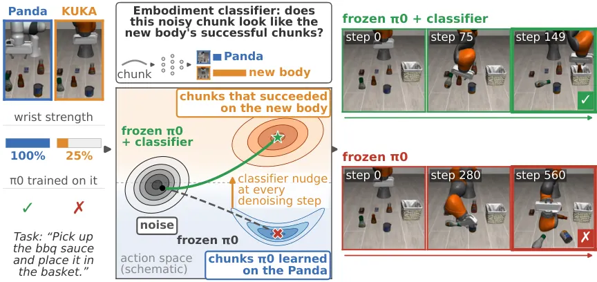
무슨 문제인가
π0 같은 flow 기반 VLA는 고정된 robot body(arm과 저수준 controller) 집합으로 학습됨. controller가 더 부드럽거나 명령 지연이 있거나 wrist motor가 약한 새 body에 그대로 올리면 같은 scene과 task에서도 실패함. 이 격차를 메우는 기존 방법은 target body에서 demonstration을 모아 fine-tuning하거나 reward로 task별 steering policy를 따로 학습하는 것임. 둘 다 target body마다 추가 데이터 수집이나 policy 가중치 업데이트가 필요함. π0는 자신이 어느 body를 제어하는지 입력으로 받지 않아 항상 source body에 맞는 action chunk를 생성하는 것이 문제의 근원임.
어떻게 푸나
저자는 π0 가중치는 고정한 채 작은 embodiment classifier(4-layer transformer, 약 0.8M parameter)를 학습함. 이 classifier는 source body에서 성공한 action chunk와 target body의 몇 개 calibration task에서 성공한 action chunk를 구별하도록 학습됨. classifier는 image·instruction·task label 없이 noise가 섞인 action chunk와 flow time만 입력받음. π0의 action 표현이 현재 end-effector pose를 빼는 방식이라 pose 정보는 암묵적으로 전달됨. inference 시 π0가 noise에서 action chunk로 가는 10번의 denoising(Euler) step마다 classifier의 gradient를 velocity에 더해, chunk를 target body 성공 분포 쪽으로 밀어줌. gradient에는 weight w(calibration task에서 1·2·4 중 선택), t=1 근처를 위한 clamp, π0 step 크기의 20%로 nudge를 제한하는 cap이 붙음. 평가에 쓰는 transfer task는 π0가 source body로는 이미 학습 때 본 과제라서, 이 실험은 새 task에 대한 generalization이 아니라 순수하게 robot dynamics 전이만을 측정함.
결과
- LIBERO 4개 suite × controller 변경 4종, 총 12개 suite-body 조합에서 guidance 적용 시 평균 성공률이 72%에서 80%로 오름(2,400 episode 중 1,718건에서 1,931건 성공). 실패율은 31% 상대적으로 줄음. 11/12 조합에서 향상했고 Holm correction 후 5개가 유의함.
- weak wrist·기타 결함에서는 결과가 엇갈림. Kinova(wrist 10% 강도)는 70%에서 85%로, KUKA(wrist 25% 강도)는 42%에서 52.5%로(3-seed 평균) 오름. 반면 Sawyer(wrist 25% 강도)는 41%에서 25%로, Panda(wrist 10% 강도)는 47%에서 37.5%로 낮아짐. wrist-roll joint를 아예 잠근 body에서는 68.5%에서 36%로 가장 크게 낮아짐.
- guided self-collection 실험: KUKA arm에서 guided π0가 만든 성공 rollout으로 classifier를 다시 학습하면 성공률이 52.5%에서 70.7%로 오름. 같은 수의 rollout을 unguided π0로 추가 수집한 경우는 57.8%에 그침.
- ablation에서 같은 classifier로 unguided 샘플 여러 개 중 점수가 높은 것만 고르는 reranking은 효과가 없었음(KUKA 35.5%, unguided 42%보다 오히려 낮음). 같은 데이터 예산으로 한 untuned LoRA fine-tuning은 KUKA에서 29.5%로 unguided보다 더 낮아짐.
한계
모든 실험이 LIBERO/robosuite 시뮬레이션, 단일 π0 checkpoint, 단일 benchmark로만 이루어짐. classifier가 양쪽 body 모두에서 success-labeled rollout과 suite별 target-body calibration data를 필요로 해서 완전한 demonstration-free는 아님. classifier 입력이 end-effector pose를 암묵적으로 포함해 로봇이 어디로 가는지와 어떻게 움직이는지를 분리하지 못하고, 어떤 body에서 guidance가 도움이 될지 미리 가려내는 사전등록 규칙은 8개 중 5개만 맞혀 실패함(논문도 이를 인정). sweep으로 추가 등록한 controller body 6개 중 기준을 만족한 것은 3개뿐이라 전체 controller family에 대한 claim도 실패함.
누리랩 연구와의 연결
- frozen VLA를 demonstration 없이 test-time에 새 body로 steering하는 방법임. 누리랩의 test-time optimization/inference-time planning 및 embodiment transfer 주제와 직접 이어짐.
- locked wrist 같은 body에서 guidance가 오히려 성능을 해친다는 결과는 언제 개입이 도움되는지 미리 판별하는 문제로, failure detection·diagnosis 연구에 참고할 사례가 됨.
11
70점
When Plans Change, Remember: Replanning-Guided Visual Memory for Vision-Language-Action Models
VLA
relevance 9/10
NeurIPS 2026 채택
Robotics (cs.RO)
VLA policy가 매 replanning마다 만드는 action chunk끼리 겹치는 예측을 비교해, 예측이 평소보다 크게 바뀌는 순간을 memory에 쓸 신호로 재사용하는 RePlanMem-VLA를 제안함. 사전학습된 OpenVLA-OFT와 π0.5에서 keyframe detection ROC-AUC가 0.981~0.997에 달함. robot masking을 추가하면 OpenVLA-OFT의 memory write 횟수가 336회에서 169회로, FIFO eviction이 186회에서 19회로 줄면서도 과제 관련 keyframe은 평가한 50개 episode 전부에서 유지됨.
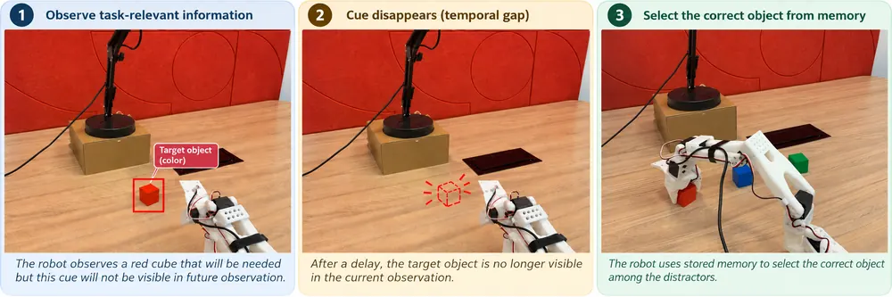
무슨 문제인가
Long-horizon multi-stage 조작 과제에서 VLA policy는 지금 보이지 않는 과거 시각 정보(물체 속성, 이전 환경 상태, 과제 진행 단계)가 필요한 경우가 많음. 전체 observation history를 다 들고 있으면 context 길이와 연산량이 늘고 중복도 커지므로, 소수의 중요한 observation만 골라 memory에 남기는 selective visual memory가 필요함. 기존 keyframe 선택 방법은 vision-language model, waypoint 휴리스틱, 학습된 retrieval, progress 추정, 별도 event detector처럼 policy 바깥의 추가 신호나 선택기에 의존함. 이 논문은 policy가 매 replanning마다 스스로 만들어 내는 plan 수정 자체를 memory 기록 신호로 쓸 수 있는지를 검토함.
어떻게 푸나
RePlanMem-VLA는 receding-horizon 실행에서 연속된 두 action chunk가 같은 미래 시점을 겹쳐서 예측한다는 점을 이용함. chunk 길이 K, 실행 stride H일 때, 직전 chunk의 겹치는 구간 Uq와 새 observation을 반영한 이번 chunk의 겹치는 구간 Vq를 비교함. 이 비교로 aligned action error, 방향 불일치, translation/rotation/gripper 차이, VLM top-view feature 거리 등 10개 disagreement 신호를 구함. 이 값의 시간차와 causal EMA 이탈을 더해 30차원 입력을 만듦. 이 입력을 과제별로 정규화한 뒤 causal Mahalanobis surprise score로 합쳐, 과제별 reference 분포에서 상위 percentile을 넘으면(threshold τ) event로 판정함. event가 뜨면 현재 쿼리 직전 window(관측 3개)와 기존 memory 슬롯을 함께 complete-link clustering해서, memory에 없는 새로운 cluster의 가장 최근 frame만 골라 bounded FIFO에 기록함. 이때 로봇 팔 부분을 masking한 이미지로 유사도만 비교하고 실제로 저장·policy에 주는 것은 원본 RGB임. memory가 갱신되면 policy는 갱신된 memory로 두 번째 forward pass를 돌려 최종 action chunk를 만들고, 이 최종 chunk에만 SFT action loss를 적용함. detector와 그 통계, memory 쓰기 결정에는 gradient가 흐르지 않아 expert action은 오직 behavior 학습에만 쓰이고 event 판정에는 쓰이지 않음.
결과
- 19개 MIKASA-Robo-VLA 과제(시뮬레이션 조작 과제 묶음)에서 사전학습된 OpenVLA-OFT와 π0.5에 XGBoost/CatBoost/causal LSTM detector를 붙임. replanning 빈도(매 action마다 재계획하는 RH1, 4개 action마다 재계획하는 EXEC4) 전체에서 keyframe detection ROC-AUC가 0.981~0.997, PR-AUC가 0.924~0.996임. event_recall@1은 세 detector 모두 1.0임.
- RememberColor3-VLA-v0 과제에서 감지된 event마다 직전 frame을 바로 기록하는 단순 방식은 95th-percentile threshold에서 cue frame이 기록되는 비율이 π0.5 20% 미만, OpenVLA-OFT 0%에 그침. 80th-percentile threshold에서는 각각 48%, 85%로 오름.
- 80th-percentile threshold 기준, 중복 제거용 clustering을 추가하면 OpenVLA-OFT의 cue 기록·유지 비율이 평가한 50개 episode에서 100%로 오름.
- 여기에 robot masking까지 더하면 OpenVLA-OFT의 memory write 횟수가 336회에서 169회로, FIFO eviction 횟수가 186회에서 19회로 줄어듦. 그러면서도 과제 관련 keyframe은 50개 episode 전부에서 action phase까지 유지됨.
한계
저자 스스로 plan 수정이 의미론적 사건만을 뜻하지 않는다고 밝힘: policy의 예측 오류 때문에도 큰 수정이 생길 수 있어 신호를 중요할 수 있는 변화의 지표로만 해석해야 함. 평가한 과제들은 phase 경계가 비교적 뚜렷한 경우이고, 실행 stride H=4처럼 replanning 간격이 넓으면 짧은 phase가 통째로 건너뛰어지거나 점진적 전환은 뚜렷한 peak 없이 여러 쿼리에 흩어질 수 있음. surprise 기준은 과제별로 누적한 통계로 계산하고 쓰기 threshold도 경험적으로 고른 값이라, 새 과제에 그대로 전이되는지는 보이지 않았고 새 reference 통계와 threshold 재조정이 필요함. 실로봇 검증은 녹화된 궤적을 오프라인 replay로 돌린 것이고 실제 closed-loop 로봇 실행 결과는 아님.
누리랩 연구와의 연결
- 외부 VLM이나 별도 event detector 없이 policy 자신의 replanning 불일치만으로 memory 기록 시점을 정한다는 점에서, robot memory와 VLA의 test-time 신호 활용 연구에 바로 비교 대상이 됨.
- plan 수정이 과제 사건인지 policy 예측 오류인지 구분하지 못한다고 저자가 인정한 지점은, failure detection·recovery 연구에서 같은 surprise 신호를 오류 탐지 쪽으로 재해석할 여지로 볼 수 있음.
12
70점
VLA-Fabric: Learning Interaction for Composable Multi-Arm VLA Agents
VLA
relevance 8/10
ICLR 양식 (추정)
Robotics (cs.RO)
여러 로봇팔 각각에 완전한 VLA policy를 두고 지역 관측과 행동은 그대로 유지한 채 학습된 interaction으로만 연결하는 VLA-Fabric을 제안함. 실로봇 4개 과제 전부에서 interaction을 쓰는 Full이 독립 학습 local policy 대비 성공률이 16~40퍼센트포인트 오름(Relay3는 16%에서 56%로 오름).
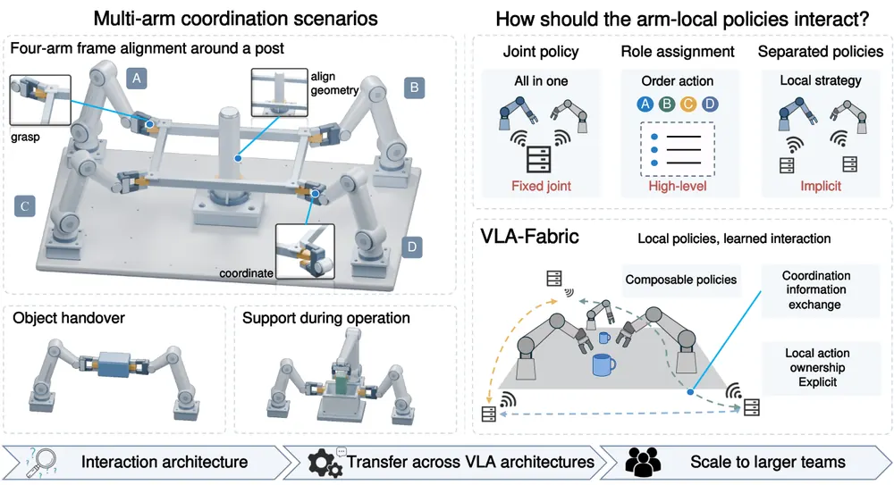
무슨 문제인가
RDT-1B, ET-VLA, TwinVLA, Dexora 같은 기존 multi-arm VLA는 cross-arm dependency를 하나의 joint policy 안에 넣어 풀음. MA-VLA는 high-level behavior assignment로, CHORUS는 런타임 메시지 없이 teammate 관측만으로 implicit decentralized coordination을 함. 세 방식 모두 coordination을 joint policy 내부, action policy 위, 또는 관측을 통한 간접적인 경로로 처리할 뿐임. 완전한 action-producing VLA 여러 개가 action generation 도중 명시적으로 서로 interact하는 방법은 다루지 않음. arm 수와 역할이 늘어날 때 개별 manipulator 단위의 모듈성을 유지하면서 tightly coupled collaboration까지 지원하는 조직 방식이 불분명함.
어떻게 푸나
VLA-Fabric은 각 로봇팔을 완전한 VLA policy를 가진 agent로 둠. agent는 자신의 perception과 action을 계속 소유하며 선택된 peer representation이 local action generation의 조건으로 들어가는 interaction context를 통해서만 서로 연결됨. 먼저 TwinVLA의 pretrained SingleVLA 두 branch를 독립된 local policy로 분리함. 이후 interaction entry(Independent/Private K/V/Common/action-side)와 aggregation operator(one-way/AVG/RAW, Linear/Transformer)를 조합함. 여기에 adaptation 전략(Single-stage/Common-first)까지 더해 32개 구성의 통제된 architecture study를 수행함. 이 연구에서 Common 기반 shared semantic context, Private K/V 기반 peer-specific latent context, action-side fusion 기반 action intent를 찾음. 이 세 가지는 상호보완적인 interaction 기능임. 그리고 RAW Common + Private K/V + Linear action fusion을 표준 SingleVLA-Fabric 구성으로 채택함. 같은 세 기능을 멀티모달 처리와 반복적 Action Expert 구조가 다른 π0.5에도 적용함. architecture에 맞는 지점(prefix fusion, Private Prefix K/V, Action Expert 내부 gated residual attention)으로 재구현함. 이렇게 π0.5-Fabric을 만듦. 마지막으로 동일한 peer-interaction 구조를 완전 연결(fully connected) peer set으로 확장해 3-arm, 4-arm team에 적용함.
결과
- 시뮬레이션(ALOHA Handover Box·Shoes Table, RoboTwin 2.0 Handover Mic·Scan Object)의 4개 bimanual 과제를 비교함(Table 1A). π0.5-Fabric Full은 Box 80.5%, Shoes 94.5%, Mic 97.5%, Scan 33.0%임. 같은 데이터로 학습된 TwinVLA(78.0/84.8/84.0/11.0%)보다 특히 Scan Object에서 11%에서 33%로 크게 오름.
- 3/4-arm 시뮬레이션(Table 2)의 Arch4(장기·고정밀 조립 과제, 네 팔이 지지대를 세우고 보를 올려 arch를 완성)는 Independent 0.0%, Full 5.0%로, interaction을 추가해도 과제 자체의 난이도 때문에 성공률이 낮게 유지됨.
- 학습된 Full policy에서 inference 시점에 세 interaction을 모두 끈 All-off는 SingleVLA-Fabric Shoes Table에서 78.0%에서 1.5%로 낮아짐. π0.5-Fabric Handover Mic에서도 97.5%에서 1.0%로 낮아짐. policy가 peer 정보를 실제로 쓰고 있음을 보임.
- 3/4-arm 시뮬레이션(Table 2)에서 역할별로 분해 가능한 Stack3는 Independent 90.5%, Full 91.0%로 차이가 거의 없음. 반면 네 팔이 같은 frame을 계속 지지·정렬해야 하는 Frame4는 Independent 9.5%에서 Full 89.5%로 크게 오름.
- 실로봇 4개 과제(Table 3)에서 Full은 Independent 대비 Basket3 72.0%→88.0%, Relay3 16.0%→56.0%, Relay4 40.0%→72.0%, Frame4 36.0%→60.0%로 모두 오름. handover 타이밍이나 공유 물체 제어처럼 결합이 강한 과제일수록 이득이 큼.
한계
실험은 동질적(homogeneous) team과 고정된 역할, 최대 4-arm까지만 다뤄 team 구성이 바뀌거나 서로 다른 VLA가 섞인 heterogeneous team은 검증하지 않음. interaction 구조 자체는 static해서 task phase나 agent 참여 상태에 따라 내용·연결망·빈도를 바꾸지 못함. long-horizon·고정밀 조립 과제인 Arch4는 Independent가 0.0%인 데 비해 Full도 5.0%에 그쳐, interaction만으로 constituent VLA의 planning·정밀 제어 한계까지 해결되지는 않음.
누리랩 연구와의 연결
- 완전한 VLA policy 여러 개를 shared context, peer latent K/V, action-stage fusion 세 층위로 나눠 학습된 interaction으로 연결한 구조임. robot memory나 VLA 간 information exchange를 설계할 때 참고할 수 있는 구체적 interaction 분해 사례임.
- 같은 coordination 기능을 서로 다른 VLA backbone(Eagle2 기반 SingleVLA, π0.5)의 architecture-appropriate 지점에 재구현한 방식임. test-time에 여러 policy나 여러 hypothesis를 조건으로 결합하는 설계에도 참고할 만함.
13
70점
NestedVLA: Learning to Consolidate and Generate Skills for Vision-Language-Action Models
VLA
relevance 8/10
NeurIPS 2026 채택
Robotics (cs.RO)
서로 다른 벤치마크에서 독립적으로 학습한 VLA skill들을 파라미터 평균이 아니라 task 조건부 hypernetwork로 생성해 합치는 방법을 제안함. MetaWorld·ManiSkill·CALVIN 평균 성공률이 66.7%로 가장 강한 병합 baseline보다 41.1퍼센트포인트 높음.
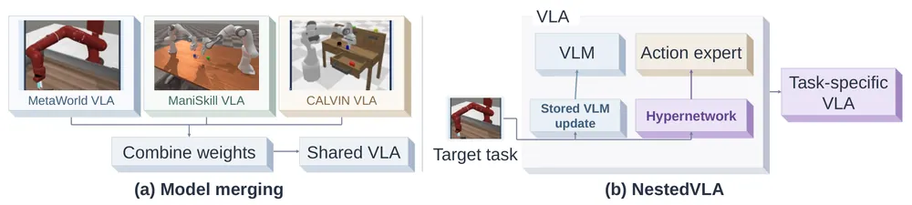
무슨 문제인가
VLA 모델을 여러 벤치마크나 로봇 플랫폼마다 따로 fine-tuning하면 과제마다 체크포인트 전체를 저장해야 해서 중복이 큼. 과제 데이터를 한 번에 모아 학습하면 중복을 피할 수 있지만 로봇 데이터는 플랫폼별로 흩어져 있어 한곳에 모으기 어려운 경우가 많음. 그래서 독립적으로 학습한 task vector(각 과제로 fine-tuning된 parameter에서 base parameter를 뺀 값)들을 학습 후 하나의 모델로 합치는 model merging이 대안으로 쓰임. 하지만 VLA에서는 서로 다른 과제의 parameter 업데이트가 같은 위치에서 충돌해서 단순 평균이나 기존 merging 기법이 성능을 크게 떨어뜨림. 저자들의 weight-space 분석에 따르면 이 충돌은 제어를 직접 담당하는 action expert에서 특히 심함.
어떻게 푸나
NestedVLA는 π0.5 backbone Θ0을 공유하고, 각 과제 m마다 독립적으로 fine-tuning해 얻은 parameter에서 base를 뺀 task vector τm을 만듦(skill acquisition 단계). τm은 그대로 쓰기엔 너무 커서 module별로 크기가 큰 상위 K=10% 요소만 남기고 나머지를 버린 뒤 남은 값에 global rescale factor를 곱하는 drop-and-rescale로 압축해 sparse skill zm을 얻음. 이어지는 skill consolidation 단계에서는 하나의 hypernetwork Gφ를 학습시킴. 입력은 task id와 backbone의 각 weight tensor를 패치 단위로 쪼갠 patch 주소(parameter 종류·layer·패치 좌표)이고 출력은 해당 패치의 action-expert delta 예측값임. Gφ는 masked MSE loss로 action-expert 부분의 zm만 맞추도록 학습되고, VLM 쪽 delta는 hypernetwork가 생성하지 않고 과제별로 압축한 값을 그대로 저장해 둠. 추론 시에는 목표 과제 id로 Gφ를 한 번 호출해 action-expert delta를 생성하고, 저장해 둔 VLM delta를 불러와 둘 다 고정된 base Θ0에 더해서 과제별 VLA를 조립함. 이렇게 조립된 모델은 구조 변경이나 routing 없이 바로 roll-out에 쓸 수 있음.
결과
- 3개 benchmark(MetaWorld·ManiSkill·CALVIN) 평균 성공률이 NestedVLA 66.7%, 가장 강한 dynamic merging baseline Free-Merging 25.6%로 41.1퍼센트포인트 차이남. 단순 parameter averaging은 14.8%에 그침.
- ManiSkill success_once가 NestedVLA 87.2%, 과제별로 따로 fine-tuning한 per-task FlowSDE 상한선 88.1%로 0.9퍼센트포인트 차이임.
- CALVIN success_at_end(5개 언어 지시 하위 과제를 끝까지 완수한 rollout 비율)가 NestedVLA 75.0%, per-task 상한선 81.3%로 근접함. Averaging·TIES·WUDI·TSV-Merging 등 static merging 4종은 모두 CALVIN을 0%로 만듦.
- 체크포인트 저장량(base 대비 배수)이 NestedVLA 1.5배, 과제별 전체 체크포인트를 저장하는 경우 3.0배임. dynamic merging baseline들은 2.09~2.89배를 쓰면서도 평균 성공률은 22.6~25.6%에 그침.
한계
남은 성능 차이는 거의 전부 MetaWorld에 몰려 있음(NestedVLA 37.9% 대 per-task 상한선 72.3%). 압축 비율 K=10%에서의 이론적 상한 자체가 48.4%라서 hypernetwork 용량 문제가 아니라 skill acquisition 단계의 sparsity budget 문제로 보임. 실험은 MetaWorld·ManiSkill·CALVIN 3개 시뮬레이션 benchmark, 총 3개 skill만 다뤘고 실로봇 검증은 없음. 저장량도 skill 개수가 늘수록 과제별 압축 VLM delta와 mask를 계속 쌓아야 해서 완전히 고정된 비용은 아님.
누리랩 연구와의 연결
- 서로 다른 환경에서 독립적으로 학습한 VLA skill을 post-hoc으로 합치는 문제라서, 여러 로봇 플랫폼에서 따로 학습된 policy를 하나로 모으는 robot memory·continual VLA adaptation 연구와 비교 대상으로 쓸 수 있음.
- task id 조건부 hypernetwork로 action-expert parameter를 즉석에서 생성하는 구조는, 실로봇에서 새 과제나 실패 복구용 policy 조각을 빠르게 합성하는 test-time optimization 아이디어로 확장해볼 수 있음.
14
68점
Thinking from Above: Efficient Spatial Reasoning with Bird's-Eye-View Visual Tokens
3D Vision
relevance 8/10
Computer Vision and Pattern Recognition (cs.CV)
video MLLM이 매 프레임을 따로 토큰화해서 같은 장소를 여러 번 겹쳐 보는 문제를, depth와 camera pose로 패치 특징을 공유된 bird's-eye-view(BEV) 격자에 역투영해 하나의 scene-indexed token으로 합치는 방식으로 줄임. VSI-Bench 평균 점수가 동일하게 fine-tuning한 frame-token 모델의 54.98에서 63.48로 오르면서 visual token 수는 12.6배 줄어듦.
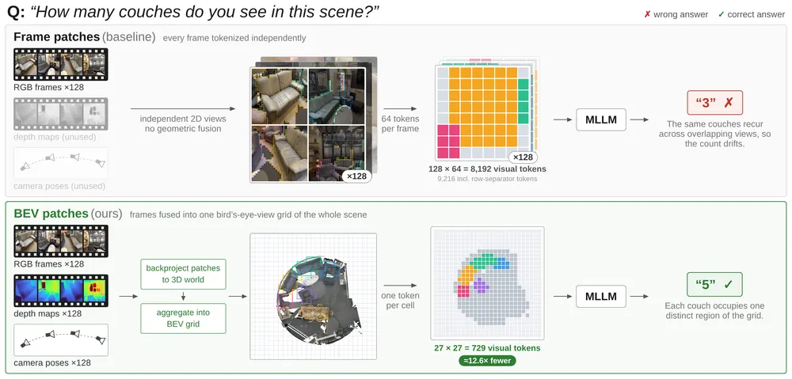
무슨 문제인가
기존 video MLLM은 관측을 시간 순서로만 조직해서, 같은 물리적 위치를 여러 프레임에서 겹쳐 봐도 프레임마다 별도 토큰으로 남음. 그래서 언어모델이 뷰 사이의 대응관계를 암묵적으로 추론하고 중복된 증거를 조정해야 함. VSI-Bench 같은 embodied spatial reasoning benchmark는 이 한계를 드러냄: 국소적인 공간 인지는 되는데 scene 전체에 걸친 일관된 표현을 만드는 것이 병목임. 프레임 수를 늘리면 커버리지는 늘지만 visual context도 거의 선형으로 늘어서, 임베디드 배치를 염두에 둔 경량 모델에는 불리한 trade-off가 생김.
어떻게 푸나
Cambrian-BEV는 Cambrian-S의 구조·데이터·학습 레시피를 그대로 두고 visual interface만 frame token에서 BEV token으로 바꿈. 입력은 128프레임 RGB-D 비디오와 프레임별 camera intrinsics, world-to-camera pose임. 고정된 DINOv3 ViT-L/16 encoder와 2-layer MLP projector가 프레임마다 28×28 패치 토큰을 만듦. pinhole model로 각 패치를 3D world 좌표로 역투영한 뒤 ground plane 위 27×27 격자(±5m 범위, 한 변 약 10m, cell당 0.37m)에 배정함. 같은 cell에 떨어진 여러 프레임·여러 시점의 패치 특징은 파라미터 없는 scatter-add 연산으로 평균됨. 격자의 forward axis는 첫 프레임의 camera heading에 맞춰 회전시켜 egocentric 기준틀을 만듦. 이렇게 나온 729개 BEV token은 이미 language embedding 공간에 있어서 별도 adapter 없이 자리에 그대로 들어감. projector와 Qwen2.5-0.5B LLM만 VSI-590K 중 depth·pose가 있는 부분집합(VSI-288K-Depth, scene 4,955개)으로 fine-tuning됨. 출력은 VSI-Bench 질문에 대한 텍스트 답임.
결과
- VSI-Bench 8개 범주 평균 점수가 동일한 DINOv3 encoder로 동일 데이터·학습 단계만 거친 frame-token control의 54.98에서 Cambrian-BEV의 63.48로 오름(8.50점 차이). token 수는 9,216개에서 729개로 12.6배 감소함.
- room size 점수가 control의 60.49에서 85.00으로 오름(24.51점 차이). 0.5B짜리 Cambrian-BEV가 7B짜리 공식 Cambrian-S-7B(69.62)보다 높음.
- relative direction 점수가 control의 48.58에서 82.67로 오름(34.09점 차이, 전체 ablation 중 가장 큰 효과). 단 이 상승은 격자를 첫 카메라 heading 기준 egocentric으로 맞췄을 때만 나오고, 같은 조건에서 world-frame 기준으로 두면 46.87점에 그침.
- H100 1장 기준 LLM prefill 시간이 46ms에서 16ms로(2.9배), peak memory가 9.1GB에서 2.5GB로(3.6배) 줄어듦. 독립적으로 재주석된 ReVSI(VSI-Bench를 전문가가 다시 주석해 3RScan·MultiScan 장면을 더한 공간 추론 재평가 benchmark)에서도 control의 40.17에서 44.68로(4.51점 차이) 같은 경향이 재현됨.
한계
시간축을 하나의 격자로 뭉개기 때문에 방문 순서(appearance order)는 표현하지 못해서 이 항목만 control보다 14.40점 낮고, 이것이 7B 모델과의 남은 격차 대부분을 차지함. 세로축도 뭉개서 물체가 바닥·벽·천장과 한 cell을 공유하는 문제가 있는데, 논문이 시도한 temporal chunking·frame-BEV hybrid·height filter 모두 이 문제를 해결하지 못함(ablation에서 plain grid보다 낮은 점수). calibrated depth와 pose가 있어야 하고 static한 room-scale indoor scene(ScanNet, ScanNet++, ARKitScenes)에서만 검증됨. depth·pose가 부정확하게 추정되는 실제 로봇 환경에서의 결과는 본문에서 확인 불가.
누리랩 연구와의 연결
- depth와 camera pose로 patch feature를 BEV 격자에 역투영해 파라미터 없이 scene-indexed memory를 만드는 방식임. object-centric 3D representation, scene mapping, robot memory 연구에 바로 참고할 수 있음.
- encoder의 dense feature locality가 BEV fusion 성능을 좌우한다는 결과가 나옴(DINOv3가 SigLIP2보다 8.4점 높음, frame-token 성능으로는 두 encoder가 구분 안 됨). 이는 3D reconstruction·scene graph 파이프라인에서 vision encoder를 고를 때 적용할 기준이 됨.
15
40점
Unifying Embodied Foundation Models via a Model-to-Policy Formulation
Embodied AI
relevance 9/10
NeurIPS 양식 (추정)
Robotics (cs.RO)
VLA와 world-action model(WAM)을 하나의 확률적 kernel 형식으로 묶어 설명한 formulation 논문임. action 표현 방식을 여섯 가지로 나누고 pretraining·post-training·deployment를 하나의 식으로 연결하되, 자체 실험은 없음.
무슨 문제인가
VLA 모델과 world-action model은 둘 다 멀티모달 입력을 받아 action을 만들지만 architecture, output representation, 학습 목표가 서로 달라 하나의 틀로 비교하기 어려움. 각 모델이 pretraining에서 무엇을 배우고 post-training에서 무엇이 바뀌며 그 결과가 실제 closed-loop 배포 policy에 어떻게 이어지는지를 설명하는 공통 언어가 없음. 기존 설명은 모델별로 따로 서술되어 있어 서로 다른 architecture의 pretraining·post-training 선택이 배포 policy에 주는 영향을 비교하기 어려움.
어떻게 푸나
저자는 embodied foundation model을 fθ: 과거 상호작용 기록과 task condition을 받아 output 공간 Y 위의 분포를 내는 함수로 정의함. 이 output을 실제 action 분포로 바꾸는 action-realization kernel qθ는 따로 정의함. 두 식을 합쳐 deployment 시의 task-conditioned policy πθ를 deterministic kernel(식 3)과 stochastic kernel(식 4) 두 경우로 적분식으로 표현함. 이 틀 안에서 output 표현 방식을 여섯 가지로 분류함. 앞 세 가지는 direct action, joint video-action chunk, action token+decoding임. 나머지 세 가지는 action chunk(첫 action만 실행), latent action+decoding, video plan+action extraction임. 각각에 해당하는 기존 모델 예시(RoboFlamingo, DreamZero, OpenVLA, GR00T N1, VQ-VLA, LVP)도 붙임. pretraining loss, 그리고 offline 데이터와 online 데이터를 가중치 α_k로 섞는 post-training loss를 공통 식으로 적고, 이 파라미터가 deployment의 qθ·fθ로 이어지는 과정을 Algorithm 1로 정리함. 이 formulation을 OpenVLA에 대입해 pretraining·post-training·deployment 식을 다시 씀. OpenVLA는 DINOv2+SigLIP 특징을 Llama 2 7B에 넣어 action token을 greedy decoding하는 deterministic kernel임. DreamZero에도 같은 방식으로 대입해 식을 다시 씀. DreamZero는 Wan2.1-I2V-14B 기반 DiT로 video와 action을 함께 flow matching으로 생성하고 chunk 단위로 비동기 실행하는 kernel임.
결과
- 이 논문은 benchmark 실험이나 성공률 비교를 수행하지 않음. 수치 결과 없이 기존 공개 모델의 설계를 공통 수식으로 재서술하는 것이 전부임.
- OpenVLA는 DINOv2(256×1024 특징)와 SigLIP(256×1152 특징)을 concat해 Llama 2 7B에 넣음. action token 7개를 greedy decoding으로 뽑는 deterministic action-realization kernel로 기술됨.
- DreamZero는 AgiBot G1 teleoperation 데이터 약 500시간과 DROID 데이터셋으로 pretraining함. 이후 셔츠 접기·과일 포장·테이블 치우기 등 downstream task마다 50,000 step씩 fine-tuning한 것으로 기술됨.
- action 표현 방식을 direct action, joint video-action chunk, action token, action chunk, latent action, video plan의 여섯 범주로 나누고 각 범주를 qθ kernel 수식 하나로 통일함.
한계
새로운 학습 알고리즘이나 architecture를 제안하지 않고, 이미 공개된 OpenVLA·DreamZero의 학습 방식을 kernel 표기로 다시 쓴 것이 핵심 기여임. 이 틀이 실제로 모델 설계나 실험 결과에 어떤 차이를 만드는지는 보이지 않음. 구체적으로 수식을 끝까지 전개한 모델은 OpenVLA와 DreamZero 두 개뿐이고, 나머지 네 범주는 기존 모델 이름만 표에 나열됨.
누리랩 연구와의 연결
- VLA와 world model 기반 WAM을 같은 pretraining-post-training-deployment 식으로 적어둠. 연구실에서 여러 VLA·world model 계열을 서로 비교하거나 새 모델을 이 틀에 대입해 설명할 때 참고 표기법으로 쓸 수 있음.
- 직접적인 실험·알고리즘 기여가 없어 failure detection, test-time optimization, counterfactual reasoning 등 랩의 실제 연구 주제와는 직접 연결 약함.
오늘의 흐름
- frozen VLA는 그대로 두고 test-time에서만 거동을 바꿈: policy weight를 손대지 않고 latent noise·classifier gradient·search-free latent planning으로 action만 바꾸는 논문이 여럿임. Sample-Efficient RL via Flow-Reversed Action Anchors, Embodiment-Classifier Guidance, Beyond Action Prediction가 해당함.
- world model을 미래 예측이 아니라 memory·보정 용도로 씀: rollout을 멀리 내다보기보다 object dynamics를 바로잡거나 가려진 장면을 상상으로 채우는 데 world model을 씀. ORD-WM, AWAM, BeJEPA, Thinking from Above가 해당함.
- 따로 학습한 VLA skill을 하나로 합침: 서로 다른 benchmark에서 독립적으로 학습한 VLA skill을 hypernetwork로 합치는 NestedVLA가 있음. 여러 로봇팔의 policy를 학습된 interaction으로 실시간 연결하는 VLA-Fabric도 있음.
- policy 자신이 만드는 신호를 memory·적응 신호로 재활용: 외부 감지기 없이 policy의 replanning 불일치나 active perception이 멈춘 지점을 그대로 학습·기록 신호로 씀. RePlanMem-VLA, Look Before You Act가 해당함.
- 범용 모델·에이전트의 능력을 큰 범위에서 평가하거나 여러 modality를 하나의 interface로 통합함: coding agent가 demonstration 없이 로봇을 직접 제어하고, 대형 멀티모달 모델을 통일 프로토콜로 평가함. language·action·world modeling을 하나의 진행 상황 신호로 묶음. Scaling Online Exploration, Has GPT-6-Astra Achieved Embodied Intelligence?, LAW가 해당함.
해볼 만한 연구
replanning 불일치를 실패 탐지 신호로 재해석
- 질문: VLA policy의 replanning 예측이 크게 바뀌는 순간이나 embodiment-classifier guidance의 gradient 크기가, memory 기록 신호를 넘어 실패 직전 신호로도 쓰일 수 있는가.
- 첫 실험: LIBERO에서 정상 embodiment 조건과, guidance가 오히려 해를 끼치는 조건(locked wrist 등)을 섞어 두고, replanning 불일치·classifier gradient 분포가 두 조건에서 갈라지는지 비교함.
- 가장 가까운 연구: RePlanMem-VLA는 같은 신호를 memory 기록 시점에만 쓰고 실패 탐지로는 안 씀. Embodiment-Classifier Guidance는 guidance가 해로운 경우를 사후 분석으로만 확인하고 미리 판별하는 규칙은 실패했다고 밝힘.
가려짐 이후가 아니라 실패 이후의 object-centric world model memory
- 질문: SE(3) rigid dynamics로 물체를 추적하는 world model memory가, 초기 가려짐이 아니라 실패해서 재시도할 때도 object 상태를 유지해 복구에 쓰일 수 있는가.
- 첫 실험: LIBERO-Occ(가려짐이 있는 LIBERO 변형 과제) 중간에 의도적으로 실패를 주입한 뒤, memory를 재시도 사이에 유지한 조건과 초기화한 조건의 성공률을 비교함.
- 가장 가까운 연구: AWAM은 초기 관측의 가려짐만 다루고, ORD-WM은 성공 경로를 따라가는 MPC만 검증해서 둘 다 실패 후 재시도 상황을 다루지 않음.
서로 다른 embodiment의 skill을 하나의 hypernetwork로 합치기
- 질문: 서로 다른 로봇팔·embodiment에서 독립적으로 학습한 VLA skill을 task 조건부 hypernetwork로 합칠 때, 같은 embodiment 안에서의 skill 병합을 넘어 cross-embodiment 전이가 되는가.
- 첫 실험: NestedVLA의 hypernetwork 병합 방식을 VLA-Fabric의 멀티암 세팅에 적용해, 독립 학습 대비 성공률과 저장량 변화를 비교함.
- 가장 가까운 연구: NestedVLA는 단일 embodiment 안에서 학습한 skill만 합치고, VLA-Fabric은 같은 skill을 여러 arm에 복제해 연결하는 구조라 서로 다른 skill을 합치는 문제는 다루지 않음.
꼭 읽을 논문
- Scaling Online Exploration for Robot Agents: 로봇 policy를 안 쓰고 coding agent가 직접 로봇을 제어하게 만든 formulation이며, 오늘 80점으로 공동 최고점을 받음.
- LAW: Unifying Language, Action, and World Modeling: language reasoning·action generation·world model을 semantic subtask 진행 상황 하나로 묶은 통합 설계임.
- Sample-Efficient RL via Flow-Reversed Action Anchors: frozen VLA에 test-time RL을 적용하는 누리랩 test-time optimization 연구와 가장 직접 비교할 수 있는 baseline임.
- ORD-WM: Learning Object-Centric Rigid Dynamics: object-centric 3D representation과 world model을 SE(3) rigid dynamics로 묶은 설계가 구체적임.
- When Plans Change, Remember: RePlanMem-VLA: 외부 감지기 없이 policy 자신의 신호로 robot memory 기록 시점을 정한 방식임.
전체 1차 스크리닝 결과 (489편, 점수순) 펼치기
| # | 제목 | 점수 | 🤖 | 분야 | 한 줄 근거 |
|---|---|---|---|---|---|
| 1 | Scaling Online Exploration for Robot Agents | 80 | 10 | Embodied AI | 시연 없이 코딩 에이전트가 온라인 탐색으로 로봇 프로그램을 합성하고 여러 embodiment에서 실로봇 성능이 오르는 걸 보이며 active perception·에러복구 등 창발 능력까지 확인함 |
| 2 | LAW: Unifying Language, Action, and World Modeling for Agentic Physical Intelligence | 79 | 9 | World Model | 언어 추론·action generation·world modeling을 subtask progress로 묶은 closed-loop VLM-WAM 프레임워크임. RoboTwin SOTA와 실로봇 장기 과제 65% 성공으로 world model·VLA 우선주제에 강하게 부합함 |
| 3 | Has GPT-6-Astra Achieved Embodied Intelligence? | 78 | 10 | Embodied AI | 12개 benchmark와 8개 로봇에서 generalist 모델의 조작·내비게이션 능력을 대규모로 평가하며 System1/2 결합, 실패 복구 등 랩 우선주제를 직접 다룸 |
| 4 | ORD-WM: Learning Object-Centric Rigid Dynamics for 3D World Modeling in Robotic Manipulation | 75 | 9 | World Model | object-centric rigid dynamics를 SE(3) 모션으로 명시적으로 강제하는 3D world model임. object-centric 3D representation 우선주제에 정확히 부합하고 실로봇 MPC까지 보임 |
| 5 | BeJEPA: A Goal-Conditioned Humanoid Behavior World Model via Unsupervised RL | 73 | 8 | World Model | JEPA 기반 goal-conditioned humanoid behavior world model로 월드 프레임 복귀 문제를 해결함. world model 우선주제에 강하게 부합하고 실로봇 disturbance 복구까지 보임 |
| 6 | Embodiment-Classifier Guidance: Transferring Frozen VLAs Across Robot Dynamics without Demonstrations | 72 | 9 | VLA | 고정된 π0를 추가 시연 없이 embodiment classifier gradient로 denoising 단계에서 유도해 새 로봇 동역학으로 전이시키는 test-time 기법으로 VLA 일반화 핵심주제에 맞음 |
| 7 | Unifying Embodied Foundation Models via a Model-to-Policy Formulation | 72 | 9 | VLA | VLA와 world-action model을 stochastic kernel 기반으로 통합하는 architecture-agnostic 이론임. 일반화 가능한 formulation으로 impact가 큼 |
| 8 | AWAM: Active Trajectory-Conditioned View Imagination for Robust Robot Manipulation | 72 | 9 | World Model | action 전에 어디를 볼지 계획하고 그 결과를 상상해 world model prior로 쓰는 active world-action model임. active perception과 world model 우선주제를 동시에 다룸 |
| 9 | Beyond Action Prediction: Learning Search-Free Planning in Latent Space | 72 | 8 | World Model | online search 대신 goal-conditioned inverse model로 latent space를 search-free하게 planning함. JEPA 기반 world model과 test-time optimization 우선주제에 모두 부합하고 속도 개선이 큼 |
| 10 | Look Before You Act: Bridging Active Perception and Vision-Language-Action Models via Observation-Aligned Data Adaptation | 71 | 9 | VLA | active perception이 유발하는 observation 분포 변화를 policy 학습에 맞춰 정렬하는 data adaptation임. active perception 우선주제에서 실로봇 occlusion 성능을 크게 올림 |
| 11 | When Plans Change, Remember: Replanning-Guided Visual Memory for Vision-Language-Action Models | 70 | 9 | VLA | VLA policy의 재계획 신호를 메모리 기록 트리거로 써서 장기 과제에서 필요한 과거 관측만 선택 보존하는 방법으로 robot memory 주제에 직접적임 |
| 12 | VLA-Fabric: Learning Interaction for Composable Multi-Arm VLA Agents | 70 | 8 | VLA | 완전한 VLA를 arm마다 두고 policy 경계를 넘는 interaction을 학습하는 멀티암 조율 formulation임. 실로봇 3~4암 실험까지 검증함 |
| 13 | NestedVLA: Learning to Consolidate and Generate Skills for Vision-Language-Action Models | 70 | 8 | VLA | 모델 병합 대신 task-conditioned hypernetwork로 action expert 파라미터를 생성하는 skill consolidation 새 패러다임임. NeurIPS 2026 accept, VLA 우선주제에 부합함 |
| 14 | Sample-Efficient Reinforcement Learning for Policy Improvement via Flow-Reversed Action Anchors | 68 | 9 | RL | flow-matching generalist policy를 노이즈공간 대신 구조화된 latent anchor로 탐색해 RL 후처리 성능을 올리고 실로봇에서도 향상을 보여 policy improvement에 실질적임 |
| 15 | Thinking from Above: Efficient Spatial Reasoning with Bird's-Eye-View Visual Tokens | 68 | 8 | Embodied AI | depth·pose를 이용해 BEV 토큰으로 압축하는 parameter-free 기법이 embodied spatial reasoning과 효율성을 동시에 개선해 로봇 perception에 바로 적용 가능 |
| 16 | What Makes a Good Symbol for Hybrid Discrete-Continuous Planning? | 68 | 8 | RL | TAMP에서 solver-sufficient symbol을 counterexample로 자동 발명하는 이론적 기여임. hybrid discrete-continuous planning 우선주제에 직접 부합함 |
| 17 | Beyond Success Rate: Interventional Evaluation of Memory in Vision-Language-Action Systems | 68 | 8 | VLA | 성공률만으로는 VLA memory 사용 여부를 검증 못한다는 점을 지적하고 fact-level intervention 프로토콜을 제안함. robot memory 평가 방법론으로서 impact가 큼 |
| 18 | Blind Precise Assembly: Proprioceptive Sim-to-Real Peg-in-Hole for Diverse Parts | 68 | 8 | Manipulation | 관절 proprioception만으로 peg-in-hole·gear meshing을 수행하는 blind assembly policy를 RL로 학습해 sim-to-real zero-shot 전이함. tactile/proprioceptive manipulation 우선주제에 강하게 부합함 |
| 19 | Momentum: Persistent Dynamics for Video World Models | 68 | 7 | World Model | 카메라 시야 밖 장면의 동적 요소를 reference-camera rig 그래프로 전파해 기억하는 world model로 로봇이 장면을 벗어난 물체를 다시 만났을 때의 memory 문제에 직접 연관됨 |
| 20 | Ego2Contact: Predicting Touch from Egocentric Human Video for Contact-Rich Robot Manipulation | 67 | 8 | Manipulation | 사람 영상에서 학습한 tactile prior를 로봇 손으로 transfer하는 아이디어로 tactile perception 우선주제에 부합함. 실로봇 policy post-training까지 검증함 |
| 21 | No Eyes, No Problem: What Does Touch Contribute to Blind Baoding Ball Manipulation? | 67 | 8 | Manipulation | 시각 없이 proprioception과 binary tactile만으로 Baoding ball을 blind 회전시키는 sim-to-real 연구임. tactile 기반 dexterous manipulation의 강한 하드웨어 결과임 |
| 22 | Persistent Planar Memory for Video World Models | 65 | 7 | World Model | 평면 primitive로 scene을 압축해 지속적인 3D 메모리를 유지하는 video world model로 수백 프레임에 걸친 기하 일관성을 유지해 robot memory·world model 연구에 바로 참고할 표현 방식임 |
| 23 | StopWatch: Goal Grounding for Object-goal Navigation | 64 | 8 | Navigation | object-goal navigation 실패의 핵심 원인이 목표가 시야에 있는지조차 인지하지 못하는 goal grounding 부족임을 진단하고 명시적 grounding으로 여섯 benchmark에서 state-of-the-art를 달성해 VLN 연구에 직접 기여함 |
| 24 | DefFlow: Goal-Conditioned Deformable Object Manipulation using 3D Point Flows | 63 | 8 | Manipulation | 로봇과 변형체의 3D point flow를 함께 예측해 grasp·release 등 조작 결정과 연속 동작을 통합하는 방법으로 실로봇까지 검증한 조작학습 기여임 |
| 25 | FCTS: Failure-Guided Curriculum Tree Search Over Generated Terrain for Legged Parkour | 62 | 8 | RL | 실패 위치·원인에 조건화한 지형 커리큘럼을 MCTS로 생성해 사족보행 parkour 성공률을 크게 올리고 실기체로 검증하며 failure-guided learning과 맞닿음 |
| 26 | GRASP: Global-Local Representation Alignment and Spatial-Physical Grounding for Bimanual Robotic Manipulation | 62 | 8 | Manipulation | FK를 통과시키는 physics-grounded flow-matching loss와 DINOv3 distillation으로 bimanual VLA 학습을 개선함. 학습 목표를 과제 성공에 더 맞춘 기여임 |
| 27 | Foundation-Model-Driven 3D Scene Graphs for Mobile Manipulation | 62 | 8 | 3D Vision | FOUND-IT을 모바일 매니퓰레이터에 통합해 scene graph 기반 재배치까지 보인 시스템 논문임. scene graph·semantic mapping 우선주제에 부합하고 온로봇 평가의 한계도 분명히 밝힘 |
| 28 | Execution Before Memory: Diagnosing Memory Failures in Video World Models | 62 | 7 | World Model | video world model의 memory 평가에서 장면 설정과 지시 실행을 분리해 memory 실패가 사실은 실행 실패임을 드러낸 진단적 benchmark로 robot memory 연구에 직접 참고할 통찰을 줌 |
| 29 | Learning Robot Metareasoning: Adaptive Computation Budgets for Real-Time Control | 62 | 7 | RL | 계획-실행 commitment 길이를 SMDP로 formulation해 연산 예산을 state-dependent하게 학습함. test-time optimization 우선주제에 부합하고 플랫폼 3종에서 검증함 |
| 30 | Not All Actions Contribute Equally: Learning Precise Progress Estimation from Imprecise Demonstrations | 62 | 7 | RL | trajectory 간 weighted graph의 geodesic distance로 demonstration의 실수와 진전을 구분하는 progress estimator임. RL dense reward 우선주제에 부합하고 정밀 조작에서 효과가 큼 |
| 31 | SimpleVLN: Towards Simple and Frontier Vision-Language Navigation | 61 | 7 | Navigation | task-specific architecture 없이 native MLLM만으로 VLN을 푸는 프레임워크임. R2R-CE에서 큰 성능 향상을 보여 VLN 우선주제에 부합함 |
| 32 | Spatial Memory by Agents, for Agents | 60 | 8 | Embodied AI | 코딩 에이전트가 반복 구현·평가로 로봇 공간 메모리의 저장·검색 설계를 자동화하는 연구로 robot memory 주제에 직접적이나 메모리 자체보다 설계 자동화에 초점이 있음 |
| 33 | EgoP$^{2}$C: Internalizing Plan-Perceive-Compose for Spatial Reasoning in Egocentric Video | 60 | 7 | Embodied AI | egocentric video에서 plan-perceive-compose를 VLM에 내재화하는 구조로 embodied spatial reasoning에 직접 연관됨 |
| 34 | LonGaussian: Tracking Foundation Priors for Long-Context Feedforward Gaussian Reconstruction | 60 | 7 | 3D Vision | 긴 비디오에서도 메모리·중복 문제 없이 renderable 3D를 재구성하는 streaming feedforward 방법으로 로봇 perception과 embodied intelligence에 직접 명시된 적용 대상임 |
| 35 | Robotic Spatiotemporal Editing: A Unified Interface for Controllable Action Generation via Masked Action Reconstruction | 60 | 7 | Manipulation | keypoint·flow 등 다양한 spatiotemporal reference를 action inpainting으로 통일한 새로운 problem formulation임. 조작 제어 일반화에 기여함 |
| 36 | Look, Reason, Draw a Region: Recursive Refinement for Spatial Context Prediction | 58 | 7 | Embodied AI | RoboSpatial-Home benchmark에서 적은 파라미터로 recursive refinement를 통해 spatial context 정확도를 크게 올려 embodied spatial reasoning에 직접 기여함 |
| 37 | Structured Perception Representations for Off-road Dynamics Learning | 58 | 7 | Navigation | BEV 특징을 상태 예측에 질의하는 off-road 동역학 모델로 고속 실기체 주행에서 오차를 줄이며 CoRL 2026에 채택된 world model 성격의 연구임 |
| 38 | World Action Critic (WAC) Model: Joint Foresight and Criticism for Policy Learning | 58 | 7 | World Model | world model이 여러 action candidate에 대해 예측과 평가를 공동 학습하는 World Action Critic을 제안하고 자율주행 NAVSIM-v1에서 PDMS 93.4를 달성함. counterfactual action 평가를 predictive representation에 직접 결합하는 formulation으로 world model·test-time planning 우선주제와 밀접함 |
| 39 | CoEvolve: Self-Evolving Code Policies from Skills to Strategies for Humanoid Robots | 57 | 7 | Embodied AI | 물리 검증으로 멀티로봇 coordination 코드를 스스로 교정하는 verifier-guided evolution임. humanoid 협업 세팅이 흥미로우나 과제 수가 적음 |
| 40 | PASS-VLN: Passability-Aware Local-Command Vision-and-Language Navigation | 56 | 7 | Navigation | 로봇 몸 너비에 따른 통과가능성을 반영한 local VLN 벤치마크·모델로 embodied spatial reasoning과 연결되나 장기 planning과는 분리되어 다룸 |
| 41 | InstAgent: A Recursively Self-Improving Agent Operating System for Heterogeneous Robot Collaboration | 56 | 6 | Embodied AI | 실행 피드백으로 협업 behavior tree를 스스로 개선하는 멀티로봇 agent OS임. robot memory·skill reuse 관점에서 의미 있음 |
| 42 | Shape-Aware Neural Time Fields for Rigid-Body Motion and Manipulation Planning | 55 | 7 | Manipulation | 강체의 병진·회전을 구분해 travel-time을 학습하는 motion planning 표현으로 non-prehensile pushing에도 적용되며 조작 planning에 유의미함 |
| 43 | Self-Building Labs | 55 | 7 | Embodied AI | 빈 방에서부터 실험실 레이아웃·digital twin·로봇 skill·workflow를 스스로 설계해 구축하는 self-building laboratory를 제안하고 실제 quantum-dot 합성 실험으로 검증함. 여러 로봇이 협업하는 실제 물리 환경 자동화로 로보틱스 연관성이 높음 |
| 44 | Frame-Consistent Feed-Forward 3D Gaussian Splatting from Sparse Unposed Images | 55 | 6 | 3D Vision | frozen pose estimator와 frozen reconstruction backbone을 결합할 때 성능 저하 원인이 pose 오차가 아니라 좌표계·스케일 불일치임을 밝혀 feedforward 3DGS 파이프라인 설계에 실질적 통찰을 줌 |
| 45 | Multimodal Filesystem Memory For Long-Horizon Embodied Agents | 55 | 6 | Embodied AI | episodic·spatial·semantic·working memory를 분리해 연결한 장기 embodied agent memory 구조임. Minecraft·컴퓨터 사용 과제에서 검증해 robot memory 설계에 참고할 만함 |
| 46 | Expand-and-Prune: Test-Time Candidate-Space Adaptation for End-to-End Autonomous Driving | 54 | 6 | Navigation | test-time에 candidate space를 확장·pruning하는 자율주행 플래너 기법임. test-time optimization 우선주제에 해당하나 도메인이 주행 planner로 한정됨 |
| 47 | Reason-guided Human Reward Modeling for Preference-based Reinforcement Learning | 54 | 6 | RL | 선호 레이블에 이유 태그를 더해 PbRL reward를 해석 가능하게 만든 연구임. language feedback 기반 학습 우선주제와 연결되나 검증 스케일이 작음 |
| 48 | Embodiment-Aware Planning for Heterogeneous Bimanual Manipulation | 54 | 6 | Manipulation | suction과 parallel-jaw 등 이질적 그리퍼를 조합하는 bimanual assignment를 finite-horizon 최적화로 formulation함. 실용적이나 학습 기반 novelty는 제한적임 |
| 49 | How Murky Before a VLM Knows It Cannot See? Accuracy, Confidence and Abstention on a Physical Visibility Axis | 52 | 6 | Embodied AI | 물리적 visibility 축에서 VLM 정확도와 confidence의 괴리를 측정해 로봇이 시야가 나빠질 때의 failure detection·confidence calibration 연구에 직접 참고 가능 |
| 50 | Diversity Without Labels: Task-Agnostic Coreset Selection Across Perception and Action | 52 | 6 | Embodied AI | foundation model activation 분포만으로 라벨 없이 coreset을 고르는 방법이 모바일 조작·주행용 imitation learning 데이터 선별까지 일반화됨을 보여 로봇 학습 데이터 큐레이션에 바로 쓸 수 있음 |
| 51 | HexaShell: A Thin Harness for Exploring the Limits of VLM Agents as Robot Coding Agents | 52 | 6 | Manipulation | VLM coding agent가 triangulation 툴을 스스로 만들어 양팔 로봇을 제어하는 실험임. RoboDojo SOTA지만 접촉 중심 과제에서는 한계가 뚜렷함 |
| 52 | TriFold: Folding irregular 3D Gaussians into structured latents for 3D Scene Generation | 52 | 5 | 3D Vision | 불규칙한 3D Gaussian을 구조화된 triplane latent로 접어 넣는 VAE로 단일 이미지 조건 3D 장면 생성까지 가능해 object-centric 3D representation에 기여함 |
| 53 | Can the Parts Fool the Test? Counterfactual Pairing Cycles for Relational OOD | 52 | 4 | Multimodal | image-caption pairing의 shortcut을 제거하는 counterfactual cycle 평가·학습 기법으로 counterfactual reasoning 방법론에 일반화 가능한 통찰을 줌 |
| 54 | SkyAgent: Revisable Target Memory for Continuous Aerial Search | 51 | 6 | Navigation | 공중 수색에서 오래된 target hypothesis를 되돌리는 revisable memory 기법임. robot memory 우선주제와 연결되나 응용이 공중 수색에 한정됨 |
| 55 | SCOPE: Selective Certification of Program Edits for Embodied Heuristic Learning | 50 | 6 | Embodied AI | 성공·실패 실행 증거를 동시에 써서 program edit을 선택적으로 인증하는 embodied heuristic learning 기법임. failure-aware program repair로 흥미로움 |
| 56 | STRIDE: Evaluating Spatiotemporal Reasoning in Driving Edge Cases | 50 | 5 | Embodied AI | 주행 edge case에서 spatiotemporal reasoning을 평가하는 benchmark로 object motion 추론의 한계를 드러내 embodied reasoning 연구에 참고할 만함 |
| 57 | Generative Value Classifier | 50 | 5 | RL | action을 return 조건부 생성 정책으로 바꿔 critic을 학습시키는 새로운 Q-learning 관점으로 오프라인·온라인 RL 전반에 쓸 수 있어 robot RL 방법론에 참고할 만함 |
| 58 | PONDER: Learning to Generate in the Right Order | 50 | 2 | CV | masked generative model이 어떤 순서로 생성·재고할지를 RL로 학습하는 새로운 inference paradigm으로 generation order 최적화에 일반화 가능한 기여를 하나 로봇과 직접 연결은 없음 |
| 59 | DriveWorld3D Evidence Constrained 3D World Modeling and Generative Simulation for Real-World Autonomous Driving | 48 | 7 | World Model | 자율주행용 3D occupancy·세계모델·NeRF/3DGS를 결합한 프레임워크를 제안하지만 모든 성능 주장이 실험 검증 전이라 technical conviction이 약함 |
| 60 | TriSAR-3D and PaintFusion: A Novel Trimodal LiDAR-RGB-Thermal Dataset and Method for 3D Person Detection in Search and Rescue | 48 | 6 | 3D Vision | 구조탐색 로봇용 LiDAR-RGB-thermal 3D person detection 데이터셋·융합 방법으로 로봇 perception과 직접 연관되나 MLP 융합은 novelty 낮음 |
| 61 | MambaAct: Efficient Mamba Action Experts for Flow-Matching Vision-Language-Action Models | 48 | 6 | VLA | flow-matching VLA의 action expert를 Mamba로 교체해 추론 지연을 크게 줄인 효율화 연구임. 새 formulation보다는 engineering 교체에 가까움 |
| 62 | Learning to Discriminate Scene Structures Makes Self-Supervised Depth Learning Scalable | 48 | 5 | 3D Vision | self-supervised depth 추정이 다양한 도메인에서 구조적 편향을 학습해 확장성이 떨어지는 문제를 structural discrimination objective로 해결해 로봇 네비게이션·조작의 depth perception 일반화에 참고 가능 |
| 63 | Agentic Physics-Grounded Video Generation via Memory-Augmented In-Context Reasoning | 48 | 4 | Video | 생성된 비디오의 물리적 오류를 원인 추론으로 찾아 국소적으로만 재생성하는 generate-diagnose-repair 패러다임으로 world model의 물리적 타당성 검증에 참고할 아이디어를 줌 |
| 64 | FlexPart: Text-Controlled Semantics-Aware 3D Part Segmentation at Flexible Granularity | 46 | 5 | 3D Vision | 텍스트로 원하는 granularity의 3D part를 바로 분할하는 프레임워크로 조작을 위한 object part 이해에 활용될 수 있음 |
| 65 | Direct Conditional Parameterization for N-Dimensional Splatting | 46 | 4 | 3D Vision | N차원 splatting의 조건부 파라미터화를 직접 학습해 속도를 크게 올린 기법으로 3DGS representation에 기여하나 로봇 적용은 다루지 않음 |
| 66 | CF-NODE: Counterfactual Spatial Node Intervention for Test-Time Adaptation Under Domain Shift, Evaluated Across Five Diabetic Retinopathy Datasets | 46 | 4 | CV | 모델 내부 노드에 개입해 반응의 안정성으로 test-time adaptation을 수행하는 counterfactual 기법으로 counterfactual reasoning과 test-time optimization 모두에 방법론적으로 참고할 수 있으나 의료영상 도메인 한정 |
| 67 | Stuck on Shuffle: On Attribute-Object Binding in Vision-Language Models | 46 | 3 | Multimodal | attribute-object binding benchmark와 텍스트 기반 교정 학습으로 compositional representation에 기여하나 로봇 직접 연결은 약함 |
| 68 | Shift-Reliance Alignment: Ranking Vision-Language Models by the Cues They Trust | 46 | 3 | Multimodal | cue reliance 기반 VLM 선택 방법으로 모델 없이 domain shift에서 최적 모델을 예측하는 아이디어가 흥미롭지만 로봇 적용 사례는 없음 |
| 69 | BRICE: Brain-inspired Recurrent Illusory Contour Encoder for Point Cloud Completion | 46 | 3 | 3D Vision | V1의 feedback loop에서 착안한 recurrent predictive coding 구조로 point cloud completion을 개선해 world model의 생성적 표현 설계에 참고할 아이디어를 제공함 |
| 70 | ReVision: Reprogramming Image Generators for Dense Visual Perception | 46 | 3 | CV | frozen image generator를 instruction 조건 파라미터 생성으로 재프로그래밍해 분할·깊이·normal을 통합 예측하는 방법으로 representation learning에 기여하나 로봇 적용은 다루지 않음 |
| 71 | From Sliding Windows to Self-evolving Lifelong Memory: A Dual-perspective Survey of Memory Paradigms for Long-Horizon Robotics VLA Models | 45 | 7 | VLA | long-horizon VLA의 memory 메커니즘을 scope·persistence로 분류한 서베이임. VLA 우선주제와 직결되나 신규 실험은 없음 |
| 72 | Hardware-as-Regularization: Enhancing Data Consistency in Imitation Learning via an Adjustable Passive Compliant Leader Arm | 45 | 5 | Manipulation | 패시브 leader arm에 복원력을 더해 데모 일관성을 높인 하드웨어 prior 아이디어임. 참신하지만 teleop 데이터 수집에 스코프가 한정됨 |
| 73 | SenseSwarm: Swarm Exploration via Neural Structure Estimation with Shared World-Anticipation for Rapid Mapping | 44 | 5 | Navigation | 스웜 매핑에 예측 구조를 공유 필드로 접목한 멀티로봇 탐사 연구임. VLA·manipulation 핵심 주제와는 거리 있고 엔지니어링 성격이 강함 |
| 74 | TransNav: Transformer-Based End-to-End Navigation Method for Static and Dynamic Quadrotor Obstacle Avoidance | 44 | 5 | Navigation | transformer로 정적·동적 장애물을 함께 처리하는 쿼드로터 end-to-end navigation임. unsupervised dynamics 기반 학습이 흥미롭지만 네비게이션 엔지니어링 성격이 강함 |
| 75 | Query-adaptive Recurrent Tokenization | 44 | 4 | Multimodal | 질의에 맞춰 visual token 수를 동적으로 조절하는 recurrent tokenizer로 VLA의 효율적 visual encoding에 참고할 만한 원리를 제공함 |
| 76 | ESC: Escaping 2D Diffusion Ambiguity with Geometric Constraints for Consistent Novel View Synthesis | 44 | 4 | 3D Vision | 단일 이미지에서 급격한 시점 변화에도 깊이 일관성을 강제하는 novel view synthesis 기법으로 3D world model 기반 구축에 참고할 수 있음 |
| 77 | ANCHOR: Audio-Visually Grounded Chain-of-Thought Reasoning Benchmark | 44 | 3 | Multimodal | audio-visual grounded reasoning의 근거 정합성을 평가하는 benchmark로 embodied reasoning의 grounding 평가에 참고할 수 있음 |
| 78 | Scene-Designer: Learning Design Intelligence for Agentic 3D Scene Generation | 44 | 3 | 3D Vision | 설계-비평 경험을 함께 학습하는 agentic 3D 실내 장면 생성 프레임워크로 scene 생성의 품질 평가 체계가 흥미롭지만 로봇 작업과 직접 연결은 약함 |
| 79 | When is a large language model a good calibration agent? Physics-labeled prompting for budgeted engineering simulator calibration | 44 | 3 | RL | LLM을 물리 진단 설명과 함께 캘리브레이션 에이전트로 쓰는 test-time optimization 아이디어가 흥미롭지만 초반 이득이 사라지는 한계가 있고 로봇 실험은 없음 |
| 80 | Pedicel-Targeted Strawberry Harvesting via Imitation Learning on a Low-Cost Teleoperated Robotic Arm | 42 | 6 | Manipulation | ACT 기반 모방학습으로 딸기 꼭지 수확을 자율화한 농업로봇 응용으로 조작학습 사례이지만 소규모 데모·단일 과제에 머무름 |
| 81 | VISTA: A Multimodal Egocentric Benchmark for Goal-Oriented Perception and Assistance to Blind and Low-Vision Users | 42 | 5 | Embodied AI | 시각장애인 보조를 위한 egocentric multimodal benchmark로 goal-conditioned assistance 평가가 embodied agent 설계에 참고될 수 있음 |
| 82 | Reinforcement Learning Based Multi-Terrain Adaptive Whole-Body Control for a Quadruped Manipulator | 42 | 5 | RL | 지형 적응 whole-body control을 RL로 학습해 소형 quadruped manipulator에 실로봇 배치함. task-prioritized learning 결합이 주요 기여나 incremental함 |
| 83 | PanoBench: A Panoptic Occupancy Prediction Benchmark for Autonomous Driving | 42 | 4 | 3D Vision | panoptic occupancy 예측을 위한 synthetic·real 통합 benchmark로 자율주행 occupancy 연구에 유용하나 instance-aware 라벨링 자체는 engineering 기여 중심 |
| 84 | COMET: Decoupled Distillation, Routing, and Capacity Control for Task-Agnostic Continual Vision--Language Learning | 42 | 3 | Multimodal | CLIP의 task-agnostic continual learning을 세 가지 압력으로 분해해 다룬 방법으로 robot memory의 continual adaptation 연구에 참고 가능하나 로봇 실험은 없음 |
| 85 | Learning to Correct Geometry in Generated Videos | 42 | 3 | World Model | 생성된 비디오의 카메라 모션에 따른 기하 왜곡을 합성 paired 데이터로 교정하는 post-hoc 모델로 video world model의 품질을 높이는 데 참고할 수 있음 |
| 86 | Sparse Autoencoders Can Induce Local Geometry for Mitigating Catastrophic Forgetting | 42 | 3 | LG | sparse autoencoder로 표현 변화에 지역적 저랭크 제약을 거는 catastrophic forgetting 완화 기법으로 robot continual learning에 참고할 수 있는 일반화 가능한 방법임 |
| 87 | Event-STVG: Spatio-Temporal Video Grounding for Long-Form Event Reasoning | 42 | 2 | Video | 이벤트 단위 long-form spatio-temporal video grounding benchmark인데 로봇 연구와 직접 연결 약함 |
| 88 | ProactGen: Learning Proactive Clarification for Video Generation | 42 | 2 | Video | video generation에서 RL로 능동적 질문을 학습하는 아이디어는 새롭지만 로봇의 active perception과는 다른 문제 |
| 89 | X-Splat: Unified Gaussian Splatting for Joint RGB and X-ray 3D Reconstruction | 42 | 2 | 3D Vision | RGB와 X-ray를 하나의 Gaussian 표현으로 통합한 재구성 기법으로 novelty 있으나 로봇과는 무관한 재료·생물 영상 도메인 |
| 90 | Agentic Image Generation in the Wild | 42 | 2 | Multimodal | 최신 이슈에 대한 이미지 생성을 웹 검색 에이전트로 보강하는 benchmark·방법으로 agentic search 설계는 흥미롭지만 로봇과 거리 있음 |
| 91 | GR-VIP: Geometric representation conditioning for precise visuomotor policy | 40 | 5 | Navigation | relative pose 인코더를 활용한 정밀 도킹 visuomotor policy임. 특정 과제 중심이라 일반화 폭이 좁음 |
| 92 | Enhancing Visual Task-Redirection Attacks on Vision-Language-Action Models via Closed-Loop Optimization | 40 | 5 | VLA | VLA에 대한 시각 공격을 closed-loop로 강화하는 보안 연구임. VLA 안전성 관점에서 의미 있으나 공격 기법 자체가 연구 방향과는 거리 있음 |
| 93 | KFS$^4$LAM: Adaptive KeyFrame Selection with Structure-Aware Mapping for Endoscopic Gaussian Splatting SLAM | 40 | 4 | 3D Vision | 내시경 Gaussian splatting SLAM 키프레임 선택 개선인데 의료 도메인 한정이고 방법 자체는 engineering 수준 |
| 94 | Xiaomi-Lens-0 Technical Report | 40 | 3 | Multimodal | mask 토큰을 통해 visual latent로 reasoning하며 영역을 grounding하는 MLLM으로 fine-grained grounding 능력이 embodied spatial reasoning에 참고될 수 있음 |
| 95 | LithoWorld: An Endpoint World Model for Lithography Process-Window Recovery | 40 | 3 | World Model | 반도체 리소그래피 공정 보정을 endpoint world model로 다루며 flow policy로 action chunk를 생성하는 구조가 VLA의 action 생성 방식과 유사해 참고할 만하나 로봇 도메인은 아님 |
| 96 | BOLT: Multi-Bottleneck Bound-Guided Learning for Flexible Job-Shop Scheduling with Time Lags and Resource-Coupled Transport | 40 | 3 | RL | lower bound 기반 보상으로 자원-결합 job-shop scheduling을 학습하는 방법으로 long-horizon planning과 개념적으로 연관되나 산업 스케줄링 도메인이라 로봇 실험은 없음 |
| 97 | Learning smooth dynamics via Kinematic Interpolants | 40 | 3 | World Model | 위치·속도 snapshot으로부터 매끄러운 동역학을 추론하는 stochastic interpolant 확장 기법으로 world model의 동역학 학습 방법론에 참고할 수 있음 |
| 98 | Towards Reconstructing Geographically Diverse Architecture with 3D Foundation Models | 40 | 2 | 3D Vision | 3D foundation model의 지역 편향 분석 benchmark로 흥미롭지만 로봇 연구와는 거리 있음 |
| 99 | CLEAR: Cooperative Latent Flow for Visual Counterfactual Explanations with Accurate Region Preservation | 40 | 2 | CV | 분류기 guidance를 cooperative·conflicting 성분으로 분해하는 latent flow 기반 counterfactual explanation 기법으로 counterfactual reasoning 방법론에 참고할 수 있으나 로봇 적용은 없음 |
| 100 | Foundation Models for Autonomous Space Robotics: Architectures, Physical Adaptation, and Validation | 38 | 5 | Embodied AI | 우주로봇에 foundation model을 적용하는 critical review임. 신규 실험 없이 기존 연구를 정리한 서베이성 논문임 |
| 101 | GlobeBench: Evaluating Text-Based World Model Capabilities for Scalable Environment Simulations | 38 | 5 | World Model | 텍스트 기반 world model이 RL 환경의 상태 전이를 얼마나 잘 예측하는지 평가하는 benchmark GlobeBench를 제시함. 변화가 다른 객체에 전파돼야 하는 과제에서 성공률이 5.1%로 급락한다는 결과가 world model의 한계를 잘 드러냄 |
| 102 | Micro-Localization: High-Precision Mobile Robot Localization Using Microscopic Ground Texture | 38 | 3 | Navigation | 현미경 광학으로 지면 미세 질감을 이용한 초정밀 위치추정 기법으로 로봇 내비게이션 응용이나 학습 기반 formulation은 아님 |
| 103 | VTrajEmbed: Aligning Text with Video Object Trajectories via Spatiotemporal Embeddings | 38 | 2 | Video | 텍스트-trajectory 임베딩으로 object-level grounding을 개선했으나 로봇 작업과는 거리 있음 |
| 104 | HAPACT: A Benchmark For Human-Centric Physical Impact Localization in Movies | 38 | 2 | Video | 영화 속 인체 물리적 충격 위치를 찾는 benchmark로 human-scene contact 이해에 기여하나 로봇 접촉 추론과는 다른 도메인 |
| 105 | When Evidence Vanishes: Distilling Visual-Evidence Dependency in Medical Vision-Language Models | 38 | 2 | Multimodal | 의료 VLM이 실제로 시각적 근거에 의존하는지를 distillation으로 가르치는 기법으로 failure detection에서 근거 의존성을 점검하는 아이디어에 참고될 수 있음 |
| 106 | Not Every Mention Is a Claim: Rethinking Object Hallucination Detection in Vision-Language Models | 38 | 2 | Multimodal | 캡션의 비주장적 object mention을 환각과 구분하는 benchmark로 VLM 신뢰성 평가 방법론에 기여하나 로봇과 직접 연결은 약함 |
| 107 | Binding-Specific Relearning Savings for Test-Time Continual Learning | 38 | 2 | NLP | LLM이 특정 사실을 다시 배울 때 이전 학습의 흔적이 남는지를 측정한 test-time continual learning 연구로 로봇의 continual adaptation에 개념적으로만 참고될 수 있음 |
| 108 | Uncertainty-Aware Budget Allocation for Efficient LLM Tree Search | 38 | 2 | RL | sibling 분산으로 tree search expansion budget을 미리 정하는 training-free 기법임. test-time optimization 우선주제와 원리적으로 연결되나 적용 도메인은 수학·논리 추론임 |
| 109 | Video Diffusion Avatars: Taming Video Diffusion Models into Controllable 3D Avatars | 38 | 1 | CV | video diffusion prior로 단일 이미지에서 제어 가능한 3D avatar를 만드는 기법으로 로봇과 무관한 아바타 생성 연구 |
| 110 | LY-GWM-RoboCasa-Human300: Prediction-Guided Action Selection with a Graph Dynamics Model | 37 | 6 | World Model | GR00T-N1.5에 graph dynamics model 기반 action selection을 더한 기술보고서임. 성능 개선이 1pp 수준으로 작고 재현성 이슈도 스스로 언급함 |
| 111 | Beyond Expected Values: Risk-Sensitive Planning with Distributional Monte-Carlo Tree Search | 36 | 3 | RL | 위험 민감 planning을 위한 분포형 MCTS 기법으로 로봇 planning 아이디어로 참고 가능하나 실험이 추상 planning 벤치마크임 |
| 112 | RTISSLAM-3D: Full 6-DoF SLAM With an In-Air 3D Imaging Sonar | 36 | 3 | Navigation | 3D 공중 음파 소나 기반 6-DoF SLAM으로 로봇 내비게이션 인프라이나 로봇학습 formulation과는 거리 있음 |
| 113 | CatchUp: Depth-Aware Re-Admission of Visual Tokens for Efficient Large Vision-Language Models | 36 | 2 | Multimodal | depth-aware한 visual token 재도입으로 LVLM 추론을 효율화한 기법으로 VLA 추론 효율에 참고할 수 있으나 직접 실험은 없음 |
| 114 | Benchmarking and Enhancing Agentic Causal Discovery | 36 | 2 | LG | causal discovery agent 벤치마크로 counterfactual reasoning과 맥이 닿지만 embodied 적용은 없음 |
| 115 | SCALE: Improving Guidance-Free Visual Generation via Self-Contrastive Alignment for Likelihood Estimation | 36 | 1 | CV | guidance-free 생성에서 self-contrastive 신호로 CFG 성능 한계를 넘는 학습 프레임워크로 로봇과 무관한 생성모델 연구 |
| 116 | Rethinking the design space of Vanilla Pixel Diffusion Transformers | 36 | 1 | CV | pixel-space diffusion transformer의 파라미터화 설계공간을 재검토한 연구로 로봇과 무관한 생성모델 아키텍처 연구 |
| 117 | Progressive Misalignment Can Emerge from Benign Recursive Self-Distillation | 36 | 1 | NLP | 무해한 recursive self-distillation에서도 점진적 misalignment가 생길 수 있음을 보인 안전성 연구로 로봇과 직접 관련은 없음 |
| 118 | ProPerAgent: Toward Memory-Driven Proactive Assistance | 35 | 3 | Multimodal | 장기 개인 메모리에서 선제적 개입 시점을 찾는 proactive assistant 벤치마크임. memory 아키텍처 아이디어는 있으나 도메인이 개인비서로 로봇 적용과는 거리 있음 |
| 119 | JAVIS: Joint Audio-Visual Interaction and Streaming for Real-Time Conversational Agents | 35 | 2 | Multimodal | 실시간 audio-visual 대화 에이전트 엔지니어링 중심이라 로봇 연구 관련성 낮음 |
| 120 | FlashControl: One-Step Controllable Generator via Distillation-Friendly Single-Stream Teachers | 35 | 1 | CV | controllable diffusion one-step distillation으로 생성 효율화 기여이나 로봇 관련성 없음 |
| 121 | Flat Loss, Evolving Features: Grokking in Modular Addition | 35 | 0 | LG | grokking 현상의 이론적 분석이 흥미롭지만 로봇학습 적용 경로가 안 보임 |
| 122 | Testing the Planning Claims of LLM-Based Agents against Formal Semantics | 34 | 4 | Embodied AI | LLM 에이전트의 planning 주장을 PDDL 기반 formal semantics로 검증함. online 상황에서 planning 성공률이 78%에서 40%로 크게 떨어진다는 결과로 TAMP·long-horizon planning 평가에 직접 참고할 만함 |
| 123 | Structural Affinity: An Algorithm for Coherent Cage-Based Shape Design | 34 | 3 | 3D Vision | cage 기반 변형 regularization 기법으로 로봇 morphology co-design에도 쓰이지만 핵심은 그래픽스 응용임 |
| 124 | RECREG: Recovery-based Shielding for Regular Safety Properties in Reinforcement Learning | 34 | 3 | RL | 안전 RL의 non-Markovian 안전성 shielding 기법으로 failure recovery 주제와 연결되나 tabular 환경에 한정됨 |
| 125 | Don't Retrain, Remix: Adaptation of Web Agents using Mixture Hypernetworks | 34 | 2 | LG | 미지의 웹 인터페이스에 기존 LoRA adapter들을 조합해 적응시키는 hypernetwork로 skill reuse 아이디어는 흥미롭지만 웹 에이전트 도메인이라 로봇과 거리 있음 |
| 126 | Coverage Cliffs in Off-Policy Quantile Certification | 34 | 2 | RL | logged bandit 데이터로 정책의 분위수를 인증하는 PAC-Bayes 기법으로 off-policy 평가 이론에 기여하나 로봇과 직접 연결은 없음 |
| 127 | DeDiCa: A Scalable Deconfounding Discrete Causal Generative Model | 34 | 2 | LG | 은닉교란 하의 이산 causal inference 프레임워크로 counterfactual reasoning 주제와 연결되나 embodied 적용 없음 |
| 128 | HilbertGen-3D:Hilbert--Multifractal Conditioning for Topology-Aware 3D Generation | 34 | 1 | 3D Vision | point cloud diffusion에 global topology conditioning을 추가한 생성 모델로 로봇 관련성 낮음 |
| 129 | GeoReason: Bridging Logical Reasoning and Spatial Fidelity in Remote Sensing Segmentation | 34 | 1 | CV | 원격탐사 reasoning segmentation에서 SEG 토큰의 정보 손실을 막는 anticipatory prior 기법으로 로봇과 무관한 도메인 |
| 130 | A Language-Informed Loss for Visual Generation | 34 | 1 | CV | 언어 모델이 복원 가능한 feature를 학습해 pixel loss 대신 쓰는 image encoder로 생성 품질을 올렸으나 로봇과 무관 |
| 131 | Trust but Verify: Designing Region-Inhomogeneous Forward Dynamics for Discrete Diffusion | 34 | 1 | NLP | discrete diffusion의 forward dynamics를 영역별로 다르게 설계해 context trust를 조절한 기법으로 로봇과 무관한 언어모델 연구 |
| 132 | Rank Measures of Fine-Tuning Updates Need a Noise Baseline | 34 | 1 | LG | fine-tuning weight update의 rank 측정에 noise baseline이 필요함을 보인 분석 연구로 로봇과 무관 |
| 133 | Deterministic Bounds on Accuracy and Stability of Metric-Space Regression and Classification | 34 | 1 | LG | metric-space 회귀·분류의 달성 가능한 정확도 상한을 데이터 모호성으로부터 유도한 이론 연구로 로봇과 무관 |
| 134 | Behavioral Couplings: From Formation to Behavioral Emergence in Language Models | 34 | 0 | NLP | 서로 다른 행동이 document 내에서 함께 학습되면 fine-tuning 시 묶여서 같이 나타나는 behavioral coupling 현상을 보임. safety 관점에서 흥미로운 발견이나 로보틱스와는 직접 연결 안 됨 |
| 135 | Normalizing Flow Maps | 33 | 1 | Video | 생성모델에 정확한 likelihood를 결합한 새로운 flow map 클래스이나 로봇 적용과는 거리 있음 |
| 136 | STC-MGNet: Spatial-Temporal-Channel Attention-Enhanced Multimodal Graph Network for Pedestrian Intention Prediction | 32 | 2 | CV | 보행자 횡단 의도 예측을 위한 attention 그래프 네트워크로 자율주행에 관련되나 incremental engineering 수준 |
| 137 | DiffusionRVGE: Reinforcement Learning via Regression-Based Value Gradient Estimation | 32 | 2 | RL | diffusion model RL에서 centered reward 회귀로 adjoint backprop 없이 value gradient를 추정하는 기법임. RL 방법론 기여가 있으나 이미지 생성 도메인이라 로보틱스 직접 연관은 약함 |
| 138 | Semantic-Critical Regions for Video-to-Audio Generation | 32 | 1 | Video | 소리 발생 영역을 국소화해 video-to-audio 생성을 조건화한 기법으로 로봇과 무관 |
| 139 | Lean4AgenticRL: Advancing Agentic RL with Verifiable Multi-level Process Rewards | 32 | 1 | NLP | Lean4 형식화 기반 multi-level process reward로 agentic RL을 학습한 SWE 연구로 로봇과 무관 |
| 140 | On the SPOT: Enhancing Speculative Decoding for Diffusion Language Models via Commit-Order Prediction | 32 | 1 | NLP | diffusion language model의 생성 순서를 예측해 speculative decoding을 가능하게 한 기법으로 로봇과 무관 |
| 141 | Learning to Be Guided: Shaping Latent Geometry for Classifier-Free Guidance | 32 | 1 | Video | classifier-free guidance를 위한 latent 기하 학습으로 generative model 일반 연구이고 로봇과 거리 있음 |
| 142 | Sample, Mix, or Verify? Allocating Test-Time Compute under Imperfect Verifiers | 32 | 1 | LG | test-time compute 배분 최적화 연구로 test-time optimization 주제와 느슨하게 연결되나 LLM verifier 맥락에 한정됨 |
| 143 | First Passage Attention | 32 | 1 | LG | softmax attention에 path extrema 기반 forget gate를 도입한 FPA 메커니즘임. 일반적인 LM 아키텍처 개선으로 로봇학습과는 거리 있음 |
| 144 | DiscoveryRSI: Recursively Learning to Discover Valuable Hypotheses | 32 | 1 | Multimodal | 가설 트리를 진화적으로 탐색해 과학적 가설을 스스로 개선하는 에이전트 프레임워크임. 새로운 문제 formulation이 있으나 도메인이 생명과학이라 로보틱스 연관은 약함 |
| 145 | Causal Latent Workspaces for Looped Transformers | 32 | 0 | LG | looped transformer에 prefix-specific latent workspace를 추가해 perplexity를 개선함. 일반적인 LM 아키텍처 연구로 로봇학습과는 거리 있음 |
| 146 | Simultaneous Force and Motion Control in Generalised Coordinates | 30 | 4 | Manipulation | 일반화좌표에서 QP로 힘·운동을 동시 제어하는 고전적 제어 기법으로 학습 기반이 아니라 랩의 학습 중심 관심사와는 거리 있음 |
| 147 | MOSS: Multimodal Origami Swamp Robot System | 30 | 3 | Embodied AI | origami 휠로 지면과 수면을 전환하는 양서로봇 하드웨어 메커니즘임. 로봇학습·embodied AI 우선주제와는 거리 있는 메커니즘 설계 논문임 |
| 148 | From Natural Language Intent to Executable Control: Hierarchical Feedback-Guided LLM Planning for Multi-component Cyber-Physical Systems | 30 | 3 | Embodied AI | 자연어 명령을 CPS용 task plan과 STL 제약으로 함께 생성하고 불일치·실행 실패 피드백으로 재계획하는 계층적 feedback 프레임워크임. multi-component 시스템 제어라 manipulation TAMP와 문제 구조가 유사함 |
| 149 | Beyond Marginal Influence: Interaction-Aware Memory Selection for LLM Agents | 30 | 2 | LG | LLM agent memory 충분부분집합 선택 벤치마크로 robot memory 설계에 참고할 아이디어 있으나 LLM agent 맥락임 |
| 150 | JAXtari: High-Throughput and Easy-to-Modify Arcade Learning Environment | 30 | 2 | RL | GPU 병렬화 Atari 환경과 object-centric 관측 지원으로 RL 연구 인프라이나 embodied 적용은 아님 |
| 151 | FlexUMM: Flexible Representation Learning for Unified Multimodal Models | 30 | 2 | Multimodal | unified multimodal model에서 이해·생성 기능 간 공유/전용 연산을 동적으로 배분하는 프레임워크임. representation learning 우선주제에 해당하나 로봇 적용은 없음 |
| 152 | Agentic In-Context Learning: What Algorithms Can Transformers Learn in Closed-Loop Interaction? | 30 | 2 | RL | LLM 에이전트의 closed-loop 상호작용을 active learning·bandit·online RL의 학습 알고리즘으로 형식화하고 Transformer가 이를 근사함을 보임. test-time 상호작용 학습의 이론적 틀로 일반성이 있으나 로봇 실험은 없음 |
| 153 | Not All Test-Time Compute Is Evidence: Model-Specific Bias in LLM Reasoning | 30 | 2 | NLP | 동일 모델의 반복 sampling이 독립적 증거가 아님을 보이고 불일치 시에만 이질적 모델 패널을 호출하는 test-time 기법임. test-time inference 우선주제와 개념적으로 연결되나 로봇 실험 없음 |
| 154 | Three LiDARs, Twenty-Five Datasets: Cross-Source Generalization in Tree-Species Recognition | 30 | 1 | 3D Vision | LiDAR tree species 데이터셋 generalization 분석으로 로봇과 무관 |
| 155 | OmniXRef: A Unified Framework for Multimodal Multi-Reference Video Editing | 30 | 1 | Video | multi-reference video editing 통합 프레임워크로 로봇 연구와 무관 |
| 156 | A100: A Hybrid Vision Foundation Model for Agricultural Plant Image Analysis | 30 | 1 | CV | 농업 식물 이미지용 self-supervised foundation model로 로봇과 무관한 도메인 특화 사전학습 |
| 157 | MOSS-Image Technical Report | 30 | 1 | CV | 오픈소스 text-to-image 모델의 고밀도 텍스트·레이아웃 렌더링 개선 기술 리포트로 로봇과 무관 |
| 158 | PreciseEdit: Strong Yet Stable Semantic Transport for One-Step Image Editing | 30 | 1 | CV | one-step 이미지 편집에서 semantic transport의 안정성을 분해한 training-free 기법으로 로봇과 무관 |
| 159 | Predicting Privileged Information Effectiveness for On-Policy Self-Distillation | 30 | 1 | NLP | on-policy self-distillation에서 privileged information의 효과를 KL 기반으로 예측하는 연구로 로봇과 무관 |
| 160 | Large Diffusion Models Need More Than EMA | 30 | 1 | Video | diffusion 모델 optimizer 분석으로 생성모델 일반 연구이고 로봇 적용은 없음 |
| 161 | Learning Personalized Memory Gating from Delayed One-Sided Feedback | 30 | 1 | NLP | LLM 에이전트 개인화 메모리 게이팅 기법으로 robot memory 설계에 참고될 수 있으나 embodied 적용은 아님 |
| 162 | Prism Attention: Proposal-Refined Index Sharing Mechanism for Efficient LLMs Inference | 30 | 1 | LG | 레이어 간 sparse attention index를 coarse-to-fine으로 재사용하는 효율적 추론 기법임. LM serving 최적화로 로봇학습과는 거리 있음 |
| 163 | GOLD: Geometric Optimized Latent Diffusion for Structure-Aware RNA Inverse Folding | 30 | 1 | 3D Vision | RNA 서열과 3D side-chain 구조를 공동 생성하는 latent diffusion 프레임워크임. 3D 구조 생성이라는 점에서 object-centric 3D representation과 느슨하게 닿아 있으나 분자 도메인으로 로봇과 직접 연관 약함 |
| 164 | Algorithm Modelization: Transforming Optimization Algorithms into Evolvable Intelligence | 30 | 1 | RL | iterative optimization algorithm 자체를 autoregressive 모델로 학습해 진화시키는 Algorithm Modelization 패러다임을 제안함. 일반화 가능한 학습 패러다임이라 test-time optimization과 느슨히 연결되나 로봇 실험 없음 |
| 165 | MTEdit: Packed Trajectories Beat Rollouts for Multi-Turn Image Editing | 30 | 0 | CV | multi-turn 이미지 편집 데이터셋·모델로 로봇과 무관한 생성 편집 연구 |
| 166 | Language Models Learn to Improve Language Models | 30 | 0 | LG | research world model을 reward로 써서 LM 개선 제안을 RL로 학습하는 재귀적 자기개선 연구임. 로봇학습과 무관하나 메타연구 방법론으로는 흥미로움 |
| 167 | FLoTS-SLAM: Optical Flow-Derived Uncertainty for Monocular Dynamic SLAM with Two-Stage Optimization | 29 | 3 | 3D Vision | optical flow 기반 motion uncertainty로 동적 장면 monocular SLAM을 개선함. 로봇학습 우선주제보다는 classical SLAM engineering에 가까움 |
| 168 | Stereo LWIR-RGB Automatic Labeling for Low-Light Camera-Based VRU Detection | 28 | 2 | CV | 저조도 VRU 탐지용 LWIR-RGB stereo 자동 라벨링 파이프라인으로 자율주행 인식에 관련되나 engineering 기여 중심 |
| 169 | Mothership: A Two Tier Autonomous Refuse Collection System for Pedestrian Campuses | 28 | 2 | Robotics | 보도 청소 로봇의 2단 자율 수거 시스템 설계로 로봇학습 연구와는 거리가 있는 시스템 엔지니어링임 |
| 170 | ECHOES: Seeing Beyond the Current Image via Recursive History Compression and Privileged On-Policy Distillation | 28 | 2 | Embodied AI | GUI 에이전트의 긴 history를 텍스트로 압축하면서 privileged distillation으로 정보 손실을 줄이는 기법임. long-horizon state 유지 문제는 robot memory와 유사하나 물리 로봇이 아닌 GUI 환경임 |
| 171 | Generative Policy Improvement from Observational Data | 28 | 2 | RL | 구조화된 action(텍스트 등)에 대해 관찰 데이터로부터 action code를 학습해 off-policy 개선을 수행하는 PolicyLift를 제안함. 구조화 행동의 정책 개선이라는 점이 IL/offline RL과 닿아 있으나 로봇 행동 실험은 없음 |
| 172 | Learning the Shared Latent Structure of Cryo-EM Inverse Problems | 28 | 1 | CV | cryo-EM 역문제용 표현학습으로 로봇과 무관한 생물물리 도메인 |
| 173 | Sink-Sparse Hybrid Attention for Efficient Inference in T2I/T2V Diffusion Transformers | 28 | 1 | Video | T2I/T2V diffusion transformer의 train-free attention sparsification으로 로봇과 무관한 생성 효율화 |
| 174 | Knowledge-Guided Distributional Prompt Learning with Visual Hierarchy for Zero-Shot Anomaly Detection | 28 | 1 | CV | zero-shot anomaly detection용 분포적 prompt learning으로 산업·의료 검사 도메인에 한정 |
| 175 | Kingfisher: Fast Personalized Visual Autoregressive Generation via Scale-Aware Prompt-Conditioned Scale Decomposition | 28 | 1 | CV | visual autoregressive 모델의 scale-code 분해 기반 빠른 personalization으로 로봇과 무관 |
| 176 | Can We Use Saliency Maps for the Evaluation of Generative Image Models? | 28 | 1 | CV | 생성모델별 classifier와 saliency map을 결합한 평가 지표로 로봇과 무관 |
| 177 | TriINR: Unsupervised Atmospheric Turbulence Mitigation with Triple Implicit Neural Representations | 28 | 1 | CV | 대기 난류 영상 복원을 위한 unsupervised INR 기법으로 로봇과 무관한 장거리 영상 복원 연구 |
| 178 | PCDFusion: Proposal-Context-Detail Bayesian Rendering for Infrared-Visible Image Fusion | 28 | 1 | CV | 적외선-가시광 융합을 지역적 Bayesian 규칙으로 재구성한 기법으로 로봇과 무관한 incremental 개선 |
| 179 | TRACE: Transformer Residual Activation Codebook Encoding for Communication-efficient Distributed Edge Inference | 28 | 1 | LG | transformer 활성값을 codebook으로 압축해 분산 엣지 추론 통신을 줄인 효율화 기법으로 로봇과 무관 |
| 180 | Where Latents Belong and How They Flow: Joint Identification of Structural Roles | 28 | 1 | LG | 잠재 요인의 structural role 식별 이론으로 world model 표현학습과 느슨하게 연결 가능하나 직접성 약함 |
| 181 | Towards a GraphNARX model for structural dynamics | 28 | 1 | World Model | 그래프 기반 구조 동역학 system identification 모델로 world model 학습과 느슨한 연결 있으나 건축 구조물에 한정됨 |
| 182 | Tree-Aware Posterior Distillation for Long-Horizon Agentic Reinforcement Learning | 28 | 1 | RL | 장기 agentic RL의 turn-level credit assignment 기법으로 로봇 long-horizon planning에 아이디어는 연결되나 LLM agent 실험에 한정됨 |
| 183 | ADT: All-Atom Diffusion Tokenizer for 3D Molecular Structures | 28 | 1 | 3D Vision | 분자 구조 discrete tokenization과 생성 연구로 3D representation 기법은 참고할 만하나 로봇 scene과 무관함 |
| 184 | Boundary Detection for High-Dimensional Point Clouds | 28 | 1 | 3D Vision | 고차원 점군 경계 검출 기법으로 3D representation에 참고될 수 있으나 로봇 scene 적용은 없음 |
| 185 | MuninAI: A Self-Hosted Agentic Framework for Independent Research Groups | 28 | 1 | Multimodal | 연구그룹용 셀프호스팅 RAG 에이전트 프레임워크임. 엔지니어링 기여 위주로 로보틱스 연관성 낮음 |
| 186 | CIIR - Class-Indexed Interface Representation Learning | 28 | 1 | Multimodal | 서로 다른 데이터셋을 class-indexed address space로 연결해 synchronized pair 없이 모듈을 재사용하는 프레임워크임. representation learning 측면에서 새로운 formulation이나 로봇 적용은 없음 |
| 187 | Structure-Aware Spatial Kernels for Gaussian Process Distributed Port-Hamiltonian Systems | 28 | 0 | LG | 분산 동역학 시스템의 Gaussian process kernel 설계 논문으로 로봇학습과 거리가 멂 |
| 188 | Can LLMs predict the outcomes of machine learning experiments? | 28 | 0 | NLP | LLM의 실험 결과 예측 능력 측정 연구로 로봇 연구와 직접 연관 없음 |
| 189 | Native Geometry vs. Linear Recoverability: How Alignment Changes Platonic Scaling | 28 | 0 | LG | 표현 유사성 가설을 검증한 분석 연구로 로봇학습 적용과는 거리 있음 |
| 190 | The Sign Code: The Hidden Binary Nature of Deep Networks | 28 | 0 | LG | 신경망의 sign code가 분류를 좌우한다는 분석 연구로 흥미롭지만 로봇학습 적용과는 거리 있음 |
| 191 | ReLaDrift: Recurrent Language Generation via Drifting for Test-Time Scaling | 28 | 0 | LG | 1-step drifting model을 latent space에서 반복 정제해 test-time scaling을 가능하게 함. 생성모델 test-time 기법이나 로봇학습과는 거리 있음 |
| 192 | F-LIVO: A Feature-Level Geometric Measurement Framework for LiDAR-Inertial-Visual Odometry | 27 | 2 | 3D Vision | feature-level point-to-plane constraint로 LiDAR-Inertial-Visual Odometry를 가볍게 만든 연구임. classical SLAM 엔지니어링 기여로 로봇학습 우선주제와는 거리 있음 |
| 193 | Task Structure and Scalability in Multi-Robot Authoring | 26 | 2 | Robotics | 다중로봇 그림 그리기 작업 할당·배분 확장성 연구로 로봇학습 핵심주제와는 거리 있음 |
| 194 | From Memory Hits to Answerable Evidence: Query-Conditioned Memory Compilation for Long-Term Agent Memory | 26 | 2 | Multimodal | 검색된 memory를 query-specific evidence set으로 재구성해 long-term conversational memory 품질을 올림. robot memory 설계에서 relevance-sufficiency gap 개념은 참고할 만하나 실험은 대화 QA임 |
| 195 | RL-Guided Temporal Localization for Dual-Channel Retrieval in Long-Horizon Agent Memory | 26 | 2 | Multimodal | RL로 학습한 temporal locator로 long-horizon agent memory에서 시간 정렬된 증거를 검색하는 기법임. robot memory의 시간적 검색 문제와 유사한 구조이나 실험은 대화 메모리 benchmark임 |
| 196 | Beyond Large Language Models: A Mental World Model Framework for Mental Modeling, Simulation, Evolution, and Interpretability | 26 | 2 | Embodied AI | 주관적 인지와 mental state의 동역학을 모델링하는 Mental World Model을 제안하고 ToM benchmark에서 높은 정확도를 보임. 로봇 world model과는 다른 심리적 '세계모형' 개념이라 embodied spatial reasoning·ToM 쪽에만 느슨히 연결됨 |
| 197 | UniField++: A Unified Agentic Framework with Loop Reasoning for MRI Field-Strength Enhancement | 26 | 1 | CV | MRI 필드 강도 향상용 two-agent 프레임워크로 의료 도메인 한정이라 로봇과 무관 |
| 198 | Reliability-Consistent Appearance Modeling for RGB-Infrared Multi-Object Tracking | 26 | 1 | CV | RGB-infrared MOT의 신뢰도 기반 appearance 모델링으로 incremental 개선에 해당 |
| 199 | UniPolar: Joint Image and Polarimetric Restoration under Compound Degradations via Physical Consistency Learning | 26 | 1 | CV | 복합 저하 조건에서 polarimetric 영상 복원을 물리 제약과 함께 다룬 기법으로 로봇과 무관한 센서 복원 연구 |
| 200 | FedRAPP: Federated Test-Time Prompt Tuning for Vision-Language Models with Reliability-Aware Prompt Personalization | 26 | 1 | Multimodal | federated test-time prompt tuning으로 CLIP을 적응시키는 기법으로 로봇과 무관 |
| 201 | Domain-specific language alignment of multimodal embeddings towards explainable predictions | 26 | 1 | Multimodal | 지구관측 임베딩의 언어 정합 설명가능성 연구로 로봇학습과 거리 있음 |
| 202 | Grounded Credit Assignment in Reinforcement Learning for Multi-Turn Search Agents | 26 | 1 | RL | 검색 에이전트 RL의 grounding credit assignment 기법으로 failure 귀속 아이디어는 흥미롭지만 embodied 적용 없음 |
| 203 | R$^2$Orch: Recursive Self-Improvement for Agent Orchestration via Self-Play within a Skill-Internalization Loop | 26 | 1 | RL | self-play 내부 루프와 외부 루프로 orchestrator를 재귀적으로 개선하고 불필요 skill을 철회하는 RL 프레임워크임. skill 학습 구조가 일반적이라 로보틱스에 바로 적용되지는 않음 |
| 204 | When Can You Trust an Agent's Own Verifier? Stress-Testing Counterfactual Rationale Verification Under Search Pressure and Oracle Access | 26 | 1 | LG | 에이전트 자신의 설명을 negate해 검증하는 counterfactual verifier를 agent가 최적화 압력 하에서도 신뢰할 수 있는지 stress-test함. counterfactual reasoning 우선주제와 연결되나 적용은 ML 파이프라인 설계 과제임 |
| 205 | Edit Discovery in Human-AI Interactions | 26 | 0 | LG | human-AI 상호작용에서 편집 발견 최적화 문제로 로봇학습과 거리 있음 |
| 206 | Acquisition Function-Guided Generation for Bayesian Optimization over Discrete Spaces | 26 | 0 | LG | 이산 공간 Bayesian optimization 기법으로 분자 설계에 적용되며 로봇학습과 거리 있음 |
| 207 | Blitz: Accelerating the Diffusion Modules of AlphaFold3 and Boltz-2 | 26 | 0 | Video | 단백질 구조 예측 diffusion 모델의 few-step distillation 기법으로 효율화 방향이고 로봇학습과 무관함 |
| 208 | Neural Expansion: A Unified Mechanism for How Deep Neural Networks Generalize | 26 | 0 | LG | 딥러닝 일반화의 기하학적 메커니즘 분석으로 로봇학습과 무관함 |
| 209 | DLite: History-free Speculative Decoding for Agentic AI | 26 | 0 | NLP | agentic workload에서 history 없이 로컬 예측만으로 speculative decoding을 하는 효율화 기법임. 추론 효율화 쪽이라 로보틱스 직접 연관은 약함 |
| 210 | Reasoning Models Can Control Their Chains of Thought When They Tell Themselves To | 26 | 0 | NLP | CoT 제약을 user prompt 대신 self-instruction으로 주면 controllability가 크게 올라감을 보임. monitor evasion 위험도 같이 제시함. 로보틱스 연관성 약함 |
| 211 | Initiating Removal from Operational Symptoms in Federated Vehicular Networks | 25 | 1 | LG | 커넥티드카 federated learning에서 unlearning 다루지만 로봇 학습과는 거리 있음 |
| 212 | "Deep lifts": Neural networks can generalize even with the dumbest optimizer | 25 | 0 | LG | 무작위 interpolator의 일반화 이론으로 로봇학습과 무관함 |
| 213 | Many Biases, One Circuit: Post-Training Tunes a Pretrained Cue-Routing Mechanism | 25 | 0 | NLP | sycophancy 등 여러 편향이 같은 attention head 회로를 공유함을 보인 해석가능성 연구임. 흥미롭지만 로봇학습과는 거리 있음 |
| 214 | Perceive, Solve, Reason: Progressive Capability Formation in Time Series-LLMs | 25 | 0 | Multimodal | time series를 LLM에 encoder로 넣는 커리큘럼 학습 연구임. 로보틱스와 무관함 |
| 215 | MARS: Memory-Aware Routing for Session-Level LLM Assistants | 25 | 0 | NLP | 메모리 구성과 모델 라우팅을 함께 최적화하는 세션형 어시스턴트 프레임워크임. robot memory와는 다른 맥락임 |
| 216 | Trajectory-Triggered Sparse Collaborative Decoding | 25 | 0 | NLP | sparse collaborative decoding에서 target 모델 호출 시점을 trajectory 모양으로 예측하는 효율적 추론 연구임. 추론 가속 기법으로 로보틱스 직접 연관은 약함 |
| 217 | Not All Graphs Are Maps: A Task-Agnostic Exploration Framework for Mobile GUI Navigation | 24 | 2 | Embodied AI | 모바일 GUI 탐색에서 task-agnostic destination memory를 구축해 경로 안내를 개선함. graph 기반 navigation memory 설계가 로봇 navigation의 scene graph/semantic mapping과 개념적으로 유사함 |
| 218 | CFC26: Building Evaluations for Deployment in Sonar-Based Fish Counting | 24 | 1 | CV | 소나 어류 개체수 측정 평가 benchmark로 로봇 연구와 무관 |
| 219 | Seeing Seizures: A Large-Scale Empirical Study of Video and EEG Deep Learning for Automated Rodent Seizure Detection and Severity Grading | 24 | 1 | CV | 쥐 발작 비디오·EEG 탐지 실험 연구로 로봇과 무관 |
| 220 | MedSTP: Preserving Subspace and Transition Evidence for Medical VQA Token Pruning | 24 | 1 | Multimodal | medical VQA용 토큰 프루닝 효율화 기법으로 로봇과 무관 |
| 221 | Variational and Decomposed method for Mitigating Bimodal Bias in Robust Visual Question Answering | 24 | 1 | Multimodal | VQA counting·non-counting bias를 분리해 다루는 방법으로 로봇과 무관 |
| 222 | MaskMerge: Structure-aware Token Merging for Efficient Instance Segmentation | 24 | 1 | CV | instance segmentation용 토큰 머징 효율화로 incremental engineering에 해당 |
| 223 | I2V-DETACH: Source Grounding Detachment for Unauthorized Image-to-Video Generation | 24 | 1 | CV | image-to-video 생성의 무단 사용을 막는 immunization 방어 기법으로 로봇과 무관 |
| 224 | FlashReFocus: Interactive Image Refocusing in Seconds | 24 | 1 | CV | 사진 refocus를 위한 빠른 생성·렌더링 분리 기법으로 로봇과 무관 |
| 225 | FloodVLM-Pix: Language-Guided Pixel-Level Flood Understanding | 24 | 1 | CV | 원격탐사 홍수 이해를 위한 언어 기반 픽셀 분할 모델로 로봇과 무관한 응용 도메인 |
| 226 | A Paired RGB-Sonar Dataset for Fish Monitoring with Consumer Sonar | 24 | 1 | CV | 소비자용 소나와 RGB를 짝지은 어류 모니터링 데이터셋으로 수중 센서 활용 면에서만 로봇과 약하게 연관됨 |
| 227 | Deconstructing Multi-Task Active Learning: The Paradox of Gradient Conflict and Orthogonal Decomposition | 24 | 1 | CV | 멀티태스크 active learning의 acquisition 설계 재구성 연구로 CV 벤치마크 중심이고 로봇 적용은 없음 |
| 228 | Embeddings Are Overpriced? A Frozen 16 MB Vocabulary for Small and Ternary Language Models | 24 | 1 | LG | 소형 언어모델의 embedding table을 고정된 16MB 코드로 대체하는 효율화 연구임. 로봇학습과 무관한 LM 경량화 주제임 |
| 229 | A low-dimensional dynamical basis for tongue shape control | 24 | 1 | NLP | 초음파 데이터로 혀 모양의 저차원 dynamical basis를 발견한 발화운동 연구임. 모터 제어 저차원 표현이라는 점에서 로봇 제어와 약하게 유비되나 도메인은 발화운동임 |
| 230 | From Events to Reasoning: Hierarchical Rule Composition over Explicit States | 24 | 1 | Multimodal | 이벤트 그래프 기반으로 규칙을 조합해 justification 있는 추론 경로를 만드는 시스템임. TAMP의 subgoal 구성과 개념적으로 유사하나 실제 적용은 추상적 reasoning 과제에 한정됨 |
| 231 | Repairing LLM-Generated Specifications with Deterministic Diagnosis | 24 | 1 | NLP | LLM이 만든 formal specification의 의미 오류를 결정론적 진단으로 수정하는 프레임워크임. PDDL planning 포함되나 핵심은 논리/제약 formalization 도메인임 |
| 232 | When to Forget: Risk-Controlled Context Adaptation for Long-Horizon Agents | 24 | 1 | RL | long-horizon agent에서 실패 기록을 유지·압축·삭제할지 risk-controlled하게 결정하는 프레임워크임. robot memory의 forgetting 정책 설계에 참고할 개념이나 실험은 텍스트 agent임 |
| 233 | Adaptation of Computer Use Agents to New Software with User Manuals | 24 | 1 | Embodied AI | 사용자 매뉴얼을 활용해 computer use agent가 새 소프트웨어에 적응하도록 하는 프레임워크임. 절차 지식 활용 아이디어가 skill chaining과 개념적으로 유사하나 GUI 환경에 한정됨 |
| 234 | LiveSync: Iterative Self-Training for Lip-Sync Generation | 24 | 0 | Video | lip-sync 생성을 위한 반복적 self-training 기법으로 로봇과 무관 |
| 235 | SemPurify: Semantics-Aware Data Purification for Black-box Backdoor Defense | 24 | 0 | CV | semantics-aware 데이터 정화를 통한 backdoor 방어 기법으로 로봇과 무관 |
| 236 | Diagnosing GNN Failure Modes with Layer-Wise Probe Entropy | 24 | 0 | LG | GNN 레이어별 진단 기법으로 scene graph 등에 간접 응용 가능하나 직접성 약함 |
| 237 | Noise-shaped Sampling and Annealing for Scalable On-the-edge Training of Binary and Ternary AI Models | 24 | 0 | LG | 경량화·on-device 학습 최적화 논문으로 랩이 우선시하지 않는 효율화 방향 |
| 238 | The Ephemeral Cost of Switching Optimizers Across LLM Training Stages | 24 | 0 | LG | LLM 학습 단계별 optimizer 교체 비용 분석으로 로봇학습과 무관함 |
| 239 | AlphaBet: Reinforcement Learning for LLM Event Forecasting Agents | 24 | 0 | RL | LLM 기반 이벤트 예측에 RL 적용한 연구로 embodied 문제와 무관함 |
| 240 | Refusal Is Not Robustness: Measuring Harmful Reachability in Autoregressive Language Models | 24 | 0 | NLP | LLM jailbreak 위험을 정량화한 안전성 연구로 로봇학습과 무관함 |
| 241 | Next Token or Vector? Learning How Far to Decode | 24 | 0 | NLP | LLM 디코딩 속도 개선 기법으로 경량화·효율화 방향이라 랩 우선순위와 거리 있음 |
| 242 | Batched Contextual Reinforcement II: Does RLVR Need Long Rollout Windows? | 24 | 0 | RL | LLM RLVR의 rollout 길이 단축 기법으로 로봇 RL과 무관함 |
| 243 | Towards Looped Models Done Right, Part I: Topology, Input Injection, Recurrent-State Design | 24 | 0 | LG | looped Transformer 아키텍처 설계 연구로 로봇학습과 무관함 |
| 244 | Local proxies for memory-efficient training | 24 | 0 | LG | Transformer local learning 메모리 효율화 연구로 경량화 방향이라 랩 우선순위와 거리 있음 |
| 245 | Process Reward Modeling with Reliability- and Conservatism-Aware Bayesian Belief | 24 | 0 | LG | LLM reasoning test-time scaling용 PRM 신뢰도 보정 기법으로 로봇 test-time optimization과는 다른 영역임 |
| 246 | Anisotropic Representation Dynamics in Transformers | 24 | 0 | LG | attention의 표현 역학 이론 분석으로 로봇학습과 무관함 |
| 247 | Out of Support, Not Out of Reach: In-Context Learning with Unsupported Instructions and Composed Tasks | 24 | 0 | NLP | in-context learning의 분포 외 일반화 이론으로 로봇학습과 무관함 |
| 248 | Escaping Parameter Space: Tight Generalization Bounds via Representation Quality | 24 | 0 | LG | 표현 품질 기반 일반화 bound 연구로 로봇학습과 무관함 |
| 249 | Logic-Guided Graph Denoising Diffusion Models | 24 | 0 | LG | 1차 논리 제약으로 그래프 diffusion을 guide하는 기법으로 로봇학습과 무관함 |
| 250 | ARBOR: Locating Reasoning Failures in Long Chains of Thought through Reasoning State Tracking | 24 | 0 | NLP | reasoning state tree로 긴 CoT의 실패 지점을 귀속시키는 프레임워크임. 로봇학습과 무관함 |
| 251 | VISTA: Steering LLMs with Latent User Values Inferred from a Few Survey Answers | 24 | 0 | NLP | 소수 survey 응답으로 latent value를 추론해 LLM을 steering하는 개인화 기법임. 로보틱스 연관성 낮음 |
| 252 | Acceptance Is Not Speed: Length Inflation in Training-Free Lossy Speculative Decoding | 24 | 0 | NLP | lossy speculative decoding이 completion 길이를 늘려 속도 이득을 상쇄하는 현상을 분석함. 추론 효율화 측정 방법론 논문으로 로보틱스 무관함 |
| 253 | Beyond the Answer: Student-Conditioned Trace Construction for Reasoning Distillation | 24 | 0 | NLP | 학생 모델에 맞춰 reasoning trace를 재구성해 distillation하는 기법임. 로보틱스 연관성 약함 |
| 254 | Brain-Aligned Multimodal LLMs for Social and Emotional Understanding of Cartoon Movies | 24 | 0 | Multimodal | MLLM의 ToM·감정 평가가 인간 fMRI 반응을 예측하는지 비교한 연구임. 로보틱스와 직접 연결 약함 |
| 255 | Reward Engine: Reward-Centric Self-Evolution for Open-Ended Tool Agents | 24 | 0 | RL | ground-truth reward 없는 open-ended tool agent를 위해 testcase·rubric으로 reward를 구성하는 기법임. RL reward 설계 아이디어이나 로보틱스 적용은 없음 |
| 256 | GEMS: Molecular Structure Elucidation as Learned Search over Isomer Graphs | 24 | 0 | LG | 분자 구조 식별을 isomer graph 위의 학습된 탐색으로 개선하는 연구임. 로보틱스 연관성 없음 |
| 257 | Replay Pruning and Few-Bit Integer Inference for Hardware-Efficient Speed-Sign Recognition | 22 | 2 | CV | 속도표지판 인식용 pruning·정수연산 하드웨어 최적화로 로봇 연구와 거리 있는 efficiency 공학 |
| 258 | PASS: A Trustworthy Precision Approach Simulation System for CAT III Integrity Algorithm Development | 22 | 2 | Navigation | 항공기 정밀 접근 integrity 알고리즘용 시뮬레이터로 로봇학습·embodied AI와 관련성이 낮음 |
| 259 | Bio-Inspired Magnetic Navigation Using Gradient Descent With Rao-Blackwellized Particle Filtering | 22 | 2 | Navigation | 지도 없이 gradient descent로 수행하는 자기장 내비게이션임. 로봇학습·embodied AI 우선주제와 거리 있음 |
| 260 | Star Light, Star Bright: Can Multimodal Models Parse an Astronomy Visual Question Answering Dataset Right? | 22 | 1 | Multimodal | 천문 VQA 데이터셋 구축 수준이라 novelty 낮고 로봇 관련성 없음 |
| 261 | ShadowCast: On-the-Fly Context-Aware Shadow Augmentation for Remote Sensing Image Segmentation | 22 | 1 | CV | 원격탐사 segmentation을 위한 그림자 합성 augmentation으로 novelty 낮고 로봇과 무관 |
| 262 | ADA 2025: A Multimodal Dataset for Water-Deficit Stress Detection in Sugar Beets | 22 | 1 | CV | 사탕무 수분 스트레스 탐지용 멀티모달 농업 데이터셋으로 로봇과 무관 |
| 263 | Material and Defocus Cues for Occluded Object Localization in Single Hyperspectral Images: An Exploratory Study | 22 | 1 | CV | hyperspectral material·defocus 신호로 가려진 물체를 찾는 탐색적 연구로 정량 평가가 없어 초기 단계임 |
| 264 | CGDT-CESN: Correlation-Guided and Dynamics-Trained Clustered Echo State Network for Multivariate Time-Series Prediction | 22 | 1 | LG | correlation 기반 클러스터 echo state network로 다변량 시계열을 예측한 연구로 로봇과 무관 |
| 265 | Generative adversarial networks with Monte Carlo dropout uncertainty quantification for structural health monitoring: Fibre Bragg grating data augmentation comparison in Hawk T1A aircraft | 22 | 1 | LG | 항공기 구조 건전성 모니터링용 GAN 데이터 증강·불확실성 정량화 연구로 로봇과 무관 |
| 266 | Regularized free deconvolution for spectral repair of resampling distortion in high-dimensional particle filters | 22 | 1 | LG | 고차원 particle filter의 spectral 복원 기법으로 상태추정 이론이나 로봇 적용은 없음 |
| 267 | A Plausible Explanation Is Enough to Mislead Multimodal Judges | 22 | 1 | Multimodal | 그럴듯한 설명이 멀티모달 judge를 속이는 현상을 VQA 벤치마크로 보임. 멀티모달 평가 신뢰성 이슈로 로봇학습과는 거리 있음 |
| 268 | ToMStories: Interpreting Theory-of-Mind in Synthetic Narratives | 22 | 1 | NLP | 암묵적으로 드러나는 감정·동기를 추론하는 theory-of-mind 벤치마크임. 사회적 추론 주제이나 embodied spatial reasoning과는 다름 |
| 269 | Do Speech BCIs Need Larger Models? Rethinking Neural Decoding beyond Scaling | 22 | 1 | Multimodal | 신경 디코딩에 꼭 큰 모델이 필요한지 재검토한 brain-to-text 연구임. embodied 신호 디코딩과 거리 있으나 뇌-기계 인터페이스로 약하게 관련됨 |
| 270 | From Relevant Memories to Sufficient Evidence: Rethinking Memory Utilization in LLM Agents | 22 | 1 | Multimodal | LLM 에이전트의 memory 검색이 관련성은 있어도 충분한 증거가 아닐 수 있다는 relevance-sufficiency gap을 다루고 evidence set 구성 기법을 제안함. robot memory 설계에 참고할 개념이나 실험은 텍스트 QA임 |
| 271 | RAP: A Dataset for Paper-to-Poster Generation via Declarative Markup from Human-Crafted Exemplars | 22 | 0 | CV | 논문-포스터 생성 데이터셋·파이프라인으로 로봇과 무관 |
| 272 | TAN: A Size- and Form-Adaptive Masked-Convolution Encoder for Tissue Graphs | 22 | 0 | CV | 조직 그래프의 superpixel 인코더를 배경에 불변하게 만든 경량 모델로 로봇과 무관한 병리 영상 연구 |
| 273 | Enhancing RAG-based Medical VQA with Gated Multimodal Representations | 22 | 0 | Multimodal | 의료 VQA용 멀티모달 RAG 쿼리 표현 개선으로 로봇과 무관 |
| 274 | Noise-Robust Forced Alignment for Spontaneous Speech | 22 | 0 | NLP | 음성 forced alignment 개선 논문으로 로봇·VLA와 무관함 |
| 275 | Understanding Stability of Outer Nesterov Momentum on Stochastic Pseudo-Gradients | 22 | 0 | LG | 분산학습 outer optimizer의 안정성 이론으로 로봇학습과 무관함 |
| 276 | Spectral Limits of Polynomial Graph Filters on the Long-Range Ising Model Benchmark | 22 | 0 | LG | 그래프 필터의 spectral 한계를 분석한 이론 논문으로 로봇학습과 무관함 |
| 277 | Ori: Drift-Aware Streaming $k$-PCA for Very Low-Rank LLM Training | 22 | 0 | LG | LLM 저랭크 optimizer 개선 연구로 로봇학습과 무관함 |
| 278 | What Accuracy Hides In Learned Transformer Programs | 22 | 0 | LG | 해석 가능한 Transformer Program 분석으로 로봇학습과 무관함 |
| 279 | Scalable Levenberg-Marquardt Training Framework for Deep Learning | 22 | 0 | LG | 대규모 LMA 학습 분산화 기법으로 로봇학습과 거리 있음 |
| 280 | A Label Noise Robust Algorithm for Graph Data using Neighborhood Label Distribution | 22 | 0 | LG | 그래프 라벨 노이즈 대응 기법으로 로봇학습과 무관함 |
| 281 | GR-OPD: Group-Relative Sequence Credit for On-Policy Distillation | 22 | 0 | RL | LLM on-policy distillation의 credit assignment 기법으로 로봇학습과 무관함 |
| 282 | LED: Improving Masked Diffusion Language Models by Lookahead Editing | 22 | 0 | NLP | 텍스트 diffusion 모델 디코딩 개선 기법으로 로봇학습과 무관함 |
| 283 | LangNCO: Compiling Natural-Language Constraints into Inference-Time Interventions for Neural Combinatorial Optimization | 22 | 0 | LG | 자연어 제약을 조합최적화 inference에 결합한 기법으로 로봇학습과 거리 있음 |
| 284 | FLARE: Physics-Grounded Evaluation of Language-Model Agents for Feeder Restoration with Degraded Observations | 22 | 0 | LG | 배전망 복구 LLM 에이전트 평가 벤치마크로 로봇학습과 무관함 |
| 285 | Data-Efficient Classifier Pretraining Through Diffusion Models | 22 | 0 | CV | diffusion 기반 분류기 사전학습 기법으로 로봇학습과 거리 있음 |
| 286 | Information Estimation with Discrete Diffusion | 22 | 0 | LG | 이산 데이터의 정보이론적 추정 기법으로 로봇학습과 무관함 |
| 287 | CocoRNA: Collective RNA Design with Cooperative Multi-agent Reinforcement Learning | 22 | 0 | RL | RNA 역설계용 협력 멀티에이전트 RL 기법으로 로봇학습과 무관함 |
| 288 | Self-Evolving Coding Agents via Harness-Policy Optimization | 22 | 0 | NLP | harness와 policy를 번갈아 최적화하는 코딩 agent self-improvement 프레임워크임. 로봇학습과 무관함 |
| 289 | Think More or Read More? A Token-Budget Theory of Reasoning with Shared Context | 22 | 0 | LG | 공유 토큰 윈도우에서 reading과 reasoning의 trade-off를 token-budget 이론으로 formulation함. 멀티에이전트 debate 이론 연구로 로봇학습과는 거리 있음 |
| 290 | Truth in Contrast: Calibrated Factual Evidence from Language Model Likelihoods | 22 | 0 | NLP | LLM factual confidence의 contrastive likelihood 보정 기법임. 로보틱스 연관성 없음 |
| 291 | ConvexLLM: Scaling Convex-Hull Speech Interfaces to General-Purpose Audio Intelligence | 22 | 0 | Multimodal | 음성-텍스트 임베딩을 convex combination으로 연결하는 interface 연구임. 로보틱스 연관성 낮음 |
| 292 | SIT-Eval: Situation-Based Interactive Turn-by-Turn Evaluation of Conversational Agents | 22 | 0 | NLP | 상황 기반 대화 에이전트 평가 프레임워크임. 로보틱스 연관성 없음 |
| 293 | GLOBE: Evolving Structured Agentic Memory for E-commerce Product Optimization in Generative Search | 22 | 0 | Multimodal | 이커머스 상품 최적화를 위한 진화형 agentic memory 프레임워크임. robot memory와는 다른 도메인임 |
| 294 | Recognizing Study Lineage Is Not Enough: Over-Crediting Same-Trial Evidence in LLM-Based Medical Verification | 22 | 0 | NLP | 의료 임상시험 증거 집계에서 같은 trial 중복 과대평가 문제를 다룸. 로보틱스 연관성 없음 |
| 295 | Steering beyond Language: Improving Multilingual Training-Free Text Embeddings via Paired-Residual Subspace Removal | 22 | 0 | NLP | 다국어 training-free 텍스트 임베딩에서 언어별 편향 subspace를 제거하는 기법임. 로보틱스 연관성 낮음 |
| 296 | Structured Authority Injection: Persistent Human Control for LLM Agents via Typed MCP Overrides | 22 | 0 | Multimodal | MCP 기반 멀티에이전트 시스템에 사람이 override를 주입하는 프로토콜임. 로보틱스 연관성 낮음 |
| 297 | Rethinking User Encoders: Routing Diffusion States for Scenario-Adaptive User Representation | 22 | 0 | Multimodal | diffusion LLM의 denoising state를 라우팅해 사용자 표현을 학습하는 추천시스템 연구임. 로보틱스 무관함 |
| 298 | PRIME: Towards Verifiable Evidence-Grounded Reasoning in LLM Agents | 22 | 0 | NLP | LLM 에이전트가 요구사항 검증 시 근거 경로를 미리 고정해 부당한 결론을 막는 프레임워크임. 로보틱스 연관성 낮음 |
| 299 | Null Controls Are Necessary but Not Sufficient: Evaluating Acceptance Guards for Scientific Discovery and Interpretability | 22 | 0 | LG | 과학적 발견 시스템의 수용 기준이 공허한 후보를 통과시키는 문제를 분석한 논문임. 로보틱스 연관성 약함 |
| 300 | Harness-Delta Attribution: Dissecting Gains From Harness Evolution | 22 | 0 | LG | harness 진화로 얻은 성능 향상 중 overfitting과 test-time scaling 기여를 분리하는 평가 프로토콜임. 일반적 agent 평가방법론이라 로보틱스 직접 연관은 약함 |
| 301 | LEMON: Equivariant Learning over Attention Maps for Zero-Shot Misbehavior Monitoring on New LLMs | 22 | 0 | NLP | attention map의 모델 간 대칭성을 이용해 zero-shot으로 전이되는 misbehavior monitor를 만듦. 로보틱스 연관성 낮음 |
| 302 | Compression Precedes, Content Decides: Emergent Misalignment in Reward Models | 22 | 0 | NLP | reward model을 한 도메인에서만 유해하게 fine-tuning해도 다른 도메인으로 emergent misalignment가 전이됨을 보임. 로보틱스 연관성 낮음 |
| 303 | Sep-Latent: Separator Tokens as Natural Compression Anchors for Implicit Reasoning | 22 | 0 | NLP | separator token을 압축 anchor로 써서 적응적 implicit reasoning 길이를 갖는 기법임. 로보틱스 연관성 낮음 |
| 304 | Causal Value Attribution of Marketing Labels in LLM-Generated Ads: A Deconfounder Approach | 22 | 0 | LG | deconfounder VAE로 마케팅 라벨의 causal effect를 추정하는 연구임. causal reasoning 우선주제와 닿아 있으나 마케팅 도메인으로 로보틱스 무관함 |
| 305 | Distill Until Divergence: Error-Truncated Hindsight Distillation for Agentic RL | 22 | 0 | RL | 성공/실패 trajectory를 구분해 hindsight skill distillation을 적용하는 agentic RL 기법임. credit assignment 아이디어이나 로보틱스 적용 없음 |
| 306 | Beyond Reward Scoring: Online Multi-Agent Preference Learning for Multimodal Response Generation | 22 | 0 | Multimodal | 선호 이해를 생성 모델의 내재 능력으로 만드는 dual-agent RLHF 프레임워크임. 로보틱스 연관성 낮음 |
| 307 | SimOPD: Relational Knowledge Transfer for On-Policy Distillation | 22 | 0 | NLP | teacher의 내부 표현을 response 유사도로 전달하는 on-policy distillation 기법임. 로보틱스 연관성 낮음 |
| 308 | OliO: ODE-based Linear Transition Operator for Self-Supervised Time Series Forecasting | 22 | 0 | LG | 선형 ODE 기반 transition operator로 시계열 자기지도학습을 하는 기법임. 로보틱스 무관함 |
| 309 | Darwin-Claw: Environment-Adaptive Experience Consolidation for Recursively Self-Evolving Agents | 22 | 0 | RL | episodic experience를 구조화해 skill과 memory를 함께 진화시키는 self-evolving agent 프레임워크임. robot memory 설계에 참고할 개념이나 실험은 텍스트 agent임 |
| 310 | From Trajectories to Differentiated Skills: Cognitive Differentiation for Self-Improving Agents | 22 | 0 | RL | skill을 Meta/Experience/Tool/Script로 기능별 분화해 진화시키는 self-improving agent 프레임워크임. skill 관리 아이디어이나 로봇 적용 없음 |
| 311 | OwlSight: A Panoramic Monitor for Chain-of-Thought Reasoning | 22 | 0 | NLP | CoT monitoring을 커스터마이즈 가능한 factor로 일반화한 모니터임. 로보틱스 연관성 낮음 |
| 312 | DrugHarness: An Evolvable Agent Harness for Computational Drug Discovery | 22 | 0 | LG | 약물 발견을 위한 진화형 agent harness로 분자 스크리닝·최적화를 수행함. 실제 화합물 합성까지 검증했으나 도메인이 화학이라 로보틱스와 무관함 |
| 313 | Beyond SAEs: Consistent Concept Discovery with Sparse Coding | 22 | 0 | CV | per-sample sparse coding으로 SAE의 dictionary 재현성을 높이는 해석가능성 기법임. 로보틱스 연관성 없음 |
| 314 | ODSS-Net: Orthogonally Decoupled Shared-Specific Representations for Multi-Modal Object Re-Identification | 20 | 1 | CV | multi-modal object ReID의 shared-specific 표현 분리로 로봇과 무관한 incremental 기여 |
| 315 | Cross-Person Identity Change Under Source-Coupled Multi-Human Generation: A Controlled UniPortrait Study | 20 | 0 | CV | multi-human personalization에서 identity 변화를 측정한 통제 연구로 로봇과 무관 |
| 316 | From GAN-Based Models to GPT-5: A Taxonomy-Guided Study of Human Performance in Detecting Deepfake Face Images | 20 | 0 | CV | 딥페이크 탐지에서 인간 수행능력을 측정한 HCI 연구로 로봇과 무관 |
| 317 | The Collection of a Real-World, Large-Scale Dataset for Automated Skill Evaluation in Central Line Dressing Change | 20 | 0 | CV | 중심정맥관 드레싱 교체 숙련도 평가용 임상 비디오 데이터셋으로 로봇과 무관 |
| 318 | Network-Wide Freeway Speed Nowcasting and Forecasting from Sparse Fixed Sensors with a Probe-Supervised Graph Convolutional Recurrent Network | 20 | 0 | LG | 교통 속도 예측 GNN 응용으로 로봇학습과 거리 있음 |
| 319 | Chance-Constrained Personalized LLM Routing with Online Preference Learning | 20 | 0 | LG | LLM 라우팅 bandit 알고리즘으로 로봇학습과 무관함 |
| 320 | Reusing Calibration Gains across Model Representations | 20 | 0 | LG | 모델 양자화 calibration 전이 기법으로 로봇학습과 무관함 |
| 321 | On the tradeoff between robustness and geometric accuracy in adversarial training | 20 | 0 | LG | adversarial classifier의 이론적 tradeoff 분석으로 로봇학습과 무관함 |
| 322 | A Minimal ReLU Classifier on Non-Linearly Separable Data: Convergence and Implicit Bias at and beyond the Edge of Stability | 20 | 0 | LG | edge-of-stability 영역의 이론 분석으로 로봇학습과 무관함 |
| 323 | Path to Prior-Data Fitted Relational Models via Learned Latent Multi-table Representations | 20 | 0 | LG | 관계형 데이터 그래프 foundation model 사전학습 연구로 로봇학습과 무관함 |
| 324 | MetaCurate: Evolving Curation Filters for High-Quality Agentic Coding Data | 20 | 0 | NLP | 코딩 에이전트 학습 데이터 큐레이션 필터 진화 기법으로 로봇학습과 무관함 |
| 325 | A Stronger Teacher Within: Strengthening MoE Models via On-Policy Bidirectional Distillation | 20 | 0 | LG | MoE 모델의 양방향 distillation 기법으로 로봇학습과 무관함 |
| 326 | Non-Parametric Optimization for Scalable Learning in Stochastic Decision Problems | 20 | 0 | LG | 시변 확률적 최적화 이론 연구로 로봇학습과 무관함 |
| 327 | Response-Informed Value Estimation for Cost-Aware Multi-Turn LLM Routing | 20 | 0 | NLP | 멀티턴 LLM 라우팅 비용최적화 기법으로 로봇학습과 무관함 |
| 328 | Peak-Memory Schedules You Can Trust: Exact Realization, Certified Optimality, and the Limits of Recomputation for Inference | 20 | 0 | LG | 추론 메모리 스케줄링 최적화 연구로 경량화 방향이라 랩 우선순위와 거리 있음 |
| 329 | Minimax-optimal Scaling Laws in Ridge Regression via Transfer Learning | 20 | 0 | LG | transfer learning scaling law 이론 연구로 로봇학습과 무관함 |
| 330 | How Finite-Rank Bottlenecks Shape the Low-Rank Adaptation Landscape | 20 | 0 | LG | LoRA 저랭크성의 이론적 근거 분석으로 로봇학습과 무관함 |
| 331 | RTSM: Adapting Recursive Models to Multivariate Time-Series Classification | 20 | 0 | LG | 다변량 시계열 분류용 recursive 모델로 로봇학습과 무관함 |
| 332 | Contracting with an Agent under Model Mismatch | 20 | 0 | LG | principal-agent 계약이론 연구로 로봇학습과 무관함 |
| 333 | Residual Stochastic Concept Bottleneck Models | 20 | 0 | LG | concept bottleneck 모델의 residual 공변 모델링 기법으로 로봇학습과 무관함 |
| 334 | A Topological Signature of Learning under Noisy Labels | 20 | 0 | LG | 노이즈 라벨 학습의 위상학적 분석으로 로봇학습과 무관함 |
| 335 | BMuon: Budgeting Muon's Spectral Geometry for Structured Compressibility | 20 | 0 | LG | Muon optimizer의 구조적 압축성 개선 기법으로 경량화 방향이라 랩 우선순위와 거리 있음 |
| 336 | No-Regret Language Generation | 20 | 0 | NLP | 언어 생성의 no-regret 이론 연구로 로봇학습과 무관함 |
| 337 | Tool Recommendation for Multi-Step Agents: Finding Every Tool a Task Needs | 20 | 0 | NLP | 대규모 tool 목록에서 에이전트에 tool 추천하는 시스템으로 로봇학습과 무관함 |
| 338 | LagNet: Lag-Structured Operators for Long-Term Time Series Forecasting | 20 | 0 | LG | 장기 시계열 예측용 lag-structured operator 설계로 로봇학습과 무관함 |
| 339 | Where Prefill Expert Reduction Hurts MoE Models: A Few Prompt Tokens Carry Most of the Short-Answer F1 Loss | 20 | 0 | LG | MoE prefill expert 축소가 어디서 F1 손실을 만드는지 위치를 특정한 분석임. 로봇학습 우선주제와 무관한 LM serving 효율화 연구임 |
| 340 | The Model Knows Better: Defending Medical Multi-Agent Systems Against Prompt Injection | 20 | 0 | NLP | 의료 멀티에이전트에 대한 prompt injection을 임상 판단 검증으로 방어하는 연구임. 로봇학습과 무관함 |
| 341 | Measuring Mechanistic Uncertainty in Large Language Models via Causal Robustness | 20 | 0 | NLP | 내부 메커니즘 안정성으로 uncertainty를 정의하는 causal robustness margin을 제안함. 로봇학습과 무관한 해석가능성 연구임 |
| 342 | Causal Edit Serialization | 20 | 0 | NLP | 포인터 토큰으로 삽입·삭제·이동을 같은 causal stream에서 표현하는 편집 프레임워크임. 로봇학습과 무관함 |
| 343 | What Shapes Brain Alignment of Large Language Models during Dialogue? Insights from Language Production and Comprehension | 20 | 0 | NLP | 대화 중 발화·이해에서 LLM과 뇌 활동의 정렬을 fMRI로 분석함. 로봇학습과 무관한 신경과학 연구임 |
| 344 | Self-Evolving Agents Can Repair Failures but Struggle to Generalize from Them | 20 | 0 | NLP | 실패만으로 self-evolve하는 agent가 repair는 되지만 generalize는 못한다는 분석임. 로봇학습과 무관함 |
| 345 | MultiAgent-OPD: End-to-End Training of Hierarchical Multi-Agent Systems with On-Policy Distillation | 20 | 0 | NLP | Leader-Searcher-Answerer 계층 멀티에이전트를 on-policy distillation과 RL로 end-to-end 학습함. 로봇학습과 무관함 |
| 346 | HydraLLM: Adaptive Width Slicing for Elastic Text and Vision-Language Models | 20 | 0 | LG | 활성 attention head 수로 폭을 조절하는 elastic LLM/LVLM 아키텍처임. 로봇학습과 무관한 LM 효율화 연구임 |
| 347 | EduWild: How Teacher-Configured Chatbots Fail in Real-World Use and How to Fix Them | 20 | 0 | NLP | 교사 설정 교육 챗봇 실패 분석과 프롬프트 개선임. 적용 분야가 교육으로 로보틱스와 거리 있음 |
| 348 | The Cognitive Cost of LLM Writing: A Reading-Time Comparison with Human Text | 20 | 0 | NLP | LLM 생성 글의 읽기 시간을 인간 글과 비교한 심리언어학 연구임. 로보틱스 무관함 |
| 349 | Learnable Splines for Unstructured Neural Operators | 20 | 0 | LG | 비정형 메쉬에 B-spline 변환을 결합한 neural operator로 PDE를 근사하는 연구임. 공학 시뮬레이션 분야로 로보틱스 직접 연관 없음 |
| 350 | Are Large Reasoning Models Good Everyday Reasoners? A Comparison with Non-Reasoning Models on Logical Reasoning Tasks | 20 | 0 | NLP | reasoning model이 일상적 비형식 논리에서는 오히려 저하된다는 비교 연구임. 로보틱스 연관성 낮음 |
| 351 | Repair, Retry, and the Cost of Hindsight: Verifier Feedback in Formal Theorem Proving | 20 | 0 | NLP | 정리 증명에서 verifier feedback과 self-repair의 상충 효과를 통제 실험으로 규명함. 로보틱스 연관성 낮음 |
| 352 | Graph Serializations for Reasoning LLMs: A Study Across Knowledge Extraction and Structural Reasoning | 20 | 0 | NLP | knowledge graph serialization 포맷이 LLM reasoning 성능에 미치는 영향을 비교한 연구임. scene graph와는 다른 문제설정으로 로보틱스 직접 연관 약함 |
| 353 | MS-Eval: Benchmarking Sub-Agent Delegation and Orchestration in MCP-Intensive Working Scenarios | 20 | 0 | LG | MCP 집약적 작업에서 sub-agent 위임·orchestration 품질을 평가하는 benchmark임. 로보틱스 연관성 약함 |
| 354 | Look Back, Correct Forward: Error Feedback Calibration for Time Series Forecasting | 20 | 0 | LG | 검증된 예측 오차를 causal feedback으로 써서 time series forecasting을 보정하는 test-time 기법임. 로보틱스 연관성 낮음 |
| 355 | Where Research Ideation Begins: Forward-Citation Supervision for Actionable Limitation Generation | 20 | 0 | NLP | 연구 아이디어 생성의 첫 단계인 limitation 발굴을 forward-citation으로 학습시키는 연구임. 로보틱스 무관함 |
| 356 | Rethinking GRPO for Large Reasoning Model Safety Alignment | 20 | 0 | NLP | GRPO의 advantage collapse와 unsafe diversification을 safety alignment 관점에서 분석하고 개선함. 로보틱스 연관성 낮음 |
| 357 | WebCoder: Scaling General Frontend Development with Artifact-Grounded Agentic Reinforcement Learning | 20 | 0 | LG | 프론트엔드 개발을 artifact-grounded RL로 학습하는 코딩 에이전트임. 로보틱스 무관함 |
| 358 | LongForge: Measuring and Improving Long-Context Instruction Data via Evidence-Assertion Reasoning Graphs | 20 | 0 | NLP | long-context instruction data 품질을 evidence-assertion reasoning graph로 측정·생성하는 프레임워크임. 로보틱스 연관성 없음 |
| 359 | OfficeTown: Generative Organizations for Evolving Agent Intelligence | 20 | 0 | LG | 조직 내 지속적 업무 맥락을 시뮬레이션해 에이전트 학습 데이터를 생성하는 프레임워크임. 로보틱스 무관함 |
| 360 | CoTA++: Understanding the Repeat Curse in dMLLMs from an Information Flow Perspective | 20 | 0 | Multimodal | diffusion MLLM의 KV cache 근사가 유발하는 반복 생성 문제를 분석하고 training-free로 완화함. 로보틱스 연관성 없음 |
| 361 | Optimist Deep Research: An Iterative, State-Centric Agent for Autonomous Literature Research | 20 | 0 | NLP | 문헌 조사를 반복적 evidence 수집 과정으로 모델링한 오픈소스 deep research 에이전트임. 로보틱스 무관함 |
| 362 | SkillBrowser: Selective Skill Exposure for Scalable Skill-Using Agents | 20 | 0 | LG | skill 라이브러리가 커질 때 필요한 skill만 선택적으로 노출하는 프레임워크임. skill chaining과 느슨히 닿아 있으나 로봇 적용 없음 |
| 363 | DICL-Qwen3VL: Decoupled Confidence Calibration for Interpretable Workwear Detection | 18 | 1 | CV | 작업복 착용 탐지용 VLM 신뢰도 보정 응용 연구로 novelty 낮음 |
| 364 | Deep Learning for Deepfake Image Detection: Comparative Model Evaluation and Gradient-Based Visual Attribution | 18 | 0 | CV | 딥페이크 탐지 모델 비교 실험으로 novelty 낮고 로봇과 무관 |
| 365 | Input- and Feature-Space Correction for Cross-Hospital IHC Grading | 18 | 0 | CV | 병원 간 IHC grading 보정 기법 비교로 로봇과 무관 |
| 366 | MLLM Frame Subset Ensembling for Audio-Visual Video QA and MLLM-based Reranking for Ad-hoc Video Search in TRECVID 2025 | 18 | 0 | Multimodal | TRECVID 참가 시스템 리포트로 연구적 novelty보다 엔지니어링 결합 위주 |
| 367 | From Adult Renal Masses to Pediatric Wilms Tumors: Evaluating Cross-Domain Generalization of Kidney Lesion Segmentation on MRI | 18 | 0 | CV | 성인-소아 신장 병변 분할 모델의 cross-domain 일반화를 평가한 의료 연구로 로봇과 무관 |
| 368 | Synthetic Image Oversampling for Rare-Class Representation Learning in Deep Facial Phenotyping | 18 | 0 | CV | 희귀 유전질환 얼굴 합성 오버샘플링 연구로 로봇과 무관 |
| 369 | Beyond Multi-Stage Pipelines: A Label-Correlation Ensemble for Multi-Label Retinal Fundus Disease Classification | 18 | 0 | CV | 망막 안저 다중 질환 분류의 구조 비교 연구로 로봇과 무관 |
| 370 | Rarity of Singletons Matters & Supplementary Materials | 18 | 0 | LG | missing-mass 추정 통계 기법으로 로봇학습과 무관함 |
| 371 | Alert-List Concordance for Evaluating Imputation Strategies in ICU Sepsis Prediction | 18 | 0 | LG | 의료 imputation 평가 지표 논문으로 로봇학습과 무관함 |
| 372 | OrderFlowDiT: Transport-Regularized Diffusion Transformer for Probabilistic Limit-Order Supply Forecasting | 18 | 0 | LG | 금융 주문장 예측용 diffusion transformer로 로봇학습과 무관함 |
| 373 | Partial-Revelation Panel Forecasting: Predictive Information Gain, Allocation, and Coarsening-Consistent Operators | 18 | 0 | NLP | 대화 패널 투표 예측의 정보이론적 분석으로 로봇학습과 무관함 |
| 374 | A Feature Selection Layer Approach for Multi-Class Classification on Neural Networks | 18 | 0 | LG | 다중클래스 해석가능성용 feature weighting 기법으로 로봇학습과 무관함 |
| 375 | Towards Hyperparameter Transfer for Differentially Private Optimization | 18 | 0 | LG | 차분 프라이버시 학습의 하이퍼파라미터 전이 기법으로 로봇학습과 무관함 |
| 376 | TALLOP: Joint Optimization of Local Training and Communication Compression for Time-Constrained Federated Learning | 18 | 0 | LG | 연합학습 통신·연산 공동최적화로 로봇학습과 무관함 |
| 377 | Nearly Linear Private Learning of Littlestone Classes | 18 | 0 | LG | differential privacy 학습이론 연구로 로봇학습과 무관함 |
| 378 | Untrained CNN and coefficient-space regularization for joint reconstruction in photoacoustic tomography | 18 | 0 | LG | 광음향 단층촬영 재구성 기법으로 로봇학습과 무관함 |
| 379 | Flash RNN-T: Memory-Efficient Joint Network and Transducer Loss Computation | 18 | 0 | NLP | 스트리밍 음성인식 RNN-T 메모리 효율화 기법으로 로봇학습과 무관함 |
| 380 | Bridging Compressed Communication and Local Steps via Spectral Method in Federated Learning | 18 | 0 | LG | 연합학습용 spectral optimizer 압축 기법으로 로봇학습과 무관함 |
| 381 | Predictable Scaling: Efficient Model Exploration via Scaling-Law Prediction | 18 | 0 | LG | 추천모델 확장법칙 예측 프레임워크로 로봇학습과 무관함 |
| 382 | Uncertainty-aware AI-enabled framework for predicting hydrogen dispersion in confined spaces to enhance operator situational awareness | 18 | 0 | LG | 수소 누출 확산 예측 AI 시스템으로 로봇학습과 무관함 |
| 383 | How Many, but How Sure? Class Competition as a Confidence Proxy in Multi-Class Density-Based Counting | 18 | 0 | CV | 밀도 기반 다중클래스 계수의 신뢰도 proxy 기법으로 로봇학습과 무관함 |
| 384 | Deep LLM layers expose passage-level context in EEG during silent reading | 18 | 0 | NLP | 묵독 중 EEG의 LLM 층별 디코딩 분석으로 로봇학습과 무관함 |
| 385 | Equivalence testing and run-count design for stochastic machine-learning experiments | 18 | 0 | LG | ML 실험의 동등성 검정 통계 방법론으로 로봇학습과 무관함 |
| 386 | Universal Semantic Enhancement for Weakly Supervised Anomaly Detection | 18 | 0 | LG | tabular 이상치 탐지 기법으로 로봇학습과 무관함 |
| 387 | Waiting Buys Exactly Two Moments: Endogenous Identification in Prediction-Driven Allocation | 18 | 0 | LG | 예측기반 자원배분의 관측시간 트레이드오프 이론으로 로봇학습과 무관함 |
| 388 | RealCLI: Toward a Unified Evaluation of Human-Agent Collaboration for CLI Agents | 18 | 0 | NLP | CLI agent의 과업 수행과 협업 품질을 함께 평가하는 벤치마크임. 로봇학습 우선주제와 무관한 코딩 agent 평가임 |
| 389 | SAG2: Embedding-Free Multi-Hop Retrieval with BM25 and JEV | 18 | 0 | NLP | 임베딩 없이 BM25와 query-time evidence로 수행하는 multi-hop retrieval임. 로봇학습과 무관함 |
| 390 | When Does Uncertainty Measure RAG Hallucination Risk? | 18 | 0 | NLP | retrieval 커버리지에 따라 uncertainty가 RAG 환각 위험을 측정하는 조건을 분석함. 로봇학습과 무관함 |
| 391 | Trajectory-Guided Steering: Mitigating Spurious Feature Bias in Clinical Classification | 18 | 0 | NLP | 레이어별 prediction trajectory로 임상 분류의 spurious feature 편향을 교정함. 로봇학습과 무관함 |
| 392 | Explore Separately, Adopt Selectively: Execution-Guided Tool Use over Large Tool Libraries | 18 | 0 | NLP | 대형 tool library에서 후보를 분리된 branch로 조사해 채택하는 tool-use agent임. 로봇학습과 무관한 LLM agent 연구임 |
| 393 | CoLU: Confidence-Weighted Layerwise Unlearning for Large Language Models | 18 | 0 | NLP | 확신도 가중 레이어 선택으로 LLM unlearning 비용을 줄인 연구임. 로봇학습과 무관함 |
| 394 | TokenEconomizer: Experience-Driven Black-Box Cost Control for Coding Agents | 18 | 0 | NLP | 코딩 agent의 반복 작업에서 환경별 토큰 비용을 줄이는 외부 컨트롤러임. 로봇학습과 무관함 |
| 395 | The Reliance Hypothesis: Chain-of-Thought Faithfulness Rises as Language Resource Level Falls | 18 | 0 | NLP | 언어 자원 수준이 낮을수록 CoT faithfulness가 오르는 현상을 지식·추론 과제로 구분해 분석함. 로봇학습과 무관함 |
| 396 | Competence-Based Evaluation of Logical Reasoning in Large Language Models | 18 | 0 | NLP | 복잡도를 고정하고 competence를 반복 검증하는 논리추론 평가 패러다임을 제안함. 로봇학습과 무관함 |
| 397 | Aligning Language Models Towards Counterfactual Invariance | 18 | 0 | NLP | 인구통계적 counterfactual에 불변하도록 LLM을 정렬하는 policy gradient 기법임. 로봇학습과 무관함 |
| 398 | Same Person, Different Advice: Auditing LLM Financial Advice with Repeated Risk-Tolerance Responses | 18 | 0 | NLP | 동일인의 반복 위험선호 응답에 따라 LLM 금융 자문이 크게 흔들림을 audit함. 로봇학습과 무관함 |
| 399 | Cross-Centaur: Modeling Individual Decision-Making Across Psychological Tasks with Language Models | 18 | 0 | NLP | 개인별 cross-task 행동 데이터로 의사결정을 모델링하는 심리실험 LM임. 로봇학습과 무관함 |
| 400 | Explaining Chess and Go in Natural Language | 18 | 0 | NLP | 체스엔진 평가에 기반한 설명 메트릭과 training-free concept 발굴법 BinProp을 제안함. 게임 AI 해석가능성 연구로 로봇학습과는 거리 있음 |
| 401 | What LLMs Do in the Shadows: Reading Context Reliance from the Unembedding Dark Space | 18 | 0 | NLP | unembedding과 약하게 결합하는 hidden state 영역으로 context reliance를 추정하는 경량 환각 탐지기임. 로봇학습과 무관함 |
| 402 | MGE-PO: Entropy-Aware Credit Assignment for Mathematical Reasoning | 18 | 0 | RL | rollout entropy로 correctness의 advantage 크기를 조절하는 4Q credit assignment임. 수학 추론 RL 기법으로 로봇학습과는 거리 있음 |
| 403 | Who Pays for Efficient Inference? Confidence-Based Small-to-Large LLM Routing Across Tasks and Languages | 18 | 0 | NLP | confidence 기반 small-to-large 모델 routing이 언어별로 불균등한 비용을 만든다는 분석임. 로봇학습과 무관함 |
| 404 | Verbalising Model's Computation for Chain-of-Thought Faithfulness Detection | 18 | 0 | NLP | layer-wise Jacobian projection으로 CoT unfaithfulness 발생 과정을 verbalize함. 로봇학습과 무관함 |
| 405 | On the Tip of the Tongue: First-Token Cueing as a Behavioral Probe of Recall Failures in LLMs | 18 | 0 | NLP | 첫 토큰만 제공하면 상당수 closed-book 오류가 회복됨을 보인 recall failure 분석임. 로봇학습과 무관함 |
| 406 | Analyzing Occupational Gender Bias across the LLM Training Lifecycle | 18 | 0 | NLP | post-training 단계별 직업 성별 편향을 추적한 분석 논문임. 로보틱스 무관함 |
| 407 | Functional Welfare for AI Safety | 18 | 0 | NLP | 모델의 functional welfare를 safety 변수로 다뤄야 한다는 주장과 예비 실험임. 로보틱스 무관함 |
| 408 | FRACTAL: A Self-Similar Multi-Agent Orchestration Architecture with Formal Communication, Convergence, and Depth Bounds | 18 | 0 | LG | 재귀적 목표분해 멀티에이전트 아키텍처의 형식적 통신·수렴 bound를 제시함. 정량 실험 없이 설계만 제안해 근거가 약함 |
| 409 | At the Limits of Computability: Steps Towards Autonomous AI Discovery on the Busy Beaver Frontier | 18 | 0 | LG | Busy Beaver 영역에서 AI가 자율적으로 가속 규칙을 발견·증명한 연구임. 수학 기초연구로 로보틱스와 무관함 |
| 410 | Between Spoilers and Guesswork: Avoiding Over-Specification in Coding Benchmarks | 18 | 0 | LG | 코딩 벤치마크의 과소/과잉 명세 문제를 분석하고 힌트 설계 가이드를 제안함. 로보틱스 연관성 없음 |
| 411 | StoBasket: Joint Upsell and Cross-Sell Optimization for Contribution Margin | 18 | 0 | LG | 장바구니 upsell/cross-sell을 공동 최적화하는 추천시스템 연구임. 로보틱스 무관함 |
| 412 | Evo-B&B: Behavior-Aware LLM-Guided Joint Evolution of Branching and Node Selection Policies for MILP | 18 | 0 | LG | MILP branch-and-bound의 branching·node selection 정책을 LLM 진화로 공동 학습함. 로보틱스 연관성 없음 |
| 413 | ShadowFPT: Backdooring Federated Prompt Tuning via Shadow Triggers | 18 | 0 | Multimodal | federated prompt tuning에서 고정 backbone을 노린 백도어 공격을 제안함. 보안 연구로 로보틱스 무관함 |
| 414 | ToPA: Block-wise Toeplitz Adaptation for Expressive and Efficient Fine-Tuning | 18 | 0 | LG | Toeplitz 행렬 기반 parameter-efficient fine-tuning 기법임. 경량화·효율화 방향으로 우선 주제 아님 |
| 415 | Multiple Turns, Short Horizons: Measuring Effective-Horizon Compression in Jailbreaks | 18 | 0 | NLP | multi-turn jailbreak에서 effective horizon을 측정해 공격에 필요한 최소 쿼리 수를 분석함. 보안 연구로 로보틱스 무관함 |
| 416 | From Approval to Abuse: Privilege Escalation Attacks on Harness-Protected Coding Agents | 18 | 0 | LG | 코딩 에이전트의 승인 기반 permission 메커니즘을 악용하는 권한 상승 공격을 제시함. 보안 연구로 로보틱스 무관함 |
| 417 | ASE: Attribution-Guided Semantic Evolution for Time Series Forecasting | 18 | 0 | LG | 텍스트 기반 요인을 attribution으로 평가해 시계열 예측에 결합하는 프레임워크임. 로보틱스 연관성 없음 |
| 418 | Annotrace: A Workbench for Step-Level Annotation of Agent Traces | 18 | 0 | LG | agent trace의 step 단위 라벨링을 위한 워크벤치 도구임. 로보틱스 연관성 없음 |
| 419 | Self-Reflective Chain-of-Thought (SRCoT): Evidence-Based Text Generation via a Closed-Loop Retrieve--Reflect--Revise Pipeline on Edge LLMs | 18 | 0 | NLP | retrieve-reflect-revise 루프로 edge LLM의 근거 기반 생성을 구조화한 프로토타입임. 로보틱스 연관성 없음 |
| 420 | AgentOnto: Ontology-Guided LLM Agents for Enterprise Data Analytics | 18 | 0 | LG | 엔터프라이즈 데이터 분석을 ontology로 안내하는 LLM 에이전트임. 로보틱스 연관성 없음 |
| 421 | Robust Function Calling for LLM Agents Under Interface Drift | 18 | 0 | NLP | tool interface가 배포 후 바뀌는 interface drift에 대응하는 training-free 복구 기법임. 로보틱스 연관성 없음 |
| 422 | Monitor-Validity Failures: LLM Safety Evidence Paths at Evolving Framework Boundaries | 18 | 0 | LG | LLM safety monitor가 프레임워크 경계에서 증거를 놓치는 interface 신뢰성 문제를 canary contract로 진단함. 로보틱스 연관성 없음 |
| 423 | ScoutRoute: Efficient Mixture-of-Experts Routing Using Internal Language Model Signals | 18 | 0 | LG | 내부 LM 신호로 MoE expert 선택을 효율화하는 routing 기법임. 효율화 방향으로 로보틱스 연관 없음 |
| 424 | LocalIntent: Outcome-Specific Structured Generation for Backend-Compatible Smart Building Automation with Local LLMs | 18 | 0 | Multimodal | 로컬 LLM으로 스마트빌딩 자동화 명령을 구조화 생성하는 프롬프팅 기법임. 로보틱스 연관성 낮음 |
| 425 | Trapped in Your Story: Evaluating Narrative-Induced Sycophancy in Large Language Models | 18 | 0 | NLP | 사용자가 narrative로 자기 입장을 정당화할 때 LLM sycophancy가 어떻게 변하는지 측정한 benchmark임. 로보틱스 무관함 |
| 426 | AI-Driven Reproducibility and Analytical Robustness in Scientific Discovery | 18 | 0 | NLP | SEER 암 등록 데이터 기반 의학 논문의 재현성·분석적 견고성을 LLM 에이전트로 검증하는 연구임. 로보틱스 연관성 없음 |
| 427 | AuditKIT: A Unified Evaluation Spine for Benchmarking, Judging, and Comparing Large Language Models and Agentic Systems | 17 | 0 | NLP | LLM·agent 평가 지표를 하나의 result representation으로 통일한 평가 라이브러리임. 로봇학습과는 무관함 |
| 428 | An Efficient Approach to Beetle Damage Detection of Banana Using Deep Learning | 16 | 0 | CV | 바나나 외관 손상 탐지용 YOLOv8n 경량 모델 적용 연구로 novelty 낮고 로봇과 무관 |
| 429 | HiPredict: Predicting the missing HiRISE RED4 spectral channel with machine learning | 16 | 0 | CV | 화성 탐사 위성 영상 채널 복원 기법으로 로봇학습과 무관함 |
| 430 | SETAREH Transform: A Sorting-Assisted Haar-Wavelet Sparsification Method for Approximate Inner-Product Computation | 16 | 0 | LG | 근사 내적 계산을 위한 wavelet sparsification 기법으로 로봇학습과 무관함 |
| 431 | Forecasting Voltage Time Series under Anomalies Using a WGAN Model With Lipschitz Control and Progressive Kernel Critic Strategy | 16 | 0 | LG | 전압 시계열 예측 GAN 기법으로 로봇학습과 무관함 |
| 432 | When Magnitude Suffices: Reconstructing Time-Domain-Gated Microwave Signals Without Phase on a Thoracic Phantom | 16 | 0 | LG | 마이크로파 신호 위상 없는 복원 기법으로 로봇학습과 무관함 |
| 433 | GRAFT-EEG: Gauge-Aware Physical Field Transport for Cross-Dataset Motor-Imagery EEG | 16 | 0 | LG | EEG motor-imagery cross-dataset 전이 기법으로 로봇학습과 무관함 |
| 434 | TriRouter: Sparse-to-Dense Electrode-Space Routing for Robust EEG Motor Imagery Decoding | 16 | 0 | LG | EEG 전극 결손 보완 라우팅 기법으로 로봇학습과 무관함 |
| 435 | Sensitivity Analysis of Decision Rules in an Agent-Based Agro-Ecological Model | 16 | 0 | LG | 농업생태 시뮬레이션의 계층적 의사결정 민감도 분석 방법론임. 로보틱스 연관성 없음 |
| 436 | Author-in-the-loop Agentic Reproducibility Auditing for a Machine Learning Conference | 16 | 0 | LG | ML 학회 재현성 점검을 author-in-the-loop 에이전트로 수행한 실무 보고임. 로보틱스 연관성 없음 |
| 437 | Efficient CPU-GPU collaborative MoE inference via Adaptive Expert Assignment | 16 | 0 | LG | CPU-GPU 협업으로 MoE expert를 배치하는 추론 시스템 최적화임. 경량화·효율화 방향으로 로보틱스 연관 없음 |
| 438 | Where Does the Performance Go? Understanding and Recovering Performance Regressions in C-to-Rust Translation | 16 | 0 | LG | C-to-Rust 변환 후 성능 저하 원인을 분석하고 복구하는 LLM 기반 도구임. 로보틱스 연관성 없음 |
| 439 | LexPilot: Benchmarking the Proactive Interaction Ability of Legal LLMs with Laypeople in Chinese Civil Case Consultation | 16 | 0 | NLP | 중국 민사 상담에서 LLM의 능동적 질의 능력을 판결 예측과 연결한 benchmark임. 로보틱스 연관성 없음 |
| 440 | QuAD: Quantitative Assessment via Distribution-Alignment for Qualitative Data Quality Enabled by a Content-Aware Multi-Agent System | 16 | 0 | LG | 정성 응답 데이터셋이 특정 분석 목적에 적합한지 사전평가하는 멀티에이전트 프레임워크임. 로보틱스 연관성 없음 |
| 441 | FuzzInsight: Navigating the Efficiency-Effectiveness Trade-off in Coverage-Guided DNN Fuzzing | 16 | 0 | CV | coverage-guided DNN fuzzing의 설정 선택 가이드라인을 제시한 연구임. 로보틱스 연관성 없음 |
| 442 | GatewayBench: Unified Capability and Security Evaluation Platform for MCP Gateways | 16 | 0 | LG | MCP gateway의 능력·보안을 평가하는 benchmark임. 로보틱스 연관성 없음 |
| 443 | S-GAP: Stealthy Graph Attack Primitives for Graph Large Language Models | 16 | 0 | Multimodal | GraphLLM에 대한 텍스트·구조 통합 공격 primitive를 제안한 보안 연구임. 로보틱스 연관성 없음 |
| 444 | FuTransformer: FP8 prefill and INT4 decode for Llama-style inference on Hopper | 16 | 0 | LG | Hopper GPU에서 FP8 prefill·INT4 decode로 LLM 추론을 가속하는 시스템 연구임. 효율화 방향으로 로보틱스 연관 없음 |
| 445 | Improving OCR Accuracy Through Multi-Classifier Verification of Visually Similar Characters | 15 | 0 | NLP | OCR 문자 혼동 교정 post-processing으로 로봇과 무관 |
| 446 | alkhder at ImageEval 2026 Shared Tasks: Constrained Selection and Rotation-Averaged Logit Scoring for Multimodal Hallucination Detection | 15 | 0 | Multimodal | 이미지-텍스트 환각 탐지 shared task 제출 논문임. 멀티모달 평가 성격이나 로봇학습과는 무관함 |
| 447 | Learning User Representations to Improve Simulation Fidelity | 15 | 0 | NLP | 자연어 user representation으로 대화 시뮬레이터 충실도를 높이는 연구임. 로봇학습과 무관함 |
| 448 | Broad and Efficient PII Detection with Unified Labels | 15 | 0 | NLP | 77개 공개 데이터셋을 통일 라벨로 재학습한 PII 탐지기임. 로봇학습과 무관함 |
| 449 | SAFETYEDIT: Sparse Internal Targets with Prompt-Wide Control for LLM Jailbreak Backdoors | 15 | 0 | NLP | sparse MLP coordinate를 타깃으로 하는 jailbreak backdoor 모델 편집 기법임. 로봇학습과 무관함 |
| 450 | Prune the Leaky Neurons: Mitigating Private Data Leakage in Fine-Tuned LLMs via Joint-Embedding-Guided Pruning | 15 | 0 | NLP | PII-free reference 모델로 private 정보 뉴런을 찾아 pruning하는 기법임. 로봇학습과 무관함 |
| 451 | On the Position Bias of Large Language Models: A Comprehensive Study | 15 | 0 | NLP | 모델 스케일과 언어에 따른 position bias를 종합 분석함. 로봇학습과 무관함 |
| 452 | Watermarkability: Measuring and Improving Language-Model Compatibility with Logit-Based Watermarks | 15 | 0 | NLP | 모델과 watermark token set 간 호환성을 KL cost로 정의하고 adapter로 개선함. 로봇학습과 무관함 |
| 453 | Identify, Classify, Act: Per-Instruction Controlled Compliance for LLMs over External Data | 15 | 0 | NLP | 외부 데이터 안의 지시를 instruction 단위로 식별·분류해 compliance를 보상하는 RL 프레임워크임. 로봇학습과 무관함 |
| 454 | NLData2Opt: Benchmarking Parameter Derivation and Prediction for Modeling Optimization Problems from Natural Language and Data | 15 | 0 | NLP | 불완전한 자연어·데이터에서 최적화 문제 파라미터를 추출하는 벤치마크임. 로봇학습과 무관함 |
| 455 | FederatedBytes: Tokenizer-Free, Byte-Level Small Language Models for Efficient Multimodal Federated Learning | 15 | 0 | LG | 바이트 레벨·선형 attention으로 federated learning 통신량을 줄인 소형 멀티모달 모델임. 로봇학습과 무관함 |
| 456 | Where's the Indirect Evidence? Investigating Grammatical Generalization with Influence Functions | 15 | 0 | NLP | influence function으로 문법 일반화에 기여하는 간접 증거 문장을 찾아낸 분석임. 로봇학습과 무관함 |
| 457 | Recognizing Atari and Assessing Sente: Controlled Evaluation Tasks for Language-Based Go Agents | 15 | 0 | NLP | 바둑 용어 인식과 수 평가의 연결성을 테스트하는 평가셋임. 로봇학습과 무관함 |
| 458 | KiranaBench: Can a Language Model Run a Neighbourhood Shop? | 15 | 0 | NLP | 인도 소매점을 멀티에이전트로 운영하는 장기 비즈니스 벤치마크임. 로봇학습과 무관함 |
| 459 | Controlling the Diversity-Quality Trade-Off of LLMs by Merging Models Before and After Alignment | 15 | 0 | LG | 정렬 전후 모델을 depth 기준으로 병합해 다양성-품질 trade-off를 조절함. 로봇학습과 무관함 |
| 460 | ParetoChat: An LLM-Based Interface for Interactive Multi-Objective Optimization | 15 | 0 | NLP | 자연어로 다목적 최적화 선호를 번역하는 LLM 인터페이스임. 로봇학습과 무관함 |
| 461 | Before Retrieval Begins: Safety and Tool-Use Decisions in LLM Agents | 15 | 0 | NLP | tool 호출 전 admission 결정을 factorial intervention으로 분석한 안전성 연구임. 로봇학습과 무관함 |
| 462 | Disentangling Language Effects on Tool Admission and Post-Retrieval Safety | 15 | 0 | NLP | 언어에 따라 tool admission과 post-retrieval 안전성이 달라지는 SLIP 현상을 분석함. 로봇학습과 무관함 |
| 463 | Chinese Decision: A Family of Language Models for Single-Pass Probabilistic Decision-Making | 15 | 0 | NLP | 단일 forward pass로 확률적 결정을 내리는 중국어 decision 모델 패밀리임. 로봇학습과 무관함 |
| 464 | AMEND: Constraint-Guided Multi-Agent Text Detoxification with Isolated Critics | 15 | 0 | NLP | 역할 조건 제안과 고립된 critic으로 텍스트 해독성을 개선하는 멀티에이전트 프레임워크임. 로봇학습과 무관함 |
| 465 | Ignored, Not Refused: What Low Prompt-Injection Success Rates Hide in Small Tool-Using Agents | 15 | 0 | NLP | prompt injection 방어 성공률이 사실은 무시된 것이지 거부된 게 아님을 밝힌 audit임. 로봇학습과 무관함 |
| 466 | ThetreStageAI: Multi-View Retrieval-Augmented Generation for Structured Bengali Theatre Production Planning | 14 | 0 | NLP | 벵골어 연극 제작 계획용 RAG 시스템으로 로봇학습과 무관함 |
| 467 | Explainable Machine Learning Analysis of Temperature Effects on Mechanical Strength of Fiber-Reinforced High-Performance Concrete | 14 | 0 | LG | 섬유보강 콘크리트 강도 예측 응용 연구로 로봇학습과 무관함 |
| 468 | From Parallels to Divergence: Language Models' Learning of Action Nominal Constructions | 14 | 0 | NLP | 언어모델이 action nominal construction을 배우는 양상을 유형론과 비교한 언어학 연구임. 로봇학습과 무관함 |
| 469 | Literal Lock-In: How Test Language Shifts Literal Attraction in Typed Decision Models on Bengali Idioms | 14 | 0 | NLP | Bengali 관용구에서 decision model의 literal attraction을 테스트 언어별로 분석함. 로봇학습과 무관함 |
| 470 | Cultural (In)Competence: Investigating Culture-Specific Stereotype Detection Capabilities of LLMs | 14 | 0 | NLP | LLM의 문화별 stereotype 탐지 능력을 프롬프트 언어별로 분석함. 로봇학습과 무관함 |
| 471 | Mitigating Demographic Disparities in Explanation-Human Alignment via Rationale Regularization | 14 | 0 | NLP | hate speech 설명의 인구집단 간 plausibility 격차를 regularization으로 줄이는 연구임. 로봇학습과 무관함 |
| 472 | Evidence-Gated Bilingual RAG for Reliable Consumer Banking Search | 14 | 0 | NLP | 은행 상담용 이중언어 RAG에 evidence-gated 답변 결정을 추가함. 로봇학습과 무관함 |
| 473 | Bridging the Language Gap in Scholarly Data II: Enhancing Gender Inference for Chinese Names | 14 | 0 | NLP | 중국어 이름의 성별 추론 모델 개선 연구임. scientometrics 응용으로 로보틱스와 무관함 |
| 474 | The Italian lawmaking process: a unified and structured dataset | 14 | 0 | NLP | 이탈리아 입법 과정 데이터셋 구축 논문임. 로보틱스 연관성 없음 |
| 475 | Characterising and Analysing Retrieval-Augmented Generation Techniques | 14 | 0 | NLP | RAG 기법들을 특징짓고 분석하는 개념적 프레임워크 서술 논문임. 로보틱스 연관성 없음 |
| 476 | Who Do Perspectivist Models Predict Well? Annotator Agreement, Sparsity, and Performance | 13 | 0 | NLP | annotator 간 agreement와 perspectivist 모델 성능의 관계를 분석함. 로봇학습과 무관함 |
| 477 | alkhder at AlexandriaX-2026: Context-Aware English-to-Dialectal Arabic Dialogue Translation with QLoRA-Fine-Tuned NileChat-3B | 12 | 0 | NLP | 영어-아랍어 방언 대화 번역 shared task 제출임. 로봇학습과 무관함 |
| 478 | Pearl-Chat: Engineering a native Luganda language model from first principles in JAX and Flax NNX | 12 | 0 | NLP | Luganda 전용 소형 언어모델을 처음부터 구축한 엔지니어링 연구임. 로봇학습과 무관함 |
| 479 | HeRE: A Novel Benchmark for Hebrew Relation Extraction via LLM-Guided Denoising of Knowledge Graph Alignments | 12 | 0 | NLP | 지식그래프 정렬 denoising으로 Hebrew relation extraction 벤치마크를 구축함. 로봇학습과 무관함 |
| 480 | Inductive Learning of Concept Embeddings from Cross-Linguistic Colexification Patterns with Textual Attributes | 12 | 0 | NLP | 언어 간 colexification 패턴으로 개념 임베딩을 inductive하게 학습함. 로봇학습과 무관함 |
| 481 | Secondhand Stress: How Stressful Disclosures Affect Psychosocial Wellbeing in Online Graduate Admissions Communities | 12 | 0 | NLP | 온라인 커뮤니티에서 타인의 스트레스 노출이 심리에 미치는 영향을 분석함. 로봇학습과 무관함 |
| 482 | Thunder-DeID+: Boundary-Aware Korean De-identification from Court Judgments to Broader Sensitive Documents | 12 | 0 | NLP | 한국어 판결문 비식별화 모델을 더 넓은 민감문서로 전이하는 연구임. 로봇학습과 무관함 |
| 483 | Bengali Hallucination Detection with Retrieval and Programs: A System Study | 12 | 0 | NLP | 검색과 코드 실행을 결합한 벵골어 환각 탐지 시스템을 분석함. 로봇학습과 무관함 |
| 484 | ASR-Style Transcript Normalization Removes Useful Pragmatic Signal for Dialogue Act Classification | 12 | 0 | NLP | ASR 정규화가 dialogue act 분류에 필요한 화용적 신호를 없앤다는 실증 분석임. 로봇학습과 무관함 |
| 485 | Beyond Surface Cues: Robust LLM-Generated Korean Text Detection | 12 | 0 | NLP | 표면적 cue를 제거한 한국어 LLM 생성 텍스트 탐지 벤치마크임. 로봇학습과 무관함 |
| 486 | MAS-Bai: Linguistically Informed Adaptive Multi-Agent Translation for Bowen-Script Bai | 12 | 0 | NLP | Bowen 표기 Bai어-중국어 번역을 어원·통사 경로로 나누는 멀티에이전트 번역임. 로봇학습과 무관함 |
| 487 | Inferring L1 Backgrounds from L2 English with LLM Token Probabilities | 12 | 0 | NLP | token probability로 L2 영어에서 L1을 추론하는 native language identification임. 로봇학습과 무관함 |
| 488 | Sentence-Level Topic Modeling with Lexical and Contextual Evidence | 12 | 0 | NLP | 문장 단위로 어휘·문맥 증거를 함께 쓰는 topic model SentenceETM을 제안함. 로봇학습과 무관함 |
| 489 | In Human Memories. Technology, Creativity and Self-Determination: An Ethical Proposal | 8 | 0 | NLP | AI와 작곡의 윤리적 관계를 다룬 에세이 성격 글임. 평가 기준에서 벗어남 |